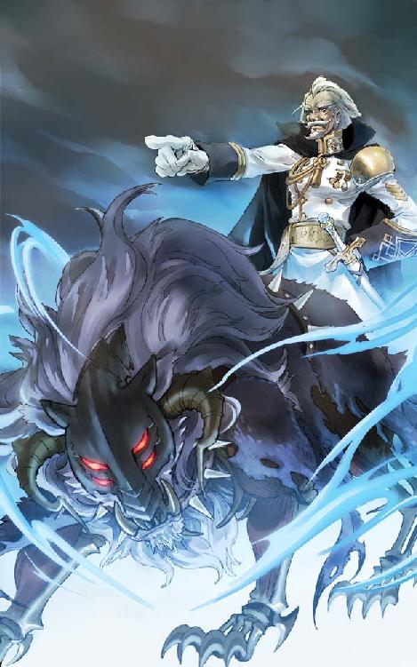
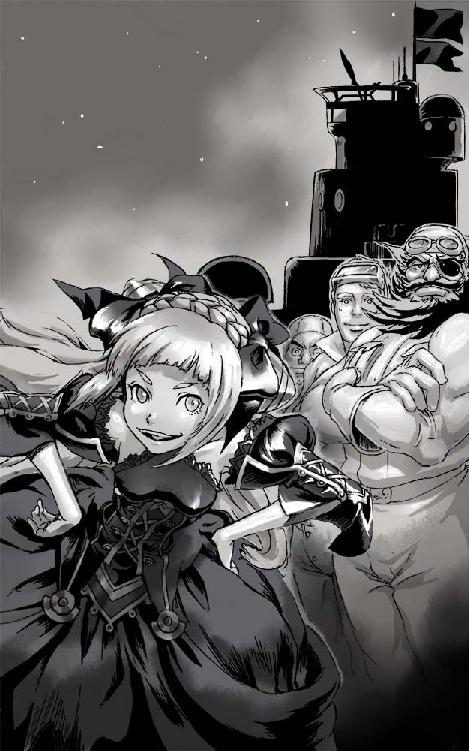
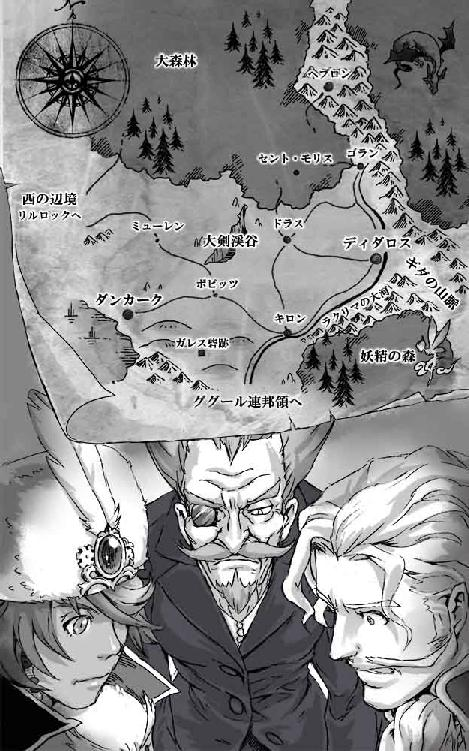
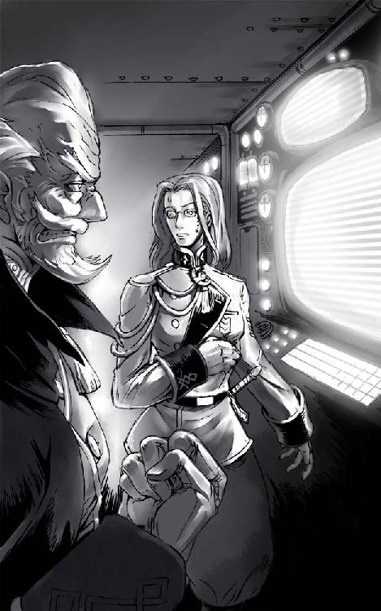
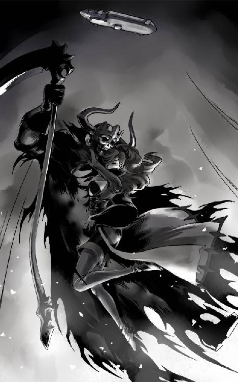

| 圧巻のグリモアール３ 遊撃姫と皆殺しの獣 | |
| 町田 松三 | |
| Matsuzo Machida (2013) | |
灰と野バラ文庫
圧巻のグリモアール ３
『遊撃姫と皆殺しの獣』
町田 松三
表紙イラスト・挿絵 加藤 美也子
目次
※この電子書籍は縦書きでレイアウトされています。
※ご覧になる環境、システムによって表示の差が認められることがあります。

まぶしい月光に照らされ眼下の雲海には巨大な飛行船の影が落ちている。
プロペラを回転させる蒸気機関のエンジン音を限界までしぼりこみ、息を殺しながら進む船は、雲間から顔を出すギダの山脈にそって一路北北西を目指していた。
未開の辺境と豊沃な中原を隔てる大山脈のふもとには広大な森林地帯が広がっていた。昔から風の街道すら迷いこむと言い伝えられてきた深い森の中には、まだまだ人の侵入をこばむ多くの危険が息づいているのだ。
しかし、こうして空を飛んで行くぶんには何も恐れる必要はない。
やがて前方に、目印である白い雪をかぶったひときわ高い峰が姿をあらわした。
「博士、山雄牛の頭です。間もなく目的地へ到着します！」
艦橋の前部で双眼鏡をのぞいていた青年が興奮気味にふり返った。
船長席に腰を下ろした黒いローブの老人は、ふところから取り出した懐中時計に目を落とし静かにうなずいた。
「ふむ予定通りだ。この飛行戦艦タラニスを隠してくれるとは、どうやら天も我らに味方してくれたようだな」
「はい」
「ところでアラン。わしのことはゼール将軍と呼ぶよう言いつけてあるだろう。何度言ったらわかるんだ。おまえは頭も切れるし魔導工学の技術も一流だが、臆病でおっちょこちょいなところが玉にキズだ」
「も、申し訳ありません」
青年はずり落ちる鼻眼鏡をなおしながら謝った。頭を下げたので、またずり落ちる。
「我らは、いよいよ世界にその名を轟かすところまでやってきたのだ。この大望が成るかどうかは皆の者ひとりひとりの双肩にかかっている。わしの副官ならば常に気を引き締め、部下の手本となるように心がけねばいかん」
「はい、ゼール将軍！」
「よし。では全艦降下準備にとりかかれ」
「はっ！」
無骨なかたちの船首を鈍く光らせた飛行船は、勢いよく雲海に波を立ち上げ、ゆっくりと分厚い雲の中へ沈んでいった。やがて、乱気流と雷に機体をきしませながら雲の下まで高度を下げると、そこには土砂降りの世界がひろがっていた。たちまち激しい風雨が艦橋の窓ガラスをたたきつける。
濃緑な大森林が絨毯となってつづく先、山の中腹に古い街並みが見えた。
自然の地形を利用して建てられた家屋はどれも切り立った崖の上に並び、街全体が鷲の巣をおもわせるシルエットを描き出していた。
石橋がかかる谷をはさんで街の城門に並立する古い塔の上では、この豪雨にもかかわらず煌々と輝く大きなかがり火が燃やされていた。
「聖なる炎だ、ヘブロンです、将軍っ！」
「おお、あの青き炎......。あの日から五年。ついに、ついに時は満ちたか......。よろしい、ではアラン。ワーグネルのヴァルキュリエの騎行をかけたまえ」
「はい」
端正な顔に笑みを浮かべ鼻眼鏡をなおした青年は、艦橋の隅に設置されている蓄音機に主人のお気に入りであるレコード盤をのせた。回転式の伝声管が針の近くへ寄せられると全艦に重厚で勇ましい楽曲が流れはじめる。
ゼール将軍は満足そうに目を閉じながら出だしのリズムを指先で描くと......、
「目標、聖都ヘブロンへ爆撃開始！ 街を焼き尽くせ！ 鉄槌兵もただちに降下せよ！」
キャプテンシートから立ち上がり叫びながら手を振り下ろした。
命令一下。低空飛行に移った飛行船から無数の焼夷弾が投下されると、嵐の中で寝静まっていた街は、あちこちから火の手が上がり瞬く間に燃え上がった。
赤い炎に照らし出された飛行船からは何本ものロープが垂らされ、それをつたって武装した兵士たちが降下をはじめた。
三角形のとがったフードをかぶり、にこやかに微笑む天使の仮面をつけた鉄槌兵と呼ばれる兵士たちは、街の中に降り立つと、おどろいて家から飛び出してきた人々を情け容赦なく虐殺した。
突然の惨劇に混乱を極めたヘブロンの街は、たちまち怒号と悲鳴が飛び交う地獄と化した。一言も声を発さない殺戮者たちは、無造作に人の魂をかき集めていく死神のように街の南側を制圧していった。
それは完璧な奇襲であった。
有史以来、ただの一度も戦の舞台になった記録がない平和な高山の町を、恐ろしい運命が襲った瞬間だったのである。
「将軍、北の門よりディダロス兵が現れました！」
「フフフ、防衛隊め意外と素早い動きだな......。だが、すべては想定の範囲内よ」
ゼール将軍は口もとを歪ませながら高笑いした。
「塔へ碇を打て、カエデスの獣を放ち、目障りなディダロスの犬どもを殲滅してやるのだ！」
「はっ！」
飛行船は城門の横にたつ古塔へ碇を撃ちこんだ。そのまま船体を係留し、つり下げたゴンドラから黒い影を降ろした。
石の塔をかけ下りた影は、大きく跳躍すると家々の屋根に飛びうつって板木とレンガをまき散らし、町の上層へと疾走していった。
依然として風雨が弱まる気配を見せない中、聖地ヘブロンの警護を務めるディダロス近衛騎士団の駐屯部隊は、この緊急事態に対応すべく、ただちに全兵力を上げて出撃した。
総督府の北門を飛び出し敵を発見するやいなや、彼らは一斉に襲いかかった。
勇猛な近衛騎士団は騎馬と歩兵を展開させ次々と敵兵を蹴散らした。泣き叫ぶ市民は丘の上にある大霊廟の中へと避難させ、閉じた門の外で守りを固めた。
「大ディダロスの騎士たちよ、死んでも門を守れ！ 我らが神祖イスカンダー大王の霊廟を賊徒の血で汚してはならぬ！」
「おおっ！」
鮮やかな白と青に彩られた鎧に身をつつみ、全軍の指揮をとるヘブロン総督セナード侯爵は白馬の上で剣を抜いた。
そして彼は見た、さがる敵兵の人垣を割って現れた不気味な黒い影を。
それは、獅子とも狼ともつかぬ異形をした巨大な魔獣であった。
カエデスの獣は、身の毛もよだつ咆哮を上げると騎士の群れへ襲いかかった。
嵐の中に響くいくつもの断末魔を耳にして、彼はサイドカーを止めた。
町を燃やす赤と聖火の青に照らされ、飛行船は浮かんでいた。
不吉な予感は当たってしまった。
彼はその船体に描かれた、『ハンマーを握る手』の紋章をじっと見つめていたが、やがて視線を正面にある石の城門へと移した。
「二人とも、行くよっ！」
叫んだ魔法使いは、閉ざされていた鉄の門に向かって呪文を唱えた。
――エレヴ大陸の南方、ググール連邦領ソーンタウン。
「キャーーーッ！」
バキュン、バキューンッ！
少女の金切り声に合わせて銃声が重なった。
「ワッハッハッハ！ 保安官はまだかあー、野郎、怖じ気づきやがったなあーっ！」
バキュン、バキューンッ！
今度は下品な笑い声につづいて銃声が重なった。
「た、たすけてーーっ！」
可憐な美少女を人質にとった盗賊団の首領は、小さな町を一望できるホテルのベランダから声を張り上げ、あたりかまわず拳銃をぶっ放していた。
人質を盾にした図体のでかいヒゲもじゃの犯人が動くたびに、地上から浴びせられたスポットライトが右へ左へと追いかけてゆく。
あたりはもうとっぷりと日が暮れ、彼らがこうして立て籠もってから実に半日が過ぎようとしていた。
ホテル前の広場には賊の逃亡をふせごうと馬の外された馬車が何台も放置され、武装した保安官助手たちが物陰から旧式のライフル銃やボウガンを向けて隙をうかがっている。
さらに、その向こうでは、野次馬となった町の住民たちが遠巻きに事件の成り行きを見守っていた。
時々ホテルから撃ちかけてくるギャングたちの銃弾は、水飲み場の樽に穴を開けたり、すぐ目の前にある保安官事務所の気にくわない看板にヒビを入れたりと、地味な嫌がらせを繰り返していた。
この劇場型犯罪を楽しんでいる立て籠もり犯の狙いは明らかであった。散々騒ぎを長引かせ、酒と食料を差し入れさせ、連邦執政官が来るまでは何も要求は言わないと駄々をこね続け、たっぷりと時間稼ぎをすることなのだ。
保安官事務所の二階。何本もの安葉巻を足もとで踏みつぶしていた男のもとへ、階段を上がって来た助手の一人が顔を出した。
「保安官、ブーツェン執政官殿が到着しましたぜ」
言われて反対側の窓を見れば、丁度、一台の豪華な馬車が街道をはずれて町へ入って来たところだった。
「野郎、やっと来やがったか......。わかった、すぐ行く」
ギラギラと目を血走らせていた保安官は帽子をつかむと階段を下りていった。
「何事ですかカペリ君。こんな時間に私を呼びつけるなんて。一体どんな大事件が起こったと言うのです？」
二人の護衛をひきつれて馬車から降りてきた執政官は、いかにも不機嫌そうな面持ちで、出迎えた保安官を見上げた。小太りでずんぐりむっくりな姿は、丸い眼鏡をかけたペンギンに似ている。
「急にお呼びだてして申し訳ありません執政官。なにせ、コトがコトでしてね。まずは、あれをご覧ください」
保安官にうながされ、執政官は窓際へ近寄った。
ホテルのベランダで少女の腕をつかんだままウイスキーのビンをラッパ飲みしている大男を指さす。
「あれが立て籠もり犯ですか」
「はい、黒熊一家の首領ゴロンゴロンと名乗っています。手下は十人ほどです」
「人質にされているレディは？」
「どうやらホテルに滞在していた旅行者のようでして、身なりから察するに相当な身分の貴族かと」
「ふむ、大体の事情は飲み込めました。彼らの要求は何ですか？」
「それが、執政官が来るまでは何も言わぬの一点張りでして。おそらく直に身代金の額を交渉するつもりではないかと......」
「まずいですね。それほどのご令嬢ですか。とにかく、ここは彼女を無事に救出することが第一ですね。まずは、あれと話をしてみましょう」
「しかし、とんでもない額をふっかけられたら交渉は難航しますよ。あの人数では全員の捕縛も不可能です。......となれば、手っ取り早くみーんな撃ち殺しちゃうのが一番じゃないでしょうかね？」
「ふむ、虫けらどもはそれでかまいませんが。万が一人質に怪我でもさせたら、どこからクレームが来るかわかりません。そこだけは慎重に対処しなければいけませんよ」
「大丈夫です。よーくわかってます。彼女も命が助かれば文句は言いますまい。それどころか、感謝のしるしにがっぽりとお礼を貰えるかもしれませんよ？」
卑しく笑うブルドッグに、ペンギンは顔をしかめた。
「どうも手荒な方法は好きではありませんが、後腐れの無い処理は名案と言えば名案です。ん？」
顎をさすりながら窓際をうろうろと歩き回った執政官は、馬車の影からカメラをかまえている一団に目をとめた。
「あの者たちは新聞記者ですか？ 魔導日報の者までいるようですが」
「はい、呼んでおきました！」
「これは実に手回しの良いことですね。確かにこの事件を解決すれば君は一躍英雄です」
「チッチッチ、私だけじゃありませんよ。ブーツェン執政官も手柄を土産に中央政府へ返り咲けます。そうすれば毎日馬車に揺られながら地方の田舎町をめぐる苦労も無くなり、広くて静かなオフィスでふんぞり返ってさえいれば、頭の固い町長連をギャフンと言わせられるようになります」
「なるほどなるほど。そういう事ですか。素敵な話だ。良いでしょう、多少の無茶は大目に見ますから、ぜひ上手く始末をつけてください」
「ありがとうございます！」
大々的な戦闘許可を取り付けることに成功し意気揚々と事務所を後にしたカペリ保安官は、すぐさま部下たちを集めて攻撃の合図を待つよう指示を出した。
まさか自分の庭でこんな大事件が起こるなどとは想像もしていなかった彼は、ひとり内心ほくそ笑んだ。大きな出世の足がかりになる舞台を整えてくれた田舎者のこそ泥たちには感謝の気持ちさえ湧いてくる。
そう、俺はこんなど田舎で終わる男ではないのだ。
保安官は拡声器を受け取り、堂々と馬車の影まで歩いて行って大声を上げた。
「ゴロンゴローン！ 私だ、保安官のカペリだ！ ただいまブーツェン執政官が到着した。あらためておまえたちの要求を聞くとの仰せだ。出てこーい！」
客室に戻って手下たちと一緒に行儀良く食事をしていた大男とレディは、さっきと同じように二人連れだってベランダへ姿を現した。
「おう、遅かったな」
答えたゴロンゴロンは、娘が手にしている酒瓶に気がつき慌てて奪い取った。
「人質は、レディは無事か？」
「このとおり無事だ、俺たちゃ見かけどおりの紳士だからな」
「キャー助けてーっ！」
とってつけたように人質の少女が悲鳴を上げた。
「今しばらくの辛抱ですレディ！ 必ずや私、カペリ保安官がお助け致します！」
「ステキっ、勇ましいことですわ、ポカリ保安官！」
「カペリ保安官です、カ・ペ・リ！」
「はーい」
若干酔っぱらっているレディは盛大な投げキッスを保安官に贈った。
「おお、麗しのお嬢さん、なんと美しい！」
「ところで、執政官様はこちらへおいでになったのですね？」
「はい、あっちで聞いてます。交渉は、この私が一任されました」
「そんじゃあ、そろそろ本題に入ぇるとすっか！」
自信満々に胸を叩く保安官に向かって、ニヤリとゴロンゴロンが笑った。
「ああ、いいだろう、身代金はいくらだ？」
「百万ゼニーだ！」
ゴロンゴロンが言い放った額を聞いて、別々の場所にいる保安官と執政官は同時に噴いた。なんと法外な。町全体から上がる税収の五年分である。
「ひゃ、百万って、おまえ正気か？ いくらなんでもそんな金あるわけないだろ！ 盗賊だからって調子にのりやがって、もうちょっと現実的な話をしたらどうだよ。え？」
顔を真っ赤にした保安官は不自然な汗を流しはじめた。
「いいえ、あなたが執政官に黙って勝手に徴収した税金があるはずですわ！ 三年前から貯め込んできた、汚いお金が！」
人質が口にした言葉を耳にした途端、執政官を取り囲んでいた保安官の部下たちがにわかにザワつきだした。
「どういうことですかね、みなさん」
執政官は半眼でまわりの男たちへ顔を向けたが、目を合わせる者はいない。
カペリ保安官は我を忘れ、馬車の陰から立ち上がった。
「な、何のことでしょうレディ、全く身におぼえのないお話ですが......」
「そうですわよね、私も信じられませんことよ。貴方のような立派な保安官が町の人々から土地やお金を巻き上げたり、何もない者からは娘を巻き上げたり、そんな事をなさっているなんて、ありえないことですもの！」
「あ、当たり前です、つくり話です！ 盗賊たちがでっち上げた......」
カペリ保安官は人質と執政官のいる方とを交互に見ながら、拡声器をつかうことも忘れて声を張り上げた。
予想外の展開におちいった交渉場面で、その表情を逃すまいと新聞記者たちが保安官に向けてシャッターを切る。パシャパシャと連続して焚かれたストロボに驚いたカペリ保安官は手で光を遮った。
「コ、コラ、写真を撮るな！」
「保安官、ご覧になってください！ あなたの無実を信じて嘘デタラメをおっしゃい！ と叱りつけた私に、彼らはこんな物を提示したのです！」
ゴロンゴロンは待ってましたとばかりにスポットライトの中心で、ふところから取り出した紙切れをかかげた。
「これは町の人が借金の形に娘を取り上げられたときの誓約書ですわ！ あらま、見てびっくり！ たしかに保安官直筆のサインがあるではありませんか！」
人質の少女はいつの間にか盗賊の腕をすり抜け自ら証文のサインを指さしていた。
「な、なななな......！」
「しかも一枚だけじゃねえぞ！ ほら、こんなにいっぱい！ 土地は俺の物、金は俺の物、保安官の票も俺の物！ まったく、ひでえ極悪人だぜ！」
ゴロンゴロンは証文の束をベランダからばらまいた。風にあおられ、それらは記者たちの顔からブーツェン執政官のつっ立っている窓にまで張り付いた。
「ああ、恐ろしい！ 誓約書には、この事を役人に告発したら命はないぞとまで書かれていますわ！ ホントにひどい、ひどすぎるぅ！」
ゴロンゴロンとレディはそろって拳を口もとに当て大げさに震え上がって見せた。
「撃ち殺せ」
「は？」
カペリ保安官は、となりで銃をかまえている助手に向かってつぶやいた。
「あの小娘を撃て。賊を狙ってはずしましたと言やぁいい」
「し、しかし......」
業を煮やした保安官は、躊躇している部下からライフルを取り上げるや、ベランダの少女に向かって発砲した。
突然の銃声に、あたりは静まりかえった。
手を取り合った格好で尻もちをついたゴロンゴロンとレディは、頭上の壁に空いた弾痕を見上げた。
「く、くっそ......」
狙いを外し、カペリ保安官は歯ぎしりした。
「キャーーーッ！ 私を、私を狙ったわーーーっ！」
「てめえ、よっくも姐さんを！ 野郎ども、やっちまえぇーっ！」
「うおおーーっ！」
いきなりズラリと窓から顔を出した黒熊一家の子分たちが、手にした機関銃を撃ちまくった。
「やれえ！ 盗賊どもをぶっ殺せっ！」
こちらも保安官の怒号と同時に反撃を開始する。
激しい銃撃戦がはじまり、街道沿いの小さな田舎町は大騒ぎになった。
銃撃の間隙をついて手榴弾を投げる黒熊一家。次々と馬車は吹き飛び、ホテル前の広場は瓦礫の散らばるさら地となった。
負けじと保安官一味も火薬を詰めた樽を転がし、ホテルの入口を吹き飛ばした。
「わわわわっ」
衝撃で落ちないよう、子分たちは慌ててそこら中にしがみついた。
しかし、誰よりも勇敢だったのは、そんな両者にはさまれた状態で必死にシャッターを切り続けた新聞記者たちである。彼らは生還すれば自らも英雄になれることを確信し、死を恐れぬど根性で取材を続けたのだ。
「カペリ保安官！ 今すぐ発砲を止めさせなさい。私が真偽のほどを確かめます！」
割れた窓から身を乗り出し、ブーツェン執政官が叫んだ。
「うるせえっ、そいつもぶっ殺せ！ 本当のことを知られたからには生かしてかえすんじゃねえ！」
馬車の間を転々と逃げ回った保安官が建物の陰から叫び返した。
これまで悪事の片棒を担いできた保安官助手たちは、今さら後戻りもできずにカペリの運命共同体となった。
「コラ、君たち！ それ以上近寄らないで！ 大問題ですよ！」
呆気なく連れてきたボディーガードたちはのされ、執政官は追いつめられた。
「や、やめたまえ！」
助手の一人がライフルの銃口を向けた、その時、
ガガガガガーーーーーッ！ と、ものすごい轟音と共に保安官事務所の壁がまるごとえぐり取られ、助手たちは粉塵の波にのまれた。
建物を裁ち割ったむこうから出現したのは黒い鉄巨人だった。
「は、はは、何ですか、何なんですか......」
命拾いしたブーツェン執政官は腰を抜かしてその場にへたり込んだ。
「いいわよポルックス！ つぎはあそこにいる保安官を捕まえなさいっ！」
「だ、だから危ねぇって、姐さん！」
飛び交う銃弾などおかまいなしにレディは片手でドレスをたくしあげ、真っ青な顔で超兵器を見つめているカペリ保安官を指さした。
巨人は命令に応え、蒸気を噴出しながらガッツポーズをとる。
保安官一味は初めて目にする鉄の怪物に戦意を喪失した。銃も弓矢もまるで歯が立たない。転がした火薬入りの樽も蹴り飛ばされ、自分たちのいる場所へ戻って来た。
派手な爆発が夜空を明るくしたあと保安官一味は降参した。
「放せ！ 放してくれ！」
ポルックスにつまみ上げられたカペリ保安官は、これまでとは別人のように取り乱して命乞いをした。
勝負がついたと知った町の人々は、一斉にホテルの前へ集まると、鉄巨人と黒熊一家を取り囲んだ。
残骸の散らばるホテルの玄関から堂々と姿を現したレディを見て歓声を上げる。
子分たちに助け出されたブーツェン執政官は、いまだに事態が飲み込めないまま唖然とした顔でレディとゴロンゴロンの前へ連れて行かれた。
気絶したカペリと仲間たちは、いつもの手際の良さでスマキにされている。
「あ、貴女は一体......」
「こちらは遊撃の乙女団のお頭、サラ・フレイア・ツェンダー様だ」
「ツェンダー様......？」
「かの名高き英雄、大ディダロス王国は蒸気伯爵の妹君と言えば、わかるか？」
兄の名を聞いた途端、執政官の顔色が変わった。
まわりの記者たちからもどよめきが上がる。
「こ、これは、あの有名な。大変失礼しました。私はググール連邦のブーツェン執政官です。この地区を担当しております」
「はじめましてブーツェン様。もう事情はおわかりね？ この男はあなたの目を盗んで町を好き放題に牛耳っていたのよ。私たちは町長たちからの依頼を受けて、ゴミ掃除をしたってわけ」
「そうでしたかそうでしたか」
横から進み出た老人がサラの手をとった。
「ありがとうございます、サラ様。これで町は平和になりました。もう、この無法者たちを恐れずに暮らせます」
「いいのよ町長。あなたや町のみんなが私たちを信じてくれたおかげだもの。こっちだって、身なりは立派な盗賊団だし。ね、ゴロンゴロン」
「へえ、まあ......」
サラに見上げられ、ゴロンゴロンは気恥ずかしそうに頭をかいた。
「それに、まだ最後の仕上げが残っているわ。保安官に隠した金のありかを吐かせるの。半分は約束通り報酬としていただくけど、いいわね？」
「もちろんです」
「あの、私は......」
もじもじと居心地が悪そうにまわりを見回す執政官にサラは詰め寄った。
「どう？ あなたがキチンと仕事をしてこなかった所為で人々が苦しめられていたのよ。心を入れかえて職務を全うすると誓うなら、これ以上は何もないわ。もし、それが約束できないなら、今日ここで起きた事をぜーんぶ連邦裁判所へ通告してあげるけど。そうしたら、どうなるかしらね？」
サラの話に、ペンギンの顔は見る見る青ざめていった。
「わ、わかりました！ これからは気持ちを引きしめ執政官の務めを果たしていくと約束します。ですから、どうか、今回ばかりは穏便に......」
「そうよね、ディダロスとググールは仲良しですもんね。保安官が旅行中の貴族に向かって発砲したなんてことが公になったら、それこそ大変ですもの。じゃあ、こいつらの処分はあなたが責任をもってきっちりとつけてちょうだい。そうしたら大目にみてあげるわ」
「はい、お任せください、レディ・サラ！」
ブーツェン執政官は姿勢正しく祖国の敬礼をした。
サラとゴロンゴロン、そして黒熊一家改め遊撃の乙女団となった盗賊たちは、昂揚した記者たちからまぶしいストロボの祝福を受けるのであった。

エレヴ大陸のほぼ中央に位置する城塞都市ディダロス王国。
曇天のひろがる空のもと、貴族たちの暮らすノブレント地区の石畳を急ぎ足で歩いて行く二人連れの姿があった。
「それにしてもいったい何事でしょうな？ 非常呼集とは。どうも朝方から王宮が騒がしいとは思っていたのですが、それと何か関係があるのでしょうか......」
「さあな。用向きは行ってみればわかるだろう。きっとまた私の力が必要な事態が発生したのだ。とにかく、この謹慎を解く気になってくれたのなら何だってかまわん。ずっと屋敷で酒を飲みつづけているだけでは身体が鈍ってしょうがない」
二週間ぶりに鉄の巨人宮へ登城した蒸気伯爵ことゲルハルト・フォン・ツェンダー伯爵と、名参謀からおもり役の執事へ戻ってしまったガルドーニの二人は、息をはずませながら女王の待つ謁見の間へと急いだ。
今から二ヶ月前。リルロックの一件を見事に解決したゲルハルトは、たちまち時の人となり、これまで以上の栄誉と名声を手に入れた。......しかし、王都で開催された凱旋パレードのわずか一週間後。妹サラ姫による移動城砦オルキデの無断私用が軍紀違反に当たると問題になり、その責任を問われた彼は、以来、ずっと居邸にて謹慎処分を受ける羽目におちいっていたのである。
その日、謁見の間の奥にある円卓の間では、ディダロスを代表する十名の大貴族と、女王を補佐する二宰相が顔をそろえる事となった。
なにやら重々しい雰囲気の中、ゲルハルトも貴族席のひとつへ座り、ガルドーニはすぐ後ろの次官席へと腰を下ろした。
間もなくして、ドラクールとシュマッカーの二大宰相を従えたヘカテ女王が奥から姿を現した。
金髪を高く結い上げた女王は、今日は派手な装いではなく、白と薄紫の落ち着いたアフタヌーン・ドレスをまとっていた。
「皆、忙しいところをご苦労......」
いつになく緊張した顔つきでヘカテ女王は口を開いた。
そろって立ち上がり騎士の礼をとった一同は、その様子を見て、この会議が何か重大な案件に対処するために開かれたものだと悟った。
「三日前の夜、私たちにとって大変忌むべき事態が発生しました。本日、諸兄らに集まってもらったのはほかでもない、その難題への対応を協議するためです」
ゆっくりと全員の顔を見渡し、ヘカテ女王はつづけた。
「神祖イスカンダーの大霊廟がある聖都ヘブロンが、何者かの襲撃を受けました」
耳を疑うような話を前に、貴族たちの間には声にならない動揺が走った。
女王は手を上げて貴族たちに沈黙をうながし、となりに座る老人にうなずいた。
「詳しいことは私から話そう」
そう言って話を引き継いだのは、国の政務を取り仕切る魔道院長のドラクール枢機卿だ。
「今朝早くヘブロンより緊急の馬車が到着した。乗っていたのはエアトン・セナード侯爵だ」
ゲルハルトは、彼の地の司令官として赴任していた親友の名を聞き青ざめた。
「セナード候は重傷を負いながらも自らヘブロンを襲った敵の様子を伝えるべく、三日をかけ通して王都まで戻った」
「エアトンは......、侯爵は無事なのですか？」
「大丈夫だ。傷は深いが、かろうじて一命はとりとめた。今は医術院で休んでいる」
思わず腰を浮かし話をさえぎってしまったゲルハルトへ、枢機卿は冷静に答えた。
となりのラムザス候が静かに肩を叩き、彼を座らせる。
「セナード候の話によれば、襲撃は空からだったそうだ。嵐の晩、突如巨大な飛行船が襲来し、町中に焼夷弾をばらまいて兵を降下させた」
「なんと......」
「飛行船......？」
「町の半分が焼かれる中、近衛騎士団は市民と大霊廟を守って戦った。そして敵兵を撃退することには成功したものの、一匹の怪物によって壊滅させられた......」
「怪物、ですか？」
今度口をはさんだのは、温和なラムザス候自身であった。
「象よりも巨大で狼より俊敏、そして獅子よりも鋭い牙と爪を持っていたそうだ。全身が長い毛で覆われ、剣も弾丸も通じぬ化け物だ」
にわかに信じがたい話に貴族たちは黙りこんだ。
「恐れながら」
静かに手を挙げたガルドーニへ全員が顔を向けた。
「よかろう、発言を。ロッテンマイヤー卿」
「襲撃者が飛行船を持っているとすれば、ただの野盗の類とは考えられませぬ。どこかの軍隊か、それに準ずる組織と推測致します」
「同感だ」
ドラクール枢機卿にかわって、軍務を取り仕切っているシュマッカー宰相が意見を肯定した。
常に思慮深く、普段から物腰のやわらかいこの老宰相は、国民をはじめ、多くの有力貴族からも絶大なる信頼をよせられているディダロス一の重鎮だ。
今から四年前、先王アポロドスが瞑目したとき、弟にあたる彼が王位を継いでも反対する者は誰一人としていなかった。だが、若くして妻を病気で亡くしていた彼は、後添いをもらうこともせず、子がない事を理由に姪のヘカテ姫へ玉座を譲ったのである。
そんな宰相の前で、ガルドーニは話を続けた。
「さすれば、賊徒の目的は何でありましょう？ 大霊廟や町からの金品強奪でしょうか？」
出自は卑しくとも頭脳明晰で名を馳せるせむしの参謀を、昔から老宰相は買っていた。
「そこだ。奴らは近衛騎士団を倒したあと、廟を荒らすことも町の略奪もせず、すぐに退散している。残して行ったものと言えば、聖門に刻んだ大きな爪痕と『神の鉄槌団』という名前だけだ」
ガルドーニの目が細められた。
「奴らの目的がわかったか？」
「はい」
ゲルハルトをはじめ、みんなが固唾を呑んでガルドーニの言葉へ意識を集中した。
「僭越ながら、敵の狙いは我が国の誇りを著しく傷つけること。これはディダロスに対しての宣戦布告と受け取るのが正しいかと存じます」
一人だけ眉ひとつ動かさなかったシュマッカー宰相をのぞき、人々は驚きの声を上げた。
「神の鉄槌団だと？ そんなふざけた名前、聞いたことがないぞ」
「なんと愚かな......、エレヴでも一、二を争う大国に野盗ふぜいが戦争をしかけてきたと言うのか？」
「その者たちの正体を突き止めるのが肝心だろう。後ろで糸を引いているのが一体どこの国なのか。ペルージャの蛮族どもか、それともザックスか？」
「そう言えば、近年、軍備に力を入れているザックスには、飛行船も降下猟兵もいると聞いたことがある」
「みな、しずまれ。女王の御前であるぞ」
ドラクール枢機卿がざわめく貴族たちをいさめた。しかし、国の未来に影が差したとあっては、混乱はそう簡単におさまらない。
「私に......」
その時、ずっと黙っていたゲルハルトが拳を震わせながら口を開いた。
「私に出撃の命を下さいっ！」
ゲルハルトは円卓を叩き、大声で叫ぶと立ち上がった。
誰もが呆気にとられ私語を忘れた。
「陛下、何卒、私めに兵をお与えください。すぐさまヘブロンへおもむき、賊徒どもの手がかりを探し出して追撃いたします！」
「ゲルハルト......」
ヘカテ女王は、幼馴染みのあまりの剣幕に面くらい、つい声をもらした。
「ツェンダー伯爵。君は、討伐任務に志願すると言うのかね？」
女王を一瞥し、ドラクール枢機卿があらためて尋ねた。
「そうです」
「お待ちください！ 討伐任務なら、是非このナイジェルにお申し付けを！」
同じく立ち上がったのはナイジェル・マーセル子爵。彼はゲルハルトにも引けをとらないがっしりとした体躯の持ち主で、剣の腕も立つ猛将だ。
「マーセル子爵、君も志願するのか？」
「はい、最新兵器をあつかえるのはツェンダー伯だけではありません。私にも陛下からお預かりした移動城砦ネルケと鉄巨人カストールがあります」
「いいえ、ナイジェルはまだ実戦経験にとぼしいひよっこです。どうか、私に！」
「何を言うゲルハルト、調子にのるのもいい加減にしろ！ 貴様はオルキデとポルックスをなくした張本人だろうが！」
「ああそうだ、だからおまえのネルケを貸せ！」
「ふざけるな！」
やおら立ち上がり、おたがいにつかみかかろうとにじり寄る二人を、まわりの貴族たちがおさえ込んだ。
「やめんか二人とも。見苦しい」
シュマッカー宰相の一言で両者は大人しく引き下がった。
場がおさまったのを確認してから、ドラクール枢機卿は咳ばらいをした。
「よいか、これはディダロスの名誉と未来に関わる一大事なのだ。冷静さを欠いた者に託せる任務ではない」
「猊下っ！」
「落ち着け伯爵！ 私は追討任務はマーセル子爵に任命するのが良いと思う。陛下、シュマッカー殿、ご判断を」
「ゲルハルト、親友を傷つけられた君の気持ちはよく理解しているつもりだ。だが、枢機卿の言うとおり一軍の指揮官たる者、戦場では務めて理性的でなければならぬ。こたびはこらえるのだ。......いかがでしょうか陛下」
二人の宰相の意見を聞き、女王はうなずいた。
「わかった。では、マーセル子爵。あなたに神の鉄槌団の追討を命じます」
「ははっ！」
「お、お待ちください、陛下！ ヘカテ様！」
ゲルハルトは承服しかねる事態に、すがるような目で女王を見つめた。
「会議はこれまでだ。皆は下がってくれ。ツェンダー伯爵とロッテンマイヤー卿に話がある」
ドラクール枢機卿にうながされ、貴族たちは退室した。
してやったりとばかりにニンマリと流し目をおくったマーセル子爵を、ゲルハルトは射殺さんばかりに睨み返した。わなわなと震えながら歯を食いしばる。
大扉が閉められ、円卓の間には女王と二宰相、そしてゲルハルトとガルドーニの五人だけとなった。
「ツェンダー卿、気をしずめて、まずはこれを見ろ」
そう言って枢機卿は取り出した新聞をゲルハルトの前に置いた。
ゲルハルトは、その一面を大々的に飾っている記事を見た瞬間、怒りを忘れた。
「こ、これは！」
魔導日報のトップにデカデカと掲載された写真には、威風堂堂と腰に手を当てた妹と、それに従い、カメラ目線で胸を張っている黒熊一家とアルフォンス整備士長。さらには、バックで同じ格好をした鉄巨人までキレイな構図でおさまっていた。
「ググール連邦のソーンタウンにあらわれた世直し姫と義賊の一団だそうだ。久しぶりに愛くるしい笑顔を見たが元気そうで何よりだな」
「はあ」
ゲルハルトは全身から力がぬけ、椅子にがっくりと腰を下ろした。
「どうかね、まず自分がすべきことが何なのかわかっただろう。サラの居場所がつかめたのだ。謹慎は解いてやるから、オルキデとポルックスを取り戻して来い。それが完了するまでのあいだ王立警察隊隊長の任を解く」
「そ、そんな、警察隊まで解任されたら、もしもの時、いったい誰がディダロスを守るのですか！」
「おまえの留守中はゴットン副長に指揮をとらせる。彼も盗賊どもに出しぬかれた一人であるから少々心許ないが、他の部隊に担当を変えないのはせめてもの情けだ。国が心配なら一刻もはやく妹を連れて帰れ。さあ、わかったらさっさと屋敷へ戻って出発の準備をすることだ」
「ぐぐ、ぐ......、わかりました」
思いつめた表情の幼馴染みをヘカテ女王は気の毒そうに見つめていたが、何も口をはさもうとはしなかった。聡明な女王は、その場の感情に流されて特別あつかいをすることが彼のためにも自分のためにもならないことをよく理解していたし、二宰相の采配が間違っているとも思っていなかった。
ガルドーニと並んでお辞儀をし部屋を出て行こうとするしょぼくれた背中へ、もう一人の宰相が声をかけた。
「ゲルハルト。出かけるまえにエアトンに会っておくがよい。彼もおまえの顔を見たがっていたぞ」
ゲルハルトは力なくふり返った。
「エアトンがですか？」
「うむ」
「ありがとうございます、そう致します」
シュマッカー宰相の優しい言葉に、彼はもう一度頭を下げた。
居残りの会議が終わった夕暮れ、ゲルハルトとガルドーニは王立魔道院の敷地内にある医術院を訪れた。
魔道院の西に広がる雑木林の中に建てられた医術院は、特別な患者しか入院することを許されていない大貴族専用の医療施設だ。一般の国民は王立大学院に併設された中央病院を利用することになっている。
街のあちこちから噴き出す蒸気や石炭が燃やされる煙で、つねに全体がもやっている王都の中にあって、ここだけは騒音と排煙から完全に切り離された場所であった。
その最上階の一室に、ヘブロンから生還したエアトン・セナード侯爵は寝かされていた。
天井から吊された右脚と身体中に巻かれた包帯が怪我の重さを物語っていた。
ゲルハルトは予想していた以上に痛々しい姿を目にした途端、元気な声をかけてやろうとしていた気持ちをひっこめた。
二人をここまで案内して来た若い看護婦は、開いていた窓のカーテンを閉めると、あまり長い時間は傷にさわりますので......。と短く言い残して部屋から出て行った。
ゲルハルトは小さくうなずき、礼を言った。
「エアトン......」
彼はベッドの横におかれた椅子へ腰を下ろすと、三年ぶりに会った親友の変わり果てた姿を見下ろした。
「ゲル......ハルト......、か......？」
「ああ、久しぶりだな」
「無様な帰還となり、恥ずかしいかぎりだ......」
「ハッハッハ、病気の療養を兼ねてヘブロンへ行ったはずが、まさか怪我をして帰って来るとは、運の悪さは子供のころからかわっていないな。いや待てよ、こうしてしぶとく生き残ったということは逆に悪運が強いのかもしれん」
ゲルハルトは笑顔で揶揄した。
「なあに......、おまえに会うまでは死ねんと......、死神のケツを蹴り飛ばしてやったまでさ......」
「フフフ、そんな減らず口がたたけるなら大丈夫だ。すぐに良くなる」
「陛下も......、同じことを言ってくれたよ......」
「そうか」
セナード候は息苦しいのか、話をするために必死に上体を起こした。慌ててゲルハルトが身体を支え、ガルドーニが腰に枕を当ててやる。
「すまない......」
壁に寄りかかる格好で侯爵は何度も深呼吸をした。
「話は聞いた。とんだ災難だったな」
「ひどい有り様だった。ヘブロンは街の半分を焼失し、駐屯部隊は壊滅した......」
「相手はどこの軍隊だ？」
「わからん。見たこともない姿だった......。三角の頭巾に天使のマスクをつけ、兵士たちは全員素顔を隠していた......。ただ、神の鉄槌団と名乗っていた」
「神の鉄槌団とは、まったくもって仰々しい名前だな。神兵気取りか」
セナード候は包帯から出ている片眼で宙を見据え、もう一度あの時の事を懸命に思い出そうとした。
「あの日は、雲ひとつない空に美しい夕焼けが広がっていた......。それなのに、夜になった途端、ものすごい嵐になってな......。聖塔の監視台からは、何も見えなくなった......」
「うむ」
「そして真夜中。人々が寝静まった時間に......、突然、雨雲をわって飛行船があらわれたんだ......」
セナード侯爵はゴホゴホとむせた。ゲルハルトは友の背中をさすり、執事から受け取った吸呑みで水を飲ませてやった。
「エアトン、もういい。もう休め。明日また話そう」
「だめだ、そうはいかない。事は一刻を争うんだ......！」
鬼気迫る表情でゲルハルトの胸をつかんだ侯爵は、あえぎながら話をつづけた。
「ゲルハルト、よく聞け！ これは誰にも言っていない、おまえだけに話すことだ......。私が命懸けで王都まで戻って来た......、本当の理由だ......」
「わ、わかった」
「気をつけろ。この事件はな......、何か巨大な陰謀の発端にすぎん。対応を誤れば、ディダロス全体を揺るがす大事になってしまうだろう......」
ゲルハルトは、わなわなと震える親友の様子にただならぬ覚悟を感じ取った。
「一体、どういうことだ、わかるように言ってくれ」
「鉄の巨人宮の中に......、敵と通じている者がいる！」
苦悶の果てに親友が告げた言葉は、ゲルハルトの背筋を凍りつかせた。
「な、なんだと？」
ついに体力の限界をむかえたセナード侯爵は、驚愕に顔をひきつらせたゲルハルトの前で仰向けに倒れこんだ。
「わ......、私を助けた魔法使いが話していた......。ヘブロンに吹きつけた嵐は、あらかじめ我々から目と耳を奪うために強力な魔法によって生み出されたものだと......。それに奴らは、霊廟の結界を破る太陽印の魔道符を持っていたのだ！」
「なんと......」
ぜえぜえと息を吐く侯爵は、自分からたくましい親友の手を探した。
「大丈夫だ」
両手でつかみ力強く握りかえしてやる。
「ゲルハルト、彼を......、グリモアールを探せ......。私は神の鉄槌団の正体を探らせようと彼に追跡を頼んだ......。若いが腕の立つ男だ。ピオという名だ......」
「ピ、ピオ？」
その名を聞き、思わずゲルハルトはガルドーニと顔を見合わせた。
「知っているのか......？」
「知っているもなにも、その魔法使いとはリルロックで共に暗黒竜と戦った仲だ」
「そうか、それで......。ならば話がはやい......、ゴホゴホッ！」
「おい、無理をするな」
「ヘブロンの南に......、セント・モリスという小さな村がある。何かつかんだら......、魔法使いは......、そこへ戻って来る手はずになっている......」
「わかった、セント・モリスだな。あとの事は、この蒸気伯爵に任せておけ！」
大切な話しを終え、ようやく肩の荷を下ろした侯爵は静かに目を閉じた。呼吸は荒いものの、その顔には小さく安堵の笑みが浮かんでいる。
「頼んだぞ、ガーディ......」
ゲルハルトは、知らぬうちに頰をつたった涙を拭うと、幼いころの愛称をつぶやいた親友に毛布をかけてやった。
ひとり祖国をつつみこもうとしている暗雲をいち早く察知したエアトンは、重傷の身をおして、その事実を自分へ伝えに来たのだ。ただ一人、重大な秘密をうちあけられる友に会うために。
これまでのしょげた様子は消え去り、ゲルハルトの面は引き締まった。自慢のカイゼル髭も男らしく天へそそり立っている。
「エアトン、おまえが私を信じて命を賭けたように、私もおまえとの約束に命を賭けよう。だから、いまは何も心配せずにゆっくり休んでくれ」
ランプの明かりをしぼり、親友の寝息が聞こえてくるのを見とどけてから、ゲルハルトとガルドーニは静かに病室を後にした。
二人が一階まで下りて来たとき、誰もいないホールの片隅に座っていた人影がふらりと立ち上がった。
こちらへ近づき、ランプの明かりに照らし出された顔を見てゲルハルトは驚いた。
「これは、シュマッカー宰相......」
ひとりの供も連れず頭からすっぽりとフードをかぶった姿は、どう見てもお忍びだとわかるものだった。
「君たちと話がしたくてな。そこに、私の馬車がある......」
宰相に導かれて医術院を出た二人は、外の木立の中に停めてある豪華な四頭立ての馬車へと入った。
「すまぬな。立ち話は誰に聞かれるかわからぬゆえ」
「滅相もありません」
「エアトンと話はできたか？」
「は......、いいえ。彼は、ずっと眠ったままでした」
「そうか」
豊かな白髪を首の後ろで束ねた宰相は、フードを下ろすと背もたれによりかかった。
「宰相も、お見舞いにいらしたのですか？」
「いや、見舞いは先刻陛下と一緒にすませた。私が隠れて追ってきたのは、おまえたちに折り入って頼みたい事があったからだ」
「私たちにですか？」
「うむ。今から話すことは陛下やトンヌラにも内緒だ。すべて私の一存によりおまえたちを巻き込むことになる。まずはそれを承知してくれ」
先ほどの会議の時とは違う、どこか沈痛な面持ちの宰相を見て二人は背筋を正した。トンヌラというのはドラクール枢機卿のファーストネームだが、彼にも内密の用件とは一体どんな事だろうとゲルハルトの胸は騒いだ。
「明日の朝になれば......」
シュマッカー宰相は用心深く窓の外を見まわし、誰もいないのを確認してから語りはじめた。
「......聖都ヘブロンが襲われた事件は魔導日報をはじめ多くの紙面に掲載される。それを見た国民は動揺し、女王は強い指導力を求められるだろう。ましてや、今回の事件はリルロックの時とは違い、我が国が助けの手をさしのべる側ではなく、正体不明の凶賊から奇襲を受け、神聖な大霊廟を汚されたと言う汚名をそそがなければならないものだ。もし賊徒を取り逃がすことにでもなれば、ディダロスの権威は地に墜ち、陛下と国の未来に重大な影響をおよぼす危険性がある......」
「万が一、ヘカテ様が王座を退くようなことにでもなれば、国は乱れますな」
「そのとおりだロッテンマイヤー卿。我々がお側にあるかぎり、断じてそのような事態を招いてはならぬ」
ゲルハルトは、宰相の話を聞いているうちに、友の恨みを晴らすことで頭がいっぱいだった己を恥じた。
「私に......、私に何ができると？」
膝の上においた拳を強くにぎる。
「明日、ヘカテ様はナイジェルの出兵式を催し、その場で国民と記者たちへ向かって、ディダロスが神の鉄槌団の追討に本気であると内外に強く公告する。これにより、マーセル子爵率いる追討軍は、他国をはじめ、全世界から注目を集めることになるだろう。正規軍としてまわりからの協力も得られるだろうが、同時に、常に動きを傍観され小回りは利かなくなる」
「はい」
「そこでだ、ゲルハルト。私の頼みと言うのはほかでもない。ナイジェルが世間の目を集めているあいだに、おまえには密かに敵の正体とアジトを突き止めてもらいたいのだ」
その言葉を聞いた瞬間、ゲルハルトの胸はカッと熱くなった。
「先に申したとおり、この極秘任務はトンヌラにも相談してはおらぬ。彼に言えば、必ずや別の人選を提案して来よう」
「宰相は、この私を選んでくださるとおっしゃるのですね！」
「うむ。名高き蒸気伯爵をこんなかたちで隠密行動にさしむけるのは忍びない。だが、困難な任務だ。先々で臨機応変に対応する力が求められる。それは他の者や、まだ若いナイジェルでは荷が重かろう」
「宰相......」
「それに、おまえには心強い軍師もついている」
「恐れ入ります」
「どうだ、引き受けてくれるか？」
「もちろんです！ このチャンスを生かさぬは、男にあらず、です！」
思わず敬礼をせんと勢いよく立ち上がったゲルハルトは天井に頭をぶつけて呻いた。
「よくぞ言ってくれた、それでこそディダロスの鷹よ」
ゲルハルトは感涙に濡れた顔を腕で拭った。
「されど、サラ様とオルキデを回収する任務はいかが致しましょう？」
「道中、機会があれば遂行しろ。無事回収を済ませた折は、そのままオルキデとポルックスを自らの指揮下に置けば良い。さすれば戦力も整うであろう」
「御意にござります」
「ありがとうございます、ありがとうございます宰相！ このゲルハルト、一命にかえて是が非でも神の鉄槌団の正体を突き止めてみせます！」
「こら、声が高い」
「も、申し訳ありません！」
小さく敬礼した格好のままおずおずと腰を下ろすゲルハルトを見て、シュマッカー宰相はようやく頬をゆるめた。
「フフフ、良い良い。ナイジェルもそうだが、わしはエアトンやおまえを息子のように思っている。皆、これからのディダロスに無くてはならぬ若者たちだ」
「身にあまる光栄にございます」
「話はこれで終わりだ。しかと頼んだぞ」
「はっ！」
かくして、二人を降ろした馬車は夜霧にまぎれて走り去った。
「国内に内通者が潜んでいる件を報告しませんでしたな」
「ああ。宰相には誠に申し訳ないが、エアトンが命懸けで伝えてきた情報だ。本来であればヘブロンに留まって街の復旧に専念したいところだろう。それを、わざわざ傷の手当ても惜しんでかけつけてきた。直に私へ伝えるために。他の誰も信用できないと考えたあいつが私にしか話さぬのなら、私も誰にも話さぬ。ダメか？」
「いいえ、賢明にございます」
「神の鉄槌団とやらの正体を見極めたあかつきには、必ずや裏切り者もこの手であぶり出してみせる。決してディダロスを好きにはさせん」
夜空を見上げたゲルハルトは決意を新たにした。
その夜、蒸気伯爵と軍師の二人は、空が白みはじめるまえに王都からひっそりと姿を消したのだった。
――時はさかのぼり、聖都襲撃事件当日の昼間。
エレヴ大陸の北に広がる大森林。
穏やかな日差しが木々の梢から斜光となってふりそそぐ森の街道を、一台のサイドカーがのんびりと走っていた。
不思議の力で満ちている森の奥深くでは、風の街道も所々で途切れていたり隠れていたりして旅人を迷わせる。そのため昔から聖都ヘブロンへ向かう巡礼者たちは、グループをつくり、森に住む妖精を雇って道案内をさせるのが習わしだった。
羽の生えた肩に乗るほどの小さな妖精は、金貨をもらえば近道を、銀貨をもらえばわかりやすい道を、銅貨をよこす者には森の出口を案内した。
いまサイドカーのボンネットの上に白いコノハズクと並んで座っている妖精は、金貨をもらったので機嫌よく道案内をしている。
「ポポ？」
「あっち！」
「ポポポ？」
「こんどは、こっち！ あの葉っぱの影をあっち！」
巨木の幹を縫うようにして走るサイドカーが分かれ道へさしかかるたびに、妖精はまさかと思う方角を指さした。しかし、言われたとおりに進んで行けば、自然と地面には街道がつづいていたのである。
しばらくして、木々の隙間からのぞく山脈の中腹に古い街並みが見えてきた。
切り立った崖の上全体に家々がひしめき、ひときわ高い山雄牛の頭の峰を背負った聖都ヘブロンの美しい姿である。
旅の一行は、大森林をぬけたところで小妖精と別れた。
山道をトロトロと登ったサイドカーは、しばらくして大きな谷にまたがる石橋の城門へ到着した。この門をくぐって橋を渡れば、崖の上に広がるヘブロンの街中へと入れるのだ。
槍を交差した門番のディダロス兵へ、依頼主が用意してくれた通行証を提示する。
それは貿易都市ベネスティアを治めるマシアス教の修道会が発行したもので、各地の教会をつなぐ早飛脚の身分を証明していた。
「ピオ・ピオンタルに、そっちはベルナデッタ・メリュジーヌか。それと......」
「これは相棒のキルウィドです」
「ふむ」
人懐っこい笑顔でバイクのハンドルを握っているのは、羽根付き帽子をかぶり、インバネス風の黒マントを羽織った少年だ。浅黒い肌に漆黒の髪。そして、これまた印象的な深く透き通った墨色の瞳。審査官に対する丁寧な受け答えと、なんとなく上品な物腰が、どこか古めかしい貴族のような印象をかもし出していた。おまけに、ちょこんと帽子の上にとまった白いコノハズクも可愛い威厳をただよわせている。
さらに目を引いたのは、側車にゆったりとおさまっている金髪の美女だ。白い肌に桃色の唇。大柄な身体をつつんだ銀色に輝く鱗鎧は絵本に登場する大昔の戦士そのものだった。ウフンとウインクをしてみせた瞳は、どういうわけか縦に細長い。
最初は、何だこのうさんくさい連中は？ と警戒した門番だったが、教会の郵便配達とわかった後は、すんなりと通行証にスタンプを押し城壁内への通行を許可してくれた。
「おい、見ろよ、すごい景色だぞ！ まるで空の上を走ってるみたいだ！」
側車から身を乗り出したベルナデッタは、崖と崖とをつなぐ大きな橋の上から下の大森林を見渡した。
「なんたってここはイスカンダー大王がその波乱の人生を終え、天に召された最期の地だからね。ほら、あの塔の聖火は、大王を火葬したときの炎が今も絶やされずに燃やしつづけられてきたものなんだよ」
蒸気バイクを一時停止させた少年は、城門の隣にそびえ立つ石の古塔を仰ぎ見た。
美しい曲線が描かれた白い塔のてっぺんでは巨大なかがり火が焚かれていた。その炎は不思議と青い色をしていて、昼夜を問わず、かなり遠くからでも見つけることができた。大森林をぬけてくる巡礼者たちにとっては、文字通りの道しるべである。
「はあー、ってことは、もう何百年も昔からあんのかよ」
「千年ぐらいかな」
「ポープー」
少年の帽子の上ではコノハズクが小さな翼で目の上にひさしをつくっている。
「なあピオ、あの旗の片方。こないだのヒゲの伯爵と同じ紋章じゃないか？」
ベルナデッタは、塔の上にひるがえる二つの旗を指さした。
「ああ、あれね。そうだよ。赤いのはディダロスの太陽旗。白い山を描いた紋章の方がヘブロンの聖峰旗さ。昔からこの都は、イスカンダー大王の血統を継ぐディダロス王から派遣された貴族によって治められてきたんだ」
「へー、おまえは相変わらず物知りだなー」
「君がなにも知らないだけだよ、歴戦の勇者なくせに」
「フン、いちいち人間どもの細かい年表なんか気にしてられっかってんだよ」
「人間ども？」
「あ、いやいや何でもない。それより飯はまだか？ もう腹がペコペコで死にそうだぞ」
「そうだね、じゃあ、どこかでお昼にしようか」
「ポッポーッ！」
ピオの言葉にベルナデッタとキルウィドは諸手をあげて賛成した。
アクセルを吹かしたサイドカーは再びトロトロと走り出し、入り組んだ坂道の多い町の中へとまぎれこんで行った。
巡礼相手の木賃宿や土産物屋がずらりと並んだ表通りをぬけ、坂道をさらに登った先にある高台のレストランで二人と一羽はバイクを降りた。
見晴らしの良いバルコニーの席へ案内され、優雅な昼食と洒落こむ。
まだ日も高いというのにテーブルの上にはベルナデッタとキルウィドが注文した大量の料理が次々と運ばれて来た。両者は他に客がいないのをいいことに、......まあ、いてもまったく気にはしなかっただろうが、ガツガツと手づかみでご馳走を口の中へ放りこんだ。毎度のことながら本気で食べ物と格闘する姿に圧倒されたピオは、ただ苦笑いを浮かべて見守っているだけだ。
ちょっと視線を横へ向けさえすれば、地上には命に芽吹いた緑の絨毯が地平線までつづき、空には爽やかな青空が広がっている。そんな雄大な景色も、生きる本能をむき出しにしている二人にとっては完全に無縁な世界なんだと少年は納得していた。
「雲もないし、しばらくは晴れがつづきそうでよかったな......」
満腹になった腹をさする相棒と用心棒へ優しく微笑みながら、ピオは食後のコーヒーを飲んだ。
三日ぶりにまともな食事にありついた一行はレストランを後にすると、この町にあるマシアス教の聖堂へと向かった。
街の頂上にある大霊廟の広場をはさんで聖堂と総督府の建物は並んでいた。その聖堂の裏庭へサイドカーは吸い込まれて行った。
ピオたちを出迎えた老年の修道士たちは、いま売り出し中の魔法使いが届けてくれた書簡と、内海の珍味やワインが目いっぱい詰め込まれた荷物を見て大そう喜んだ。
「うーん、これでもない。......こっちも違う。ところでグリモアール、例の物はどこに入っているのかね？」
若い修道士とベルナデッタがサイドカーの荷台から運び入れた木箱を開け、注意深く中を覗きこんでいたヤン主教が尋ねた。
「ああ、これです。主教様」
少年は答えると、ポケットからガラスの珠をひとつ取り出した。珠はポンッ！ と光を発して弾け、全員の見ている前で絹布に包まれた小さな鉢植えになった。
「おおお！」
パチパチパチ......と魔法を見た修道士たちが拍手をする。
「薬師のココリ様からお預かりしてきた魔草花です」
布を解いてあらわれたのは、愛らしい花をいくつか下げた黄色の鈴蘭だった。
「ほう、これが伝え聞く花か。胸の病に効くのだね？」
「はい、マッドアンガーの肝よりも効果覿面だそうです」
「それは素晴らしい！ よし、ではさっそく侯爵様のもとへお届けするとしよう。ピオ、おまえも私と一緒に来て煎ずる方法などを説明しておくれ」
「承知しました」
ピオがベネスティアのルピーヌ司祭から依頼された最も重要な用件は、これであった。幼い頃から胸の病を患っているヘブロンの総督へ貴重な薬を届ける事だったのだ。
「あっはっはっはっはっはっ、なんだその髪の毛！」
「ポッポッポッポッポッポッ！」
「そんなに笑うならベルナデッタもキルウィドも晩ご飯ぬきだ」
ほどなくして、香油で髪をきっちりと七三に撫でつけ、似合わない修道士の正装に着替えさせられたピオは、ヤン主教の随従となって広場の向かいにあるディダロスの官衙へ出かけて行った。
守衛の立つ門をくぐって中庭をめぐる回廊を歩いて行くと、小ぶりだが上品な公邸へ入った。一階の貴賓室へ通されたヤン主教とピオが一杯目の紅茶を飲み終えた頃、年若い見習い騎士の事務官が二人を呼びに来た。
「待たせてしまってすまなかった、ヤン主教」
司令室で来客を迎えたのは、ベッドの背もたれに上体をあずけた若い貴族であった。
「とんでもありません総督。まずはご挨拶をさせていただきます。この者は、かの大魔導師ジルが残した最後の弟子ピオにございます。本日は、総督へのお薬をはるばる内海より運んでまいりました」
ヤン主教にうながされ、魔法使いの弟子はうやうやしく頭を下げた。
「こちらがヘブロンの統治者、ディダロス王国のエアトン・セナード侯爵様だ」
「ピオと申します。お目にかかれて光栄です総督」
「わざわざご苦労であったな、ピオ」
王都ディダロスを代表し、ヘブロンを預かる切れ者の総督とはいったいどんな人物なのかと想像していたピオは、線の細い、まだ三十を越えたばかりの若い統治者を見て少し驚いた。病弱で一見頼りない印象だが、話をしてみれば、その聡明さと優しい人柄が誰にも安心感をあたえる好人物だ。
「私は幼い頃から胸の病を患っていてね。三年前に空気のきれいなこの地へ任務と療養を兼ねて赴任して来たんだ。おかげで随分と良くはなったんだが、過度の運動をしたり疲れたりすると胸に痛みが走って咳が止まらなくなるのだよ」
侯爵は襟元をゆるめながら微笑んだ。
「本日お持ちしたお薬は、眠りスズランと言って、魔女で薬師のココリ様が育ててくださった魔法の花です。これまで服用されていたマッドアンガーの肝より、ずっと利くとおっしゃっていました」
「それは嬉しいね。実を言うと、あの粉薬の苦さには辟易していたところなんだ」
肩をすくめる侯爵に、魔法使いは微笑んだ。
ピオは絹布を三角に折るとテーブルに敷き、その上に鉢植えを置いた。明るいところでは気がつかなかったが、よく見ると黄色い花はやわらかく光を放ち、キラキラと輝いては消える花粉を舞わせていた。
「この花は一週間に一度の周期で目を覚まします。このように花が黄色く光っているときは起きている状態です」
酒瓶の並んだ棚から伏せてあるショットグラスをひとつ拝借したピオは、四つほど垂れた小さな花を指でそっとつついた。こぼれ落ちるしずくをグラスで受け止めていくと、光の消えた花は薄紫色へ変わった。
「起きているときに花びらを揺らして蜜をとると、花はまた眠りにつきます」
「ふむ、それで眠りスズランか」
「はい」
ピオは、かすかに光る蜜の入ったグラスからマドラーで微量をすくい取ると、毒が入ってないのを証明するために自分で舐めて見せた。
うん、と頷き、あらためて両手を添えグラスをセナード侯爵へと差し出す。
「どうぞ、お召し上がりください」
グラスを受け取ったセナード侯爵は、好奇心で眺めまわし匂いを嗅いだ。
「ふむ、さわやかで、いい香りだな」
ごくりと一気に飲み干す。
「おお、甘くて美味い！ 呑み込んだあとに胸がスーッとするぞ」
「よかった。そのスーッとするのが薬が効いている証拠だそうです。根気よく一年間飲みつづければ、病は必ず良くなるとココリ様はおっしゃっていました。こちらに世話の仕方などを記した処方箋を置いておきますので、必要なときにご覧ください」
ピオは二つ折りにされたカードを鉢植えの横に置いた。
「はは、これなら毎日でもいけるよ」
セナード侯爵はグラスを返し、背もたれに身をあずけた。
「しかし、こんな花が現実にあるとは知らなかった。どこに咲いているんだい？」
「苗が生える場所はエンシェント・レントの頭です。それも樹齢三百年を越えたとびきり古いものにだけ」
「エンシェント・レント？」
「妖精の森の奥に住んでいる生きた大木です。滅多に遇える相手ではありませんが、なんとか見つけて摘んできました」
「ふーむ、魔法使いというのは、私のように官舎と仕事場の往復ばかりの者には、まったく想像もつかないところへ出かけて行くのだな」
「総督、すべての魔法使いがそうとはかぎりません。ピオは特別なのです。第一、人間嫌いで有名な妖精王の支配する森に分け入って無事にもどって来られることなど、それ自体が奇跡でございますれば」
「そうか。この小さな花は苦労のたまものなんだな。よくやってくれた、ピオ。その若さで大した魔法使いだ」
「ありがとうございます」
ピオは恥ずかしそうに頭をかいた。
以前から息子ほども年の離れた総督の病を気にかけ、何かと心をくだいてきたヤン主教は、いつもより元気な彼の様子を見て嬉しそうにうなずいた。
「それでは特別に、私から総督へ魔法使いのなんたるかをご説明致しましょう。なに、これでも若いころはほんの少しだけ魔道に興味を引かれた時代がありましてな。その時に読んだ本によれば、そもそも魔法使いとは、暗闇の迷路をさまよう囚人のごときものであると......」
ピオの前でニコニコと熱弁をふるいはじめた主教だったが、すぐさま総督の声がそれを遮った。
「それなら知っているぞ」
「ほう？」
得意気に微笑んだ総督は人さし指を立て、かつて学んだ知識を思い出そうと宙を見上げた。
「......真の暗黒の中へ置き去りにされた時、人は前後はもとより天地を見失い身動きがとれなくなる。そこで手にしたのが魔法と呼ばれる小さな蝋燭だ。ごく限られた者にしか与えられない蝋燭は素晴らしいものだが、同時に魂を破滅へと誘う呪いでもある。なぜなら、足もとを照らせるわずかな光を手に入れてしまったばかりに、人は歩くことができるようになったからだ。蝋燭の明かりを頼りに闇の深淵をあばき、この世の真理を覗いてみたいという欲求にかきたてられる。やがて気がつけば、自我を抑えられず深く危険な魔の道をさまよう囚人となってしまう......。だろ？」
「はい」
キョトンと返事をするヤン主教の横でピオはうなずいた。
「......ゆえに、一人前の魔法使いになるために最も大切なことは、なみはずれた探究心と己を厳しく律する心。ときに矛盾するこのふたつの精神を身につけ、掌に握られた蝋燭の炎が、いかに小さいかを思い知ることである」
総督は、うろおぼえの一節を最後まで言い切ることができて満足気に笑った。
「これは驚きました。その言葉は、我が師ジルが弟子たちへ伝えた魔道の理です。まさか総督がご存じとは」
「ははは、子供の頃に魔道士の家庭教師から習ったものだよ。もっとも、残念ながら私にはそちらの才能は無かったがね......。しかし、この教えは魔法に限らず権力を持つ者なら、誰にでも通じるところがある道理だ」
「お見それいたしました。ディダロスの将軍はみんな頭よりも身体を動かすのが得意な方ばかりかと思っていましたが、総督のように英明な方もいらっしゃるのですね」
「身体を動かすの？」
「あ、いえ、何でもありません、こちらの話です。はは......」
わずかに顔をひきつらせ、ピオは苦笑した。
楽しい時間を過ごしたセナード侯爵は、あらためて小さな鉢植えに視線をうつした。
スズランの花は静かな眠りについたようだ。
ヤン主教と総督府から戻ったピオは、熱心に引きとめる修道士たちの誘いを丁重に断って日が暮れないうちに聖都を後にした。
横ではせっかくのおもてなしを袖にしただのやわらかいベッドで寝たかっただのと不満たらたらに綿菓子と大女が騒いだが、彼は、今度ばかりは頑としてゆずらなかった。
それというのも、ピオにしてはめずらしく、今の仕事をはやく片付けてしまいたいという焦りがあったのである。すべての原因は今朝の魔導日報だった。
山道を下り大森林へさしかかったところで日は沈んだ。そのまま少し行った街道沿いの広場をビバークする場所に決めた一行は、サイドカーの横にテントを張って夕飯をすませた。結局、なんだかんだ言いながらもピオが総督府へ顔を出している間に市場でたっぷりと食料品を買い込んできたベルナデッタとキルウィドは、好物をたらふくかっ食らい、十分満足していびきをかきはじめたのだった。
「最近、エンゲル係数が跳ね上がって、全然お金が貯まらないんだよなあ......」
半眼でスープをすすったピオは、たき火に枝をくべた。
鞄の中に丸めてあった新聞を取り、まじまじと眺める。
『美しき姫君に率いられた大義賊団、庶民を苦しめる悪徳保安官一味を粉砕！』
そう書かれたトップ記事には、見おぼえのある顔が勢ぞろいしていた。
「はあ......」
首領である姫君の顔へ目を落とし、知らず知らずのうちに大きなため息をもらす。
「なあーんだ、こいつかっ！ はやくベネスティアへ帰りたいって理由は！」
「うわっ、わわっ、わーーっ！」
いきなりベルナデッタに横合いから顔をつき出され、ピオは動転した。
「なになに......？ なんて書いてあんだ？」
ピオはニンマリと笑う女戦士へ流し目をおくると、咳ばらいをひとつしてから記事を読みはじめた。
「現在、花嫁修業のため諸国を外遊中のディダロス王国サラ・フレイア・ツェンダー伯爵令嬢は、自らが率いる移動城砦オルキデの乗組員らと共にググール連邦のソーンタウンで大々的な世直し活動を行った。かねてよりこの町は、カペリ保安官の暴力によって支配され不正が横行していた。そんな不条理を看過できなかったのが町の救世主となったサラ姫である。彼女は警護役のゴロンゴロン提督指揮のもと、勇猛な遊撃の乙女団を動員し、はげしい銃撃戦の末に悪の保安官一味を壊滅へと追いやったのである。その天晴れなる行為に対し、ググール連邦のブーツェン執政官は、感謝状とソーンタウンの特産品である丸羊二十頭を贈呈した」
伝令使のようにハキハキと音読してみせたピオの首へぐるりと腕をまわしたベルナデッタは、ギュッと身体を引きよせ、自分も写真をのぞきこんだ。
「そうかそうか、やっぱり会いたいのか、この娘に。口では気にしてないとかもう忘れたとか言っておきながら、本当はずーっと考えてたんだろ？」
「ち、違うよ、別にそんなんじゃないよ。ただちょっと、ソーンタウンはローグシティの近くだから、帰り道に寄ってみようかなって......」
「早く行かないと、またすれちがっちゃうもんなあ？」
「あのね、その言い方は誤解を......！」
口をとがらせ必死に言いわけをするピオを放してやったベルナデッタは、笑いながら彼の肩をたたいた。
「な、なんだよ......」
「気にすんな、いいってことよ。私は寛大な女だ。何人の妻を持とうがおまえの自由さ」
「はあ？」
「龍族じゃ当たり前の事だからな」
「龍族？」
「あ、いや何でもない何でもない。さあて、明日もあるし本格的に寝るとすっか！」
ベルナデッタは無情にもキルウィドがベッドにしていた毛布を奪い取り、テントの中でゴロリと横になった。突然草地の上に放り出されたコノハズクは、小さな目をパチパチさせながら呆然としている。
ピオは、その相棒をつかんで、ひっくり返した帽子の中へ入れてやった。白い綿菓子は、またすぐにいびきをかきはじめた。
「おまえも寝ろって。ほれ、いつでも毛布に入ってきていいんだぞ」
「だから、その言い方は誤解を......」
返事も聞かないうちにベルナデッタもぐがーぐがーといびきをかきはじめた。
「はあ......」
ピオは持っていた新聞をふたたび丸め、その場に寝転んだ。
キャンプの周辺にはいつもの結界が張ってあるので、危険なものが近よって来る心配はない。
やがて目を閉じると、彼も眠りの世界へ落ちて行った。
しばらくして、夜もふけ、森がしんと静まりかえった頃......。
ポタリと頰をうった雨粒が、次の瞬間、バケツをひっくりかえしたような大雨となって大地をたたきつけた。
驚いて目を覚ましたピオは、暗いこずえの向こうにひろがる夜空一面が不気味な雨雲で覆われているのを見た。
身を起こし蒸気サイドカーにシートをかぶせると、帽子ごとキルウィドを抱えてテントの中へ転がり込む。
「な、なんだよピオ......、そんなにくっついて、甘ったれなやつだな......」
「起きてよ二人とも、外の様子が変なんだ！」
「うん？」
「ポピ？」
ピオに揺すられ、ベルナデッタとキルウィドは眠い目をこすった。
彼の言うとおりテントの窓からのぞく世界は、先ほどまでの静かな森とはうって変わった雨と風とが荒れ狂う恐ろしい姿になっていた。
上品に夜空で輝いていた三日月も、いつのまにか顔を隠してしまった。
「ふあぁー、こりゃひどい雨だな。あんなに晴れてたのにどうしたってんだ？」
のんきなベルナデッタがあくびをした瞬間、雲間から稲妻がはしったかと思うと、ものすごい雷鳴が轟いた。
「うわっ！」
「パピーッ！」
地響きまでともなう雷を間近に感じ、女戦士と綿菓子は少年に抱きついた。
「やっぱりおかしい。風も雨もずっと同じ場所で渦を巻いている......。これは普通の嵐じゃない、魔法でつくられた嵐だ！」
「なんだって？」
「これほどの魔法を、いったい誰が......」
尋常ではない有様に考えをめぐらすピオの隣でベルナデッタが何かに気づいた。
「おい、あれを見ろ！」
テントの中でよりそった二人と一羽は、顔を並べて小窓から夜空を見上げた。
すると、灰色の雨雲の中からのっそりと巨大な何かが姿をあらわした。
「あれは......、飛行船だ......」
それは、これまで見たこともない大きさの飛行船であった。しかも、一瞬、雷に浮かび上がった船体にはずらりと砲塔まで並んでいた。
ピオは不吉な胸騒ぎを感じた。
「あの方角......。まさか、ヘブロンへ向かってるんじゃ......？」
テントを飛び出したピオは呪文を唱えて大地を蹴った。足首から生えた光の翼を羽ばたかせ巨木のこずえをこえて舞い上がる。強風と横なぐりの雨に耐えながら、彼は飛行船が向かう先の山雄牛の頭を見つめた。
見る見るうちに小さくなり聖都の上空へ接近した飛行船は、チカチカと光る点を投下した。それが落ちるや街は燃え上がった。
「爆撃してる！」
信じられぬ光景にピオは息を呑んだ。
「ピポピッポー」
追いかけてきた相棒にうなずきキャンプへと降りていく。
「おーい、何か見えたかー？」
「ベルナデッタ、大変だ！ 急いでヘブロンへ引き返そう！」
ピオは嵐にかき消されぬよう大声で叫んだ。
慌ててテントをたたみ、旅の荷物を片っ端から側車のトランクへ詰め込んだサイドカーは豪雨の中を疾走した。今となってはガイドの小妖精が見つからず、大森林の入口からそれほど進んでいない場所でキャンプをしたことが逆に幸運となった。
森をぬけ、折り返しながら山腹を登っていく坂道にさしかかると、街の様子がはっきりと見えてきた。
「ポポーッ！」
「おい、どうなってんだ？ あんなに火がまわってるぞ。誰かが戦争でもおっぱじめたって言うのかよ」
ベルナデッタはゆれる座席で身をはずませながら双眼鏡をのぞいている。
サイドカーがようやく坂道を登り切ったとき、聖火の向こうに見える丘の上で激しい銃声が轟いた。
嵐の中に響くいくつもの断末魔を耳にして、ピオはサイドカーを止めた。
町を燃やす赤と聖火の青に照らされ、飛行船は浮かんでいた。
不吉な予感は当たってしまった。
彼はその船体に描かれた『ハンマーを握る手』の紋章をじっと見つめていたが、やがて視線を正面にある石の城門へと移した。
「二人とも、行くよっ！」
「パピーッ！」
「おうよっ！」
ピオが短い呪文を唱えた直後、閉ざされていた城門は爆発で吹き飛ばされた。
その中心へ向かって一気にアクセルを開く。
激しい爆煙の中、倒壊した鉄の門扉をジャンプ台にしたサイドカーが橋の上へと躍り出た。
あざやかに着地を決め、さらに加速した蒸気バイクは、煙と水しぶきを立てながら古塔に係留している飛行船の真下を走りぬけて行った。
「な、何事だ？」
いきなり眼下で起こった爆発に虚を突かれたのは、飛行船の艦橋にいるゼール将軍をはじめとした神の鉄槌団の面々であった。
「下方、蒸気バイクが一台、街を目指して走って行きます！」
目視でサイドカーを発見し、アランが叫んだ。
「何だ、まさか援軍か？ たった一台のバイクで？」
一瞬、意味がわからず独り言をつぶやいたゼール将軍は、すぐさま船長席を立ち上がった。
「何だろうがかまわん、怪しい者は撃てっ！」
命令が発せられるや謎の不審車両に向けて飛行船が砲撃を開始した。
しかし、巧みなハンドルさばきで着弾をかわしたサイドカーは、橋を渡りきると曲がりくねった市街地の中へとまぎれこんで行ってしまった。
「侵入を許しました！」
「ちっ、こしゃくな」
怒りを露わにした将軍だったが、彼はすぐに冷静さを取り戻した。
「......なあに、捨て置け。たとえ今ここでディダロス兵の二十や三十、増えたところでどうということはない。ましてや単車の一台など。我が獣の前では無力よ」
「は、しかし......」
「しかし何だ？」
めずらしく反論しかけた副官を見て、将軍は顔をしかめた。
「いえ、何でもありません......」
アラン副長は窓へ向きなおると、再び双眼鏡をかまえて霊廟の前で繰り広げられている戦いの監視に集中した。
すでに獣と近衛騎士団との戦闘は決着がつこうとしている。
「将軍、敵騎士団は、ほぼ壊滅状態のようです。間もなく制圧は完了します」
「ようし、いいだろう。それではわしらも霊廟へ降りるとするか。アラン、準備をしたまえ」
「はっ！」
アランは敬礼で応えた。
彼は、先に艦橋から出て行くゼール将軍を見送ると、あらためて蒸気バイクが走りぬけた石の橋をふり返った。
（さっきの爆発、あれは火薬ではなく魔法の力によるものだった......）
街の中は変わり果てていた。
逃げおくれた者や殺戮者の手にかかった者、落ちてきた瓦礫の下敷きになった者と、昼間の平和でにぎやかだった巡礼の都は今や恐ろしい地獄と化してしまったのだ。
ピオはハンドルを操り日中に通った坂道を登っていくが、やがて道路は崩れた家々のレンガでふさがれていた。
「どうする、行き止まりだぞ」
ベルナデッタが問いかけたとき、先の方角から騎士たちの叫び声と銃声、それに、はじめて耳にする謎の咆哮が聞こえてきた。
生き物とは思えぬおぞましい声音に、キルウィドはピオのマントの下へ身を隠した。
「急ごう、ここからは歩きだ」
わかったとばかりにベルナデッタは武器をつかんで側車から飛び降りた。
バイクのエンジンを切ったピオは魔法でサイドカーを掌にのる大きさに変えた。熱ち熱ちと、余熱で火傷をしないように注意しながらカバンの中へしまう。
辺りを警戒しながら、二人は霊廟を目指して歩き出した。
霊廟前の広場は、死屍累累の見るも無残な軍場となっていた。
わずかな守りを残し、打って出た百の騎馬たちは、ことごとくたった一頭の獣の前に敗れ去ったのだ。
広場を完全に制圧した殺戮者たちは現れた指揮官を整列して迎えた。
いまだ嵐が弱まらぬ中、黒いフードと仮面に素顔を隠したゼール将軍は、同じく赤いフードをかぶった副長を従え、満足そうにあたりの光景を見わたした。
「素晴らしい！ あの傲慢で欲深なディダロスの愚民どもを、よくぞここまで蹴散らした！」
将軍の声にこたえるため、鉄槌兵たちは自分の胸で武器を打ち鳴らした。
「そして、この霊廟に眠るイスカンダー大王も、今宵、新たな時代の幕開けを目撃して、さぞかしお喜びになっていることであろう！」
兵士たちの口から勝ちどきの声が上がり、さらに激しく胸が打ち鳴らされた。
歓声に手を振るゼール将軍の後ろでアランも小さく拍手している。
そこへ、両腕を支えられるようにして一人の騎士が引きずり出された。
「ほほう、その立派な鎧。おまえはディダロスから来たヘブロンの総督だな？」
白と青の鎧を真っ赤に染めた騎士は、血の気を失った顔で殺戮者の親玉をにらみつけた。
「フン、その敵意に満ちあふれた目は、まだ己が敗れたことを認めん目だ」
笑ったゼール将軍が口笛を吹くと、霊廟の大門の上に黒い影が浮き上がった。
「さあ、カエデスの獣よ、わしの可愛い獣よ！ 姿をあらわせ！」
巨大な獣は爛々と光る四つの目をもち、強靱なうしろ脚と、それよりも太くてたくましい前脚で巨体をささえていた。首のまわりには獅子に似たたてがみが生え、がっしりと広い肩幅からは血に滴った長毛が身体全体を覆っていた。そして何よりもおぞましいのは、大きな口にうごめく鋭い乱杙歯であった。
「ば、化け物め......」
生き残った騎士――。セナード侯爵は、近衛騎士団を壊滅に追い込んだ忌まわしき魔獣を見上げた。
「獣よ、この生け贄が見ている前で、イスカンダー大王の墓前に我らの覚悟を刻みつけるのだ！ 天地万民に知らしめるべく、おごり高ぶる愚かな末裔の心を改心させよとっ！ さあっ！ やれえっ！」
ゼール将軍の命を受けた獣は屋根から飛び降りると、重たい地響きをたてながら大門へ近づいた。
呼応するかのごとく空で重なる雷鳴に吠えながら、獣はふり上げた前足を次々と交差させた。
門に火花が散る。
そして扉には、凶賊の力を誇示する大きな爪痕が刻印されたのであった。
「ハーッハッハッハッ、これぞ！ これぞ我らが神の鉄槌団の意志である！」
「お、おのれぇ！」
怒りと屈辱に身を焼かれ、セナード侯爵は最後の力をふりしぼって暴れた。だが、腕も脚も押さえつけられ全く思いは遂げられない。
「ハッハッハッ、いい気味だ。このわしを疎み、蔑んだ罰よ！ 総督、今おまえが考えていることを当ててやるぞ。我らには、この霊廟を守る結界が破れぬとタカをくくっているのであろう？」
「な、なに！」
「ヒッヒッヒ、見ておれ」
不気味に笑ったゼール将軍は、ふところから取り出した太陽の紋章が描かれた魔道符を傷にえぐれた大門へ押しつけた。
驚きに言葉を失うセナード侯爵の前で魔道符が光り、霊廟全体をかこんでいた結界を消滅させた。
「まさか、そんな馬鹿な......」
その魔道符は、鉄の巨人宮の中で厳重に保管されている物であった。簡単に複製が作れるような代物では決してない。
「さあ総督。この門の中へ獣を解き放ったら、いったいどうなるかな？ 避難させた市民はあっけなく全滅だ」
「貴様......っ！」
「おっと、その前に、おまえを血祭りにあげてやらねばな。よこせ」
ゼール将軍はアランからナイフを受け取ると、逆手に持ちかえてふりかざした。
「死ぬがいい、ディダロスの愚鈍な犬め！」
その時、将軍の背後がカッと白く光った。
広場の片隅で大きな爆発が起きたのである。飛び散った石塊が鉄槌兵の何人かを吹き飛ばし悲鳴が上がった。
「な、なんだ？」
慌ててふり返るゼール将軍や兵士たちの前で、またもや爆発の連鎖が起こった。
突如として天から降ってきた火の玉が、次々と鉄槌兵たちを襲ったのだ。
完全に不意打ちを食らい、集結していた兵の半分が瞬時にして無力化された。
「あ、あそこです、将軍！」
腰を抜かしたアランが指さしたのは聖堂の上だった。
その丸屋根の上では、マントをひらめかせ、光り輝くルーン文字の竜巻をまとった一人の少年が立っていた。
拳ほどの隕石群を降らせた魔法使いは、次の呪文を唱え終わると十人に分裂し、別々の方向へ飛び降りた。足から生えた光る翼を羽ばたかせ、広場をかこむ建物の上を縦横無尽に飛びまわる。爆風とパニックから立ちなおる間もなく攪乱された鉄槌兵たちは、同士討になることも考えずに小銃を乱射した。
「わあっ！」
「危ない、撃つな！」
「ぐあーーっ！」
激昂したゼール将軍は、混乱する兵士たちを怒鳴りつけた。
「魔法使いめ！ 追え、邪魔者を始末しろ！」
剣を抜いた鉄槌兵が魔法使いをとらえようと散らばる。
全員の意識が魔法使いへ集中したさなか、反対側から走り出た人影がセナード侯爵を押さえていた兵士たちをぶちのめした。
「ぐっ！」
「がはっ！」
またまたふり返った将軍は、ヘブロン総督を肩に担ぎ上げた女戦士と目が合った。
「き、貴様！」
「遅っせーんだよ、このバーカ！」
不敵な笑みを浮かべた金髪の美女は、身をひるがえすと延焼をまぬがれた路地を目指して走った。
アランと共に後ろへ下がったゼール将軍は、手近にいる兵たちをつかまえて女戦士を仕留めるよう叫んだ。数名が片膝をつき小銃をかまえる。
しかし、引き金をしぼろうとした刹那、兵士たちの頭上へ飛来した小さなコノハズクがキラキラと光る粉をまき散らした。
「将軍、お下がり下さい！」
「うわわっ！」
アランは腰にすがるような格好で思い切り主人を引っ張り、二人はそのまま霊廟の門柱の影へと転がりこんだ。
目の前では光の粉を浴びた兵士たちがバタバタと倒れ、いびきをかきはじめた。
「ね、眠りの魔法か！」
「ポッパッピーッ！」
歯ぎしりをするゼール将軍にむかって白い綿菓子も不敵な笑みを浮かべた。パタパタと短い翼をはためかせ女戦士が消えた方角へと飛び去って行く。
「お、おのれ......！ アラン、獣だ、獣に追わせろ！」
「し、しかし将軍、あれをご覧ください！」
抱え起こされたゼール将軍は、副官の指さす方向を見上げて目を見張った。
吹き荒れる嵐の中、燃え立つ炎を背負って四つのシルエットが浮かんでいた。
カエデスの獣と、それを囲む三人の魔法使いである。
「......どれが本体だ？」
「わかりません」
言っている間に呪文を唱えはじめた一体へ獣が襲いかかった。家の屋根もろとも魔法使いは切り裂かれ、分身のひとつが消滅した。
同時に獣は背後からもろに火の玉をくらい、広場の石畳へ突き落とされた。
「あっちが本体です！」
反対側で詠唱の光を発していた影が空へ舞い上がった。残りの分身と交錯し、またもやどちらが本体かわからなくなった。
「こ、こしゃくな魔法使いめ！」
「違う......、あれはただの魔法使いじゃない。グリモアールだ」
「グリモアール？」
「縛めを解かれた魔法使いです」
「ど、どういうことだ？」
「説明すると長くなりますが、とにかく厄介な相手だということです。さあ、あちらへ行きましょう！」
二人は寝ていた兵を起こすと動ける者たちをまとめて体勢を立て直した。魔法使いのいる建物を取りかこむように広場をかためる。
「カエデスの獣よ！ そやつを逃がすな！ おまえの牙ではらわたを引きちぎってやるのだ！」
屋根に飛び乗った獣が雄叫びを上げてこたえた。
奇襲により敵の機先を制することには成功したものの、ピオの時間稼ぎも限界に達していた。
（こいつ、生半可な魔法じゃ歯が立たないぞ......）
下では、並んだ兵士たちが銃口を向けている。
ピオがわずかに隙を見せた瞬間、カエデスの獣は跳躍し、すぐ目の前へと迫った。重たい衝撃で割れた屋根瓦が破片となって風に舞う。
間髪を入れず、鋭い爪が彼の立っていた場所をえぐった。
空へ逃れた魔法使いは反撃の呪文を唱えたが、追いすがる獣の牙に片脚をとらえられ音もなく消滅した。
最後の分身を噛み砕いた獣がとなりの屋根へ半ばめり込みながら着地したとき、その背中にひらりと魔法使いが降り立った。
グワッと目を開き、後ろ足で立ち上がった獣が上体をひねる。
風を切り裂く鉤爪をすんでの所で躱した魔法使いは、獣の額に片手をついて逆立ちした。宙にそのまま鮮やかな弧を描き、もう片方の手に抜いた二連装ショットガンのトリガーを引く。
嵐の中に、ド、ドンッ！ と筒音が鳴り響いた。
零距離から発射された十六発ものドングリほどの大きさの銀の散弾に目を撃ち抜かれた獣は、絶叫してもんどりうった。視界を奪われ、そのまま屋根を壊しながら建物の向う側へと転げ落ちて行く。
一方、翼をひろげた魔法使いは、音もなく半壊した煙突の上へ舞い降りた。
「撃て、撃てーっ！」
鉄槌兵たちが一斉に撃ちかけるのを尻目に、魔法使いは蒸気エンジンを響かせて走ってきたサイドカーへと飛び移った。作戦通りベルナデッタの逃走地点でもとに戻しておいたバイクを彼女が運転してきたのだ。側車にはセナード侯爵とキルウィドが身を伏せている。
まごついた敵兵たちを蹴散らし細い路地でのたうつ獣の横をすりぬけたサイドカーは、猛烈なスピードで戦場から離脱して行った。
一時間後......。あれだけ強かった風は嘘のように止んだ。
今は、シトシトと弱い雨が降り続いている。
焼け落ちた家々の瓦礫はくすぶり、聖都は死んだように静まりかえった。
廃屋の窓辺に身を潜めたピオとキルウィドは、いずこかへ飛び去る飛行船をじっと見送っていた。
思わぬ乱入者に手を焼いた神の鉄槌団は、その後、街の略奪をすることもなく、飛行船から降ろしたゴンドラで負傷兵と獣の回収を済ませると早々に聖都を引き上げていったのである。
「行ったか......？」
暗がりに横たわっていた影が苦しそうな声を漏らした。
「はい。もう大丈夫です総督、敵は去りました」
鎧をはずして毛布にくるまっていたセナード侯爵は、ピオに助け起こされ水筒から水を飲んだ。
「じきにベルナデッタが総督府から救援を連れて戻って来ます。もう少しだけ辛抱してください」
「私のことなら心配ない。それよりも助けてくれたこと、あらためて礼を言うよ」
「滅相もありません。森でビバークしていたら突然嵐になりました。この嵐は強力な魔法の力で作り出されたものです。いやな予感がして、急いで戻って来たんです」
「魔法で、嵐を起こせると？」
「間違いありません。高位の魔道士の中には天候を操れる者もいます」
「まさか、嵐を起こして飛行船の接近を隠したと言うのか......。そのうえ奴らは魔道符まで用意していた......」
思いつめ、侯爵は苦しそうに咳きこんだ。
「あまりしゃべらない方が。癒やしの魔法で応急手当はしましたが、ひどい怪我です」
身を横たえたセナード侯爵は弱々しい笑みを浮かべた。
「仲間が来たら、私はすぐにディダロスへ発つ」
「そんな、無茶です。連絡なら俺が引き受けます」
「空いているのか？」
「はい。丁度、届け物も済ませたところですから」
「フフ......、そうか。ならばピオ、是非おまえに依頼したい仕事がある」
「何です？」
侯爵の顔から笑みが消え、真剣な眼差しが少年の瞳をとらえた。
「おまえの力を貸してくれ。その魔法の力で、神の鉄槌団のアジトを探り出して欲しいのだ......。太陽印の魔道符は、本国でもごく一部の大貴族にしか手にできぬ貴重な物......。それを、敵の首領は持っていた......。これはきっと、何か大きな謀がすすめられている証に違いない......」
ピオに迷っている時間はなかった。
「承知しました。その仕事、グリモアールの名にかけてお引き受けします」
彼は、力強くうなずいた。
そして時は進み、聖都ヘブロンが襲われて十日後――。
ディダロスの守る大王の霊廟が凶賊の襲撃を受けたという事件は新聞各紙で大々的に報道され、近隣諸国でも大きな話題となっていた。
エレヴ大陸の英雄であるイスカンダー大王の墓を荒らし、罪の無い市民をも虐殺した神の鉄槌団の名は、たちまち天下に鳴り響いた。
そんな中、神の鉄槌団討伐の任を受けて出陣したマーセル子爵の移動城砦ネルケは、王都と大森林の中間に位置するディダロス領の都市ドラスに駐留していた。
セナード侯にかわってヘブロンの臨時総督を任命されたラムザス侯爵の部隊と連携しながら、この町を拠点に賊の情報収集に当たっているのである。
しかし、一週間が過ぎた今も巨大飛行船はおろか敵に関する有力な手がかりは何も得られていなかった。それというのも、あの日以来、神の鉄槌団がピタリとなりを潜めてしまったからだ。
当初は意気揚々と大軍を率いていたマーセル子爵だったが、倒すべき敵の姿を見い出せぬまま日々をおくるうち、しだいに報道機関の前へ立つ機会も減っていった。
「ナイジェルのヤツ、さぞかし苛立っていることだろうな」
やわらかな日差しのもと、大きなパラソルの陰に身を隠して力いっぱいパンをかじっていたゲルハルトがつまらなさそうに言った。指先のケチャップをペロペロと舐め、読み終わった新聞をポンとテーブルの上へ置く。
「まさに膠着状態ですな」
向かいに座ったガルドーニも、小さくちぎったパンをスープにひたしながらチビチビと口にはこんでいる。
「固すぎだな」
「はい」
「そうやると食べやすいか？」
「多少は」
ゲルハルトも真似をしてパンをスープにひたした。
「ふむ、悪くないな」
「ほれ、こぼしておりますぞ」
ゲルハルトは子供の頃からそうしていたように、あごを突き出すと口もとをナプキンで拭いてもらった。
セント・モリスは、ネルケのいる城塞都市ドラスから北に大森林を入って一日のところにある小さな村だ。この村までは風の街道も途切れずにのびているので、どんな旅行者であろうと、よっぽど妖精たちから恨みを買っていないかぎり道に迷うことはない。だが、一歩木組みの北門を出れば、その先は不思議で危険に満ちた森がはじまっている。
村を縦断する街道のわきには数件の宿屋が軒をつらね、日頃から旅人たちでにぎわっていた。案内役の小妖精が見つからなかったり、森の中での野宿を避けたいと考える巡礼者たちは、そろってこの村に一泊するのが定石なのだ。
しかし、聖都が襲われるという大事件が勃発して以来、まったく事情が変わってしまった。各地から訪れた巡礼者たちは、有力な教会関係者か町に親族がいる者をのぞいて、そのほとんどがヘブロンの城門をくぐることを禁じられてしまったのである。そのため、巡礼者たちは皆セント・モリスで足止めをくらったあげく来た道を引き返さざるをえなくなっていた。
「それにしても、今日も奴の姿は見えんな......」
村に入ってすぐの、とりあえずは一番大きなホテルを宿に決めたゲルハルトとガルドーニは、今日も二階のテラスで昼食をとりながら南門を眺めていた。
「この村に来て、もう三日だぞ」
「まだ三日と考えるべきでしょう」
「ちっ、のんきな......」
「いかに腕の立つ魔法使いとは申しましても、彼らは何の援助も受けずに単独で動いているのです。きっと様々な苦労をのりこえているのに違いありますまい」
「そんなことはわかってる。だが、ただ待つだけというのは、どうも自分の性に合わんのだ」
二人がそんな会話をしている間にも、ヘブロン行きを断念した巡礼者のグループが次々と村を後にして行くのが見えた。
「もう、この宿も空っぽだな」
「なにせヘブロンは戒厳令が敷かれておりますからな。一般の巡礼を受け入れられるようになるには、まだ時間がかかることでしょう」
テーブルの上に頬杖をつき、だらけた格好であごをのせていると、南門をくぐってまた新たな巡礼者たちが村へと入ってきた。
「賽銭だけ取られて追い返されるとも知らずに、ご苦労なことだ」
「今度の巡礼団は、またずい分と大人数ですな。ひい、ふう、みい......。ざっと二十人はいますか」
「奴らがここへ押しかけたら、うるさくてかなわんな」
身勝手なことをほざきながらゲルハルトが両手を広げて大きなのびをしたとき、奥の席で食事を終え、横を通りぬけようとしていた客とぶつかった。
相手の女性は小さく悲鳴を上げると、手にしていたティーカップを落とした。
「おっと、これはすまん！ 私としたことが......」
「い、いえ、こちらこそ。申し訳ありません」
慌ててカップを拾ったゲルハルトは、近くにあった布巾を手にしてしゃがんだ女と目が合った。彼の目に飛びこんできたのは、巡礼者のローブをまとった燃えるような赤毛の美女だった。
「どこか御召物にかかりませんでしか？」
問いかけてきた女の、これまた真っ赤な唇を見つめたきり完全に動作を静止させたゲルハルトの尻を、ガルドーニがつま先で小突いた。
「あ、ああ......、だ、大丈夫だ」
「よかった」
「お嬢さんの方は、お怪我などありませんでしたかな？」
「私も大丈夫です。では、失礼いたします」
ここのところずっとしおれていたカイゼル髭をピンと立たせた男からカップを受け取った女は、清楚なお辞儀をしてテラスから去って行った。
「あのような婦人が逗留していたとは......」
「ヒゲと鼻の下がのびておりますぞ」
「黙れ。おまえの目の錯覚だ」
日は暮れたが、結局、今日も待ち人は現れなかった。
そのかわりと言ってはなんだが、ゲルハルトの予想どおり二十人の団体客は同じ宿へと宿泊することになった。十ほどの客室しかないホテルはすぐさま満杯となり、数に押されたゲルハルトとガルドーニは夕飯の席も風呂の順番も端へと追いやられた。
「あーあー、ディダロスの英雄と謳われた私が、こーんな情けないことになろうとはなー」
「苦労は人の器を大きく育てます。ご辛抱を」
散々ブーたれる主人とそれをなだめる執事は、入浴をすませると寝酒もほどほどにベッドの中へもぐりこんだ。
そして、月が中天にかかった頃――。
その半分に欠けた月の上を、小さな鳥のシルエットがパタパタと横切って行く。
こんな時間だと言うのに、しんと寝静まったホテルのロビーでは巡礼の男たちが続々と集まって来ていた。全員が音を立てぬよう三角に尖ったフードをかぶり、天使のマスクで目元を隠す。
「相手は二人。三階の一番奥の部屋だ」
窓辺に立つ影が静かな声で言った。
月明かりが逆光となって顔は見えないが声は女のものである。
「わかりやした。......半分は外へ出てホテルの表と裏を固めろ。残りは俺の後につづけ」
リーダー格の巨漢が指示を出すと、巡礼団から神の鉄槌団へと正体をあらわした男たちが一斉に動き出した。
すでにホテルの従業員たちは全員をひとまとめにして気絶させてある。
鉄槌兵たちは剣や斧など各々とくいな武器を手にし、足音を忍ばせながら階段を上っていった。最上階の一番奥。標的が寝ている部屋の前までやって来ると息を殺して中の様子をうかがった。
「......ううん、ヘカテ様......、もっと座って、もっと座ってください......」
部屋の中からは、小さないびきに混じって意味不明な寝言が聞こえてきた。
標的が完全に眠っていることを確認したリーダーが仲間へうなずいた。
数名の部下が扉を蹴破り一気に部屋の中へとなだれ込んだ。
「もっと顔に......。あん？」
扉が打ち倒される音で幸福な夢の世界から現実へと引きもどされたゲルハルトは、頭上にきらめく剣先をポカンと見つめた。
闇の中に銃声が響き、剣を振り上げていた刺客は横からうけた衝撃によって壁へ叩きつけられた。
「ゲルハルト様っ！」
護身用の小型拳銃を発射して主人を救ったガルドーニは、自分へ斬りつけてきた相手も二発目で吹き飛ばした。
ようやく状況を理解したゲルハルトは枕元に立てかけてあった剣をぬくや刺客たちを迎え撃った。
普段は謎の機械を身につけ長槍や爆弾で戦っているが、武芸の基本である剣の使い方は幼少の頃よりみっちりと仕込まれてきた男である。その腕前は無法なゴロツキどもとは雲泥の差であった。......が、そこは多勢に無勢。しかも二人とも足首まであるボーダー柄のワンピースという寝間着姿では、思ったように脚もひらけず動きが鈍った。それでもゲルハルトは教本どおりに左手を腰に当て、きれいなガニ股の姿勢をくずすことなく剣を振るう。ひとり、またひとりと敵を倒すたびナイトキャップの先端についたボンボンがリズミカルに揺れた。
「ガルドーニ、ベランダから下へ降りろ」
「はい」
敵に向けて適当にぶっ放しながらいち早くベランダへ出た参謀だったが、すぐさま下から射かけられたボウガンの矢が手すりに突き刺さったのを見て、後ろへ飛び退いた。
「裏にも敵がおります」
三人を相手に室内で大立ち回りを演じている主人の背中へ冷静に報告する。
「そいつは、念の入ったこったな！」
弾の装填をしながらガルドーニは脱出の道を探したが、三階という微妙な高さからではそのまま飛び降りるわけにも行かず、思い切って屋根に登るかと空を見上げた。
その時だ。見覚えのある小さな綿菓子が月光を背負って急降下してきたのは。
「おや、あれは？」
ヒューッと地上にいる敵の頭上へ舞い下りたコノハズクは、パタパタと短い翼を羽ばたかせて光る粉をまき散らした。すると、声もなく敵はバタバタと倒れていったではないか。
「ゲルハルト様、お味方です」
「なんだって？」
ゲルハルトが剣を打ち鳴らせながら大声で尋ねた瞬間、今度はホテルの表側から大きな爆発音が聞こえた。同時に、次々と男たちの悲鳴が上がった。
「ど、どうした？」
外で何が起こっているのかわからず、部屋の入口で身構えていたリーダーの巨漢は思わず廊下をふり返った。
すると、そこに控えていた部下たちが階段を駆け上がってきた一陣の風に、バッタバッタと弾き飛ばされた。闇の中を走った影が一気に巨漢の眼前に迫ると、それはこぼれるような金髪を乱した女剣士の姿になった。
打ち下ろされた重い一撃をかろうじて受け止めたリーダーだったが、そのままの勢いから急所を蹴り上げられ、泡を吹きながら白眼をむいた。
「おおっ、おまえは、ベルナデッタ！」
残りの賊を斬り伏せたゲルハルトは、突然あらわれた助っ人を見て懐かしさに顔をほころばせた。
「私の名をおぼえていてくれたとは、嬉しいぞ白髭伯爵」
「蒸気伯爵だ」
「どうやら、彼が来てくれたようですな」
部屋へ戻った参謀の肩ではキリッとした綿菓子が胸を張っている。
「おお、キルウィドもか！」
廊下へ出たゲルハルトは、足もとに転がる刺客たちのことなど気にもせず窓からホテルの前を見下ろした。
そこには、チリチリと焦げくさい煙を上げてひっくり返っている鉄槌兵たちの真ん中で若い魔法使いが立っていた。
「ピオーッ！」
「やっぱり、総督がよこしたのはあなただったんだね、機械伯爵！」
「蒸気伯爵だ！」
ゲルハルトは一日千秋の思いで待ち焦がれた相手を目にし、カイゼル髭を屹立させて喜んだ。
静かな夜を切り裂いた悪党の襲来によってセント・モリスの村は大騒ぎとなった。
幸いにも村人やほかの巡礼者たちに怪我人はなく、縛り上げられていたホテルの従業員たちも無事に救い出された。
そして、生け捕りにされた鉄槌団の刺客たちは、一人残らず村の男たちが用意した無人の馬小屋へと押し込まれた。
身分を明かしたゲルハルトの要請で村からドラスへ使者が使わされた。捕縛した鉄槌団を護送するために兵士を派遣してもらうためである。
ホテル前の広場に集まった村人たちは、有名な蒸気伯爵が聖都を蹂躙した悪の一味を撃退したぞと目を見張った。
どうしてディダロスの英雄がこんなところにいたのか？ という問いかけに対して、椅子の上にのぼったゲルハルトは、
「はっはっはっ。いやあ、なあに。ヘブロンを襲った凶賊どもが、まだ近くに隠れているのではないかとにらんだまで。もしもの時に備え、こうして素性を隠して密かに村を守っていたのだ！」
と、パジャマ姿のまま胸を張った。
その頼もしい言葉を耳にした人々は、胸を打たれて惜しみない拍手をおくった。
「殺されそうになってましたとは言わないんだな」
「出まかせもここまで堂に入っていると、かえって清々しいものですな」
「勉強になるなあ」
キリッと精悍な顔つきで人波を分け、ゲルハルトは仲間のもとへ戻って来た。
「どうだ。真実なぞ語らずとも現実が私たちを受け入れてくれたぞ」
「お見事でございます。されば、早々に賊どもの口から情報を引き出しませんと」
「そうであった。再会を喜ぶ前に、まずはそれをせんとな。おまえたちも一緒に立ち会ってくれ」
「うん」
一同は自警団の一人に案内され馬小屋へと歩き出した。
「しかし、巡礼団に化けて村に入るなんて、敵もなかなか考えたもんだね」
「そう言われてみれば、おかしなところはありましたな。巡礼ならば女や年寄りが多いのが普通、それが屈強な男ばかりと言うのは......」
「気がついていたなら、なぜそれをもっと早く言わんのだ。危うくおくれを取るところだったではないか。参謀としての務めを忘れたのか」
「ゲルハルト様が、旅は道連れホモはホモ連れと笑っていたからでございます」
「ぐぬぬ。......そうだ！ そもそも、おまえたちがつけられたのではないのか？」
「はん？ 今度は私たちかよ。命を助けてやったのはこっちだろ」
呆れたベルナデッタから顔をそむけゲルハルトはむくれた。
そのとき、前方から悲鳴が聞こえた。
「ひええぇぇーーーっ！」
「何だ？」
「馬小屋だ！」
全員がかけつけると、叫び声を上げた見張り番の男が小屋から飛び出してきた。
わなわなと震える手で後ろを指さす。
「何があった、どうしたと言うのだ！」
「魔道士が、魔道士があらわれて......」
ゲルハルトたちが急いで小屋をのぞいてみると、中はうっすらと紫色の霧がただよい、縛り付けられていた鉄槌団の刺客たちが全員青い顔で息絶えていた。
「うっ、これは......？」
「気をつけて、息を吸っちゃダメだ！」
ナイトキャップで口もとを押さえたゲルハルトは、部屋の暗がりに浮き出た人影へ目をこらした。
「そこにいるのは誰だ！ これは、おまえの仕業か？」
「フフ、役立たずには死んでもらったわ」
ゲルハルトは人影が発した声を聞いて己の耳を疑った。
「ま、まさかその声？」
月明かりの下、フードからのぞいたのは燃え立つような赤毛に深紅の唇......。
「魔法使いの仲間がいたなんて、噂どおり運の強い男ね。また会いましょう蒸気伯爵」
妖艶な微笑みをうかべた女魔道士は、捨て台詞を残してじわりと闇に消えた。
「どうやら、つけられていたのは私たちのようですな」
「ぐぬぬぬ......」
参謀の一言に蒸気伯爵は地団駄を踏んだ。
その後、場所をうつした四人と一羽は遅まきながら再会を喜んだ。
「大体、私がこのように情けない格好で兵も連れずにノコノコと諸国を放浪しているのはな、ピオ、おまえの責任でもあるのだぞ！」
早くも良い感じに酒がまわりはじめたゲルハルトは溢れる涙を腕でおさえながらジタバタと魔法使いを指さした。
「俺の責任？」
「そうだ。あの日、妹とおまえをリルロックに残して私だけが先に王都へ帰還したときから、どうも嫌な予感がしていたのだ。おまえがちゃんと妹の相手をしていなかった所為で、あいつはポルックスばかりか、オルキデごとおまえを追いかけて行ってしまったのだぞ！」
広げた指をわなわなと震わせゲルハルトはピオに詰め寄った。
「そ、そんなこと言ったって......」
「おかげで私は厳しい軍紀違反に問われ警察隊長の職もクビになった。今となっては失われた地位を回復する手段は、この身ひとつで神の鉄槌団を討伐するしか残されていないのだ」
「そりゃまた、随分と追い込まれたもんだな」
「まあ、半分以上は、一刻もはやく女王陛下からお褒めの言葉をいただきたいと舞い上がったゲルハルト様ご自身の、身から出た錆ではありますが......」
横で聞いている女戦士と綿菓子へ、執事は手のひらを立てて耳打ちした。
「うるさいうるさい！ とにかくだ、ピオ。おまえが責任を取れ。ずっと私と共に行動しろ、いや断っても絶対に離れんからな！ おまえと一緒にいればサラは必ずあらわれる。それから、ついでに神の鉄槌団壊滅に手を貸せ」
「えーっ？」
「えーっ？ じゃないっ！」
「滅茶苦茶だな。妹そっくりだよ......」
「申し訳ございません。すべては私めの育て方が行きとどかぬばかりに」
責任を感じてうなだれる執事の背中を、キルウィドとベルナデッタが気の毒そうにさすった。
わけのわからぬうちに激流に沈みかけている泥船へ乗せられてしまったピオは、苦笑いをはりつかせたまま何とかしてよと名参謀をふり返った。
「して、これよりいかがしますかな？ ピオ殿」
「こっちもかー」
「まずはピオ殿のつかんだ情報をうかがい、策を練るのが最善でありましょう」
「うんうん！」
名参謀の意見にもっともらしくうなずいたゲルハルトは、あらためてドアのカギを確認し、窓の外に怪しい人影がいないか見回った。そしてカーテンを閉め、戻って来ると膝がすり合う近さで腰を下ろした。
「大丈夫だ、誰にも聞かれてはいない」
パタパタと飛んだキルウィドも相棒のあぐらを玉座に見立てて偉そうに座った。
ベッドの上では、ベルナデッタが肘まくらをついて寝ころんでいる。
「ふー。わかったよ......」
ピオは鞄の中から丸めてあった羊皮紙を取り出すと、みんなの前で広げた。
それは、エレヴ大陸の中原部分を拡大した地図であった。

「......あの日、俺たちは総督の依頼を受けたあと、急いで飛行船を追いかけて大森林を南下して行ったんだけど、途中で雲の上に出られて見失ってしまったんだ。そこで風向きと天候から考えて、近くに湖か大きな川がないか探した。蒸気エンジンを回すために必要な水や燃料を補給するはずだと踏んでね」
「ふむふむ」
話しながら少年は、ギダの山脈ぞいに流れる大河、ラクリマ川の源流を指さした。
「そして、ちょうどこのあたり。ラクリマ川のほとりに草原地帯が広がっている場所を見つけたんだ。ここなら、あの大きな飛行船も着陸できる」
「待て、そこはディダロス領だぞ？ しかも鉱山都市ゴランのすぐ近くではないか！」
「うん。でも予想どおり飛行船はここへ来た。川から水をくんで、馬車が運んできた燃料を積み込んだんだ」
ピオの説明に、ガルドーニは唸った。
「......なるほど、ゴランには石炭から作りだした燃焼効率の高いコークスがあります。やつらはそれを飛行船の燃料として調達したのではないでしょうか」
「馬鹿な。ゴランにいる誰かが賊徒に荷担していると言うのか？」
「まだ確信は持てませぬが、エアトン様のお話を裏付ける証拠のひとつかと」
「ふうむ......」
考えこむ二人の前で、ピオはさらに話をつづけた。
「そして、補給を終えた飛行船は南西へ飛び去った」
「つけたのか？」
「いくら魔法があっても雲の上を飛ぶ飛行船にはとても追いつけやしないよ。俺が追跡したのは補給馬車の方さ」
「ほう」
「馬車は商人になりすまして、そのまま風の街道をゴラン、ドラスとぬけて南へ進んで行った......」
「おのれ、奴らめ......、堂々と我が領土を通過していったのか」
「......で、ボビッツの町を過ぎたところで馬車は街道をはずれたんだ。そこから、さらに南西へ進み、ダンカーク領内へ入った」
ピオが指し示す場所を見てゲルハルトとガルドーニは目を丸くした。
「そのあたりはニレの古戦場だ、今では廃墟になったガレス砦ぐらいしか......」
言いかけたゲルハルトは、ハッと息を呑んだ。
「まさか？」
「そう。神の鉄槌団は、その砦跡を改修してアジトに使っているんだ」
魔法使いの少年がうなずくのを見て、二人は顔を見合わせた。
「どうする？ ドラスに駐留しているナイジェルに知らせるか？」
「うーむ......。いや、それはいけませんな。いくら凶賊どものアジトとは言え、外交上の手続きもなしにダンカーク領内へ移動城砦を進める事は問題になります」
「ピオ、砦の中の様子はどうだった？ もう少し詳しく教えてくれ」
「それが、砦には結界が張られていてね。魔法を使うと察知されるものだったから、手は出さなかったんだ」
ガレス砦を見下ろせる丘の上へたどり着いたピオだったが、いつものようにキルウィドを送り込んで中の様子を探ろうとしたとき、強力な結界が張られていることに気づいて断念したのである。
「おまえでも無理だったのか？」
「そのへんの魔道士が張るのとは比べものにならないぐらい強い結界だったよ」
「そいつも先ほどの魔女の仕業だろうか？」
「わかりませぬ。ただ気になるのは、巡礼団を装った刺客が私たちを狙ったとするならば、王都を出たときからずっと見張られていたと見て間違いありますまい。されど、私たちが出奔したことを知っているのは、ごく一部の限られた者だけでございます」
「裏切り者は、こちらの動きを知っていて軍事物資を横流しできる地位にあり、魔法に秀でた者......、ということだな？ そんな男、あいつしか思い浮かばんぞ。ドラ......」
「しっ！ はやまってはなりませぬ。いまだ証拠は何も無いのです」
ガルドーニに口をふさがれ、肩を落としたゲルハルトは深い溜息をついた。
「敵のアジトがわかったのは大収穫だが、ネルケをもっての攻略ができぬとあらば、いったいどうしたらいいのだ？ この人数で殴り込むわけにもいくまい」
「戦力を確保するのが先決とは言え、なかなかどうして。現実には難しいところですな......」
そろって肩を落とした寝間着姿の男たちへ、少年は微笑んだ。
「戦力ならあるよ。しかも、ちょうど諸国を漫遊中で、見かけた悪は絶対に許さない頼もしい大義賊団！」
ピオの言葉に、二人は驚きの表情を浮かべた。
「お、おい」
「まさか......？」
ピオは、地図の上に魔導日報のトップ記事を叩きつけた。
そこには、あのカメラ目線で胸を張っている遊撃の乙女団の写真が載っていた。
ガレス砦内、地下研究室――。
闇に浮かぶオレンジ色をした培養液の中を、大小の泡がゆらゆらと上がっていく。
泡は規則正しい間隔で生まれ、水面ではじけては消える。
四方が八ヤーデルはあろうかという巨大な水槽の中で、それはうずくまっていた。
天井からたれた大小様々なケーブルに身体をつながれ、むき出しの心臓が脈打つたびに牙の隙間から泡が漏れていくのである。
その姿は獣と呼ぶよりも、鉄と筋肉の融合した奇っ怪な合成獣の胎児であった。
「おお、よしよし......目も再生したか。すっかり元気になったな......」
ひとり水槽の前に立つゼール将軍は、愛しい我が子を見守る父の顔で怪物へなにやら語りかけていた。
「やっぱり、ここにいたのね......」
いつのまにか姿を現した女魔道士は、ツカツカと将軍の背後へ歩みよった。
「タバサか。首尾はどうであった？ 蒸気伯爵は始末したのか？」
「あと一歩というところで邪魔が入ったわ」
「なんだ、だらしのない。他の者はどうした」
「捕まったから、みんな始末したわ」
魔女は、相手が神の鉄槌団の首領だというのにまったく気おくれする様子もなく、フードを外すと片手で赤毛をかき上げた。
「邪魔に入った相手が何者だか訊かないの？」
「何者だ？」
「魔法使いよ。傭兵くずれみたいな女戦士と白いフクロウを連れたね」
にわかにゼール将軍のおもてがくもった。不機嫌な口調でつぶやく。
「そやつこそヘブロン襲撃のさいに、わしの可愛い獣の目を撃ち抜いた魔道士だ。また舞い戻って来たとは、忌々しい奴め......」
「へえ。じゃあ、あの坊やが噂のグリモアールってわけ」
赤毛のタバサは白い指先を深紅の唇に当てながら、いま一度、頭の中に坊やの姿を思い描いた。
「アランから聞いたぞ。グリモアールと言うのはとんでもない魔法使いだそうだな？ 普通の魔道士には使えない禁呪の記された魔道書をみずからの体内に宿し、無尽蔵に呪文を使えるそうではないか」
つまらなさそうにゼール将軍が言った。
「グリモアールを創ったジルには、禁書を継がせた十三番目の弟子がいるって聞いたことがあるけど、どうやら本当だったみたいね」
タバサの言葉もそっけないものだった。その蔑んだ目はじっと醜い獣へ向けられ、苛立ちと嫌悪感を隠そうともしない。
「まあ、グリモアールなぞと大げさなことを言ったところで、所詮はインチキな時代おくれのまじない師だ。わしが心血を注いで生み出した獣の敵ではあるまい。つぎに会ったときは蒸気伯爵ともども地獄へおくってやるわ」
ゼール将軍は、ヒッヒッヒ、と気味の悪い笑い声を立てた。
「その蒸気伯爵だけど、セント・モリスから姿を消したわ」
「見失ったと言うのか？ おまえにしては不手際だな」
「お父様こそ、いつまでこんな廃墟にひっこんでいるつもりよ。あの方との約束を忘れたの？ それとも、まさか自分の復讐だけが果たせればいいと考えてるのではないでしょうね？」
「そんな心配は無用だ。約束は必ず守ってみせるわ。このカエデスの獣を使ってな」
相変わらず要領を得ない父の物言いに、魔女は、ふう......と、溜め息をついた。
「さぞかし頼もしいでしょうね、そのペットは。そいつのためにあなたは国も家族も捨てて生きてきたのだから。せいぜい役に立ってもらわなくちゃ死んだお母様も弟も浮かばれないわ」
今度ばかりは聞き流すことができずゼール将軍は娘をにらみつけた。
「ちっ、男に魔力を授けられたからと言って調子に乗るんじゃないぞ。おまえにわしの何がわかると言うのだ」
きびすを返した娘の後ろ姿に向かって吐き捨てた将軍は、その向こうから走ってくる副官の姿を見つけた。
「あ！」
タバサは、すれちがいざまに目を合わさぬよう頭を下げたアランを一瞥すると、もう一度、何とも言えない溜め息をついた。
「邪魔よ」
「も、申し訳ありません」
立ち去る魔女を見送っている副官へ、ゼール将軍は声をかけた。
「どうした？」
「は、はい。ドラスに駐留しておりましたディダロス軍に動きがありました！」
その言葉に将軍は眉をひそめた。
「追討軍を見張っている間者からの報告によると、連中はセント・モリスを中心に、周辺の街道筋すべてに検問を敷き、四方へ探索隊を派遣しているとの事です」
「探索隊だと？ ......そうか、奴らも蒸気伯爵を見失ったのだな」
「どういう事でありますか、将軍」
「どうもこうも。王都にいる同志が、あの男の行方を追う手助けをしてくれていると言う事だよ、アラン」
「なるほど」
「ありがたいが、少々出しゃばりすぎだ。私の力を過小評価してもらっては困る。そんな助けなど無くとも蒸気伯爵をおびき寄せる方法はいくらでもあるのだからな」
「と言うと、何かうまい策があるのですか？」
「蒸気伯爵が何を企んで姿を消したかは知らんが、どこかで我らの動きを探っているのは間違いない。だから、あのディダロス軍を目の前で完膚無きまでに叩きのめしてやるのだ。追討軍が敗れ、ふたたび国家の威信に傷がつけば、嫌でもむこうから顔を出して来るというものよ。どうだ、わかったか？」
「はい、将軍！」
「わかったのならアラン、すぐに追討軍の司令官へ挑戦状を送りつけろ」
「挑戦状、......ですか？」
「そう、ニレの古戦場へと誘い出し、あれを使って全滅させてやるのだ！」
言うが、ゼール将軍は高笑いをしながら視線を水槽の中へもどした。
『ディダロスの鷹こと蒸気伯爵、襲撃されるも賊を返り討ち！』
朝になってその知らせを受けたマーセル子爵は、移動城砦ネルケの艦橋でひどく不機嫌になっていた。
まずは味方に隠れてこそこそと敵を嗅ぎ回っていたゲルハルトに腹が立った。次に、近くにあって賊の動きをつかめなかった自分と配下の者たちに腹が立った。そして最後は、捕虜を受け取るためにセント・モリスへ送った兵が、捕虜は死にましたと手ぶらで引き返してきたことに腹が立った。
彼の中では栄光ある討伐軍の主役は自分なのである。バカで身勝手なカイゼル髭でもなければ、度々報告にあがる謎の魔法使いでもない。
しかも、簡単に襲撃の内容を伝えたきりカイゼル髭は行方をくらませてしまったと言うではないか。恥を忍んで王都へ報告すれば、今度は、すぐさまそのカイゼル髭を見つけ出して身柄を確保せよ！ との指令がとどいた。
何が起きているのかわけもわからず、敵にも味方にも業を煮やしたマーセル子爵は、持てる兵力を総動員してゲルハルトを捜索させた。だが、煙のように跡形も無く消えてしまった彼は、どこの検問にも引っかかることはなかった。
この失踪はゲルハルトが同時に内通者の監視からも逃れたという事なのだが、味方の中に裏切り者がいることを知らない子爵は、もちろん彼の思惑など想像もつかず、自分だけが蚊帳の外に置かれた気がして胸糞が悪かった。
「こうなったら、是が非でも敵の尻尾をつかみ、派手に一戦交えねば正規軍を預かってきた己の立場がなくなってしまう......。ゲルハルトごときに撃退できる程度の賊だ。俺が相手になればかるくひとひねりよ」
マーセル子爵は、手にした酒を一気にあおると空になったグラスを床へたたきつけた。
セント・モリスで姿をくらました蒸気伯爵の一行は、大森林をぬけると風の街道からはずれた草原地帯を南下し、大剣渓谷と呼ばれる巨大な谷へ下りていた。
この大渓谷は、ギダの山脈の高さに匹敵するほどの深さの凹地となっており、断層に沿って険しい道がつづいていた。そこは人馬でも踏破が難しく、とてもじゃないがサイドカーが走れる場所ではなかった。ゲルハルトたちは全員馬を下り、徒歩で谷をぬけるまで進んでいたのだった。
谷へ下りて三日目。今日も日が暮れた。
一行は小川の流れる岩場の影にテントを張りビバークをした。
谷底は日中から怪物がうろつく危険な場所だったが、キャンプに張られたピオの結界の中は安全だった。この夜も火だけ絶やさぬように見張りの順番を決め、一同は眠りについた。
翌朝。空が白みはじめた頃、ピオは目の前に出現した光るニワトリの気配で目を覚ました。
当番のくせに堂々と眠っていたキルウィドと一緒に寝ボケまなこをこすっている彼の前で、目を血走らせたニワトリはまだら模様のたまごをひとつ産み落とした。コケーッ！ とひと鳴きしパフッと消える。
「うーん......。なんだそいつは？」
昨夜もちゃんとナイトキャップをかぶって寝ていたゲルハルトが尋ねた。
「ふあぁ......。伝書たまごだよ。ルピーヌ司祭からの手紙が入ってるんだ」
ピオはたまごを割ると中から手紙と新聞を取り出した。ビューンともとの大きさに戻るのを見ていたゲルハルトが身を起こし、片手を出す。
「これも魔法か？」
「うん」
ピオは新聞をゲルハルトに渡すと、手紙の封蝋をはずした。
読み進んでいくうちに、寝不足の顔に見る見る笑みが広がった。
「みんな、オルキデの居場所がわかったよ！ すぐ出発の準備をしよう」
その声に寝床をぬけ出した面々は、ゾロゾロとピオを取り囲むように手紙をのぞき込んだ。
司祭からの知らせによれば、オルキデはドラスの南西にあるボビッツと言う町を目指して出発したと書かれていた。
すぐさま地図を広げたガルドーニを挟んでピオとベルナデッタが顔を並べる。
「ボビッツの町ってのは、どっちの方角だよ？」
「我々が今いる大剣渓谷からは真南にあたりますな。今日中に谷をぬけることができれば明日の夜にはたどり着ける距離です」
「おお、そりゃよかったじゃないか。よし、急ごう！」
きびきびと朝食の準備に取りかかった一同の中で、ひとりゲルハルトだけが新聞を見つめたきり微動だにしないでいた。その様子が心配になり、執事が声をかけてみると彼は真顔で紙面をこちらへ向けた。
「これは昨日の魔導日報だが、マズいことになったぞ。追討軍が進軍を開始したそうだ」
「進軍ですと？」
「見ろ。神の鉄槌団からナイジェルのもとへ挑戦状が届いた。やつめ、それにこたえてニレの古戦場をめざして進軍したとある」
新聞のトップには勇ましく空を指さしたマーセル子爵と、彼の指揮する移動城砦ネルケが大きく掲載されていた。
「なになに......、神の鉄槌団から挑戦状！ ディダロスの猛将、これに応ず！」
「わざわざ自分たちの隠れ家をさらしてまで挑戦状をたたきつけて来るとは、敵はよほど戦に勝つ自信があると見えますな。これは、追討軍をおびきよせる罠の可能性が高いと思われますぞ」
「バカが、まんまとそれに引っかかってしまったのか......」
ゲルハルトは自分の単純さを棚に上げ、あっさり挑発にのったライバルの行動を非難した。事の成り行きによっては間違いなく自分が飾っていたはずの一面を見ながらである。
ほどなくして腹ごしらえをすませた一行は、大渓谷の南端に向かって歩き出した。
その日は、風の強い一日となった。
挑戦を受けてから三日後。夕日が空をあかね色に染める中......。
大剣渓谷の南にあるボビッツの町からさらに南へ半日ほど行ったニレの古戦場に、もくもくと黒煙を噴き上げながら巨大な機械の城が姿をあらわした。
移動城砦ネルケが進む緩やかな丘陵がつらなる彼方に、古い石造りの砦があった。
崩れた城壁と半壊したいくつもの塔。
まばらにころがる石の残骸。
それまでつづいていた草原の緑が、砦を中心に荒れ果てた茶色の荒野へと変色しているのがひどく不気味に見えた。
長く放置されてきた平城はどう見てもただの廃墟であったが、今は城内のあちこちでかがり火が焚かれ、何人もの兵士たちの影があった。
「ガレス砦......。あれが敵の本拠地か。かつてイスカンダー大王が西の蛮族どもを平定するときに攻め滅ぼした拠点をアジトに改造するとは、つくづくディダロスをコケにしてくれるやつらだ」
マーセル子爵は悪態を吐きながら覗いていた双眼鏡を下ろした。
「斥候隊の報告によりますと城門は東西の二カ所。どちらも固く閉ざされ、中にはおよそ五十の兵が待機しているとのことです」
「フン、たった五十か。こちらは多砲塔の移動城砦に三百の兵力。そしてカストールだ。あのようなぼろ城、落とすのに一時間とかかるまい」
砦の北側、ふたつの丘をへだてた距離でネルケは停止した。
「総員第一種警戒体勢のまま、二交代で食事と仮眠をとらせろ。明朝、日の出とともにガレス砦へ総攻撃をかける！」
「はっ！」
ナイジェル・マーセル子爵は集合した隊長たちへ命を下した。
そして、夜明けとともにディダロス追討軍は進撃をはじめた。
ゆっくりと前進するネルケの左右では、蒸気装甲車から展開した兵士たちが陣形を組み、大楯をかまえて歩いて行く。
やがて一定の距離まで近づいたところで停止し、ネルケは砲撃を開始した。
朝もやにかすむ敵城から、次々と炸裂した砲弾の爆煙が上がる。
最新兵器による苛烈な砲火の前では敵の射かけるボウガンなどまるで意味を成さず、東側の城門に狙いを定めたマーセル子爵は、門を吹き飛ばすほどに火力を集中させた。
八サンチ加農砲を軸に全七門の大砲がつくり出す火力は、同型艦であるオルキデをも凌駕する、まさに圧倒的と言える攻勢であった。
東門は壁ごと崩れ落ち、敵兵は蜘蛛の子を散らすように逃げ惑った。
「ようし、いまだ、全軍城内へ突撃ーっ！」
ろくな抵抗も受けずに突破口を開いて勢いづいたディダロス兵たちは、突撃命令のもと一気に門へ殺到した。
その時、城壁の上に一頭の獣のシルエットが浮かび上がった。
カエデスの獣が咆哮するのと同時に、空を切り裂くオレンジ色の怪光線が砦から発射された。
光線は上空で大きくうねり弓形に弾道を下へ変化させながら、地上の軍勢めがけて撃ち降ろしていった。
鋭角な放物線を描いて大地を打った光は、ものすごい衝撃で地面をえぐるとネルケに併走していた蒸気装甲車を吹き飛ばした。
突然の轟音とあまりの威力に機体をあおられ、蒸気機甲部隊の進撃は止まった。
「な、な、なんだ、今のは？」
艦長席につかまり足を踏ん張ったマーセル子爵が叫んだ。
「ほ、砲撃であります！ 敵城からの！」
「馬鹿な、大砲は一門も無かったはずだろう！」
「はい、しかしっ」
また前方で。空がオレンジ色に光った。
「うわぁぁーっ！」
ふたたびネルケが大きく揺れた。
二発目は反対側を走っていた装甲車を直撃し、慌てて飛び降りる乗員たちを巻き込んで爆発した。
マーセル子爵は、大地をけずりながら消滅した怪光線に戦慄した。
その光は火薬によって爆発する火砲とはまるで違っていた。異常なまでの高熱と衝撃波をともなう破壊力は、彼が一度も見たことの無いものであった。
「こ、これはいったい......」
「艦長、兵が、兵が！」
震える我が身を悟られぬよう歯を食いしばったマーセル子爵は、副官の叫び声にふり返った。
前方では、城門に突撃した兵たちが象よりも大きな魔獣に襲われ、総崩れとなっていた。
「あれが、カエデスの獣か......」
ここでうろたえては敵の思うつぼだと必死に自分に言い聞かせ、子爵は声をふりしぼった。
「一度兵たちを後退させろ！ カストールを出してあの化け物を倒すのだ！」
「はっ！ カストール隊、前進！」
ネルケの艦橋部から赤い発煙弾が打ち上げられ、それを確認した大型の蒸気装甲車が城門へ向けて加速していった。
「頼むぞ、ネルソン、リカルド......」
「ハッハッハッ、どうだ精霊子加速砲の威力は！ わしの魔導工学の粋を集めた超兵器にかかれば、おまえたちの赤サビた大砲なんぞ足もとにもおよばぬわ！」
砦の司令室でゼール将軍は声を張り上げた。
「しかしアラン、ちと照準が甘いようだぞ？ あのデカ物に命中しとらん」
「申し訳ありません将軍。エネルギー源であるノームどもの霊子抽出抵抗が強く、制御がまだ完全にできておりません」
「......ちっ、まー仕方ないか。一発撃てばやつらの寿命は十年縮むからな。では、しっかり狙え、ムダ弾を撃たぬようにな」
「はい！」
アランは手もとのレバーを操作しながら、次弾の充填状況を確認した。
興奮しながら戦況を見守る将軍へ、今度は別の団員が声を発した。
「ゼール将軍、敵の蒸気車両が一台突出して向かってまいります！ 荷台に巨人を載せているもようです！」
「おお、ついにカストールを出してきおったか！ よし、もう雑魚の相手はやめて、カエデスの獣に迎撃させろ！」
「はっ！」
まるでチェスの駒を動かす子供のように、将軍ははしゃぎながら指示を出した。
走る装甲車の荷台では、片膝をついた巨人がゆっくりと身体を起こし始めていた。
「カストール全起動信号青。基本意識覚醒完了。格闘から戦術装備を変更、右腕バトルアクス、左腕カイトシールド！」
装甲車の助手席に座り、胸に大きなアコーディオン型の操縦機を装着したネルソン・ピケット大尉は、腰のファイルから不規則なパンチ穴が空けられた戦術プログラムの厚紙を二枚選ぶと、前部のスリットに差し込んだ。フワフワと左手を動かし蛇腹に空気を送って二本の真鍮管からオルガンに似た音を出す。
この音色こそ、鉄巨人カストールを操る命令なのである。
目を光らせ、全身の関節部から蒸気を放出させた鉄巨人は、装甲車の側面に備え付けられている武器の中から鋼鉄製の戦斧と四角い盾をつかんだ。
「ネルソン、来たぞ！」
装甲車のハンドルを握るリカルド・パントレイゼ中尉が、こちらへ走ってくる獣を見て叫んだ。
「カストール、発進っ！」
ピケット大尉は大きく左手を動かし、同時に複雑な順番で右手のボタンを押した。
命令音を受けて荷台からジャンプしたカストールは、飛びかかったカエデスの獣へ強烈な蹴りを見舞いながら地面へ着地した。
瓦礫をまき散らして大地に叩きつけられた獣は、すぐに起き上がると頭を低くした姿勢で牙を見せた。
大きさも同じなら力もほぼ互角だと感じ取った魔獣は、赤く光る四つの目で初めて対峙する強敵をにらみつけた。ピオに撃たれた傷は、すでに完治している。
距離をとった装甲車の頭上を三発目の怪光線が上っていった。
光は後方のネルケをわずかにかすめて着弾し、大きな爆煙を上げた。
それが戦いの合図となった。
カエデスの獣は雄叫びを上げてジャンプし、カストールは盾を押し出して戦斧を振りかぶった。
大剣渓谷の出口は予想外の難所つづきであった。
いりくんだ岩場と生い茂った木々が行く手を遮る中、切り立った絶壁を何度も迂回し、ようやく馬が登れそうな細い道を見つけて蒸気伯爵の一行は進んで来た。
すでに食料は底をつきてしまい、丸二日水だけでしのいでいた仲間たちの顔には疲労の色が濃かった。
四人と一羽は足場の悪い崖路を、ほとんど一日がかりで登りきった。
谷の先に広がる小さな森に出た時には精も根も尽き果てていたが、彼らを待っていたのは思いもよらぬ光景だった。
夕闇の森の中に見覚えのある黒い鉄塔が立っていたのだ。
「あ、あれは！」
どんなに険しい道だろうが突き進む正義の無限軌道。
諸悪を粉砕する最強の八サンチ加農砲と副砲群。
戦局を勝利へと導く軍神が降臨する艦橋。
そして、誇らしげにひるがえる大ディダロスの太陽旗と......、角に可愛いリボンをつけた一角獣？ ......の旗。
草むらにへたりこんだ一同の前に鎮座していたのは、見まごうことなき移動城砦オルキデであった。
鋼鉄の移動戦車は広場にテントを張り野営の準備をはじめたところらしく。パチパチと火のはぜる音に混じって、男たちのなごやかな笑い声が聞こえてくる。そして何よりも、辺りには食欲を刺激するいい香りが漂っているのだ。
「おおー、オルキデですぞっ！」
「来てくれたんだ！」
全身泥まみれになって谷を上がってきた一同は、焚き火にかけられているイノシシの丸焼きを発見して生ツバを飲み込んだ。
こみ上げてくる涙を拭おうともせず歓喜に跳び上がる。
「ああ、オルキデーっ！」
「食い物だーっ！」
「プポッポーッ！」
「サラーッ！」
叫ぶや、諸手を挙げて走り出した。
長く辛い旅路の果てに、ようやくわが家へ帰り着いた時と似た感覚に突き動かされ、四人はわれ先にと前へのめった。
蛇行する獣道をかけおりる最中、そろって大きく手を振りあごを突き出し枝をへし折って競り合う横一列の中で、ゲルハルトがけっつまづいて転んだ。
「ほげえっ！」
「ゲルハルト様！」
慌てて立ち止まった参謀を置き去りにし、ピオとベルナデッタはかまわず走った。下り坂の行き止まりにある岩を蹴って、夕焼けのさしこむ木々のシルエットへ身を踊らせる。
そして華麗に焚き火の手前にある干し草の上へ着地した。
......のだが、ズボッ！ という音を残して二人は草で隠されていた落とし穴へはまり込んだ。しかも、中にはご丁寧なことに水まで張られていたのである。
わらわらと集まって来た男たちがのぞき込む前で、状況を理解出来ずにパニックに陥っていた二人だが、足がつくとわかったベルナデッタがまず首を出した。
となりで溺れている少年の腰をつかみ、ぐいと顔を出してやる。
「プ、プハッ！ な、なんで落とし穴が......？」
泥水を吐きながらベルナデッタにしがみついたピオは、居並んだ男たちの顔を見上げた。その頭へ、パタパタと白い綿菓子が舞い下りた。
「お、おまえ、ピオじゃねえかっ！」
「へ？」
ゴロンゴロンが叫ぶや、落とし穴にはまった魔法使いの姿を見た黒熊一家の面々からどっと笑い声が上がった。
「なに、ピオですって？」
「あー、姐さん、来てください！ ピオです！ ピオの野郎がイノシシの罠に掛かりやがった！」
艦橋部のデッキからかけられた声にゴロンゴロンが答えた。
そして、むさ苦しい男たちの人垣を割って現れたのは、黒いゴスロリドレスをまとったオルキデの美しい艦長であった。
三ヶ月ぶりの再会に胸をときめかせた少女は、息が詰まりそうになるのをこらえながら、努めて平静をよそおい落とし穴の二人を見下ろした。
「サラ！」
泥で真っ黒になった小さい方の人影が嬉しそうに白い歯をのぞかせた。
しかし、少女はツンと上を向くと蔑むような目で口を開いた。
「まーたまぬけなイノシシが掛かったのかと思ったら、あらあらホントに魔法使いのピオ君だわ。それにそっちは筋肉おっぱい女」
サラは冷酷に言い放ち、白い歯をキラリと光らせた。
両手を腰に当て、ミニスカートからすらりと伸びた脚を広げて立つ姿は、近頃都会で流行っているパルプ雑誌のモデルのようだ。
ピオはそんな彼女を見上げたきり、ポカンと黙りこんだ。
「ん？」
彼の視線を追ったベルナデッタも、ニヤリと鋭い犬歯を光らせる。
「まさか、こーんな場所で会えるなんて奇遇ねえ！ リルロックでお別れしてからずい分経つけど、相変わらずいじましい使いっ走りみたいな仕事に精を出しているようじゃない。それにくらべて私たちときたら、ポラン村の果樹園を再建して村人たちみんなに感謝される中、涙に送られて村を後にして来たのよ。世のため人のために働く尊さを知った黒熊一家もね、私が世直しの諸国漫遊をしたいと提案したら一も二も無くご一緒します！ って手を上げてくれたの。どお？ 遊撃の乙女団に生まれ変わった私たちの雄飛。しょぼくれた人生をおくっているあなたも、どこかで新聞ぐらいは見たでしょう？ あれからどのくらい人助けをしてきたか。たった三ヶ月の間に数えきれないほど悪を懲らしめたのよ。ブタを盗んだ馬泥棒も追い剥ぎに遭った瀕死の奴隷商人も川で溺れていた山賊も守銭奴と化した悪徳保安官も。ぜーんぶ完膚無きまでに叩きのめしてトドメを刺してやったわ。それはそれは華々しい活躍で勲章の十個や百個じゃ足りないぐらいなの。それなのに、あなたたちはこんなところで何をしているのかしら？ まさか、お腹を空かして、そこのお肉に飛びついたんじゃないわよねえ？」
「うーん......」
首をかしげた大女の横で、少年はバカのように自分を見ている。
「なんとか言いなさいよ、魔法使いのボク！」
まったく無反応な相手にサラは声を荒らげた。
「それなら、私から話そう！」
突然、声を発したのは、岩の上に姿を現した蒸気伯爵その人であった。
「あら、お兄様！」
「お久しゅうございます、サラ様」
「ガルドーニも！」
ゲルハルトは、転んだ拍子にぶつけた鼻を真っ赤にはらした顔で颯爽と岩から飛び降りた。よいしょよいしょと名参謀も後につづく。
「会いたかったぞ我が妹よ。積もる話は多々有るが、状況は切迫している。まずは夕飯でもかこみながら、これからの話をしようではないか」
「よっぽど腹が減ってんだな......」
つぶやくゴロンゴロンの前まで歩みよったゲルハルトは、カイゼル髭をピンと立たせて男前に微笑んだ。
「もちろん彼も一緒だ。ピオ君は今や私にとって、大切なパートナーだからね」
「は？ どういうことよ。ずっと一緒だったの？」
サラの質問に兄はうなずいた。くるりと顔を向けるが、ピオは答えない。
「ちょっと、今までどこにいたのかって訊いてんのよ！」
やはり、ピオは答えない。キリッとしているキルウィドも答えない。二人は、ずっと中空のある一点を見つめたきりだ。
「あ、あのよ......」
「なぁにっ！」
遠慮がちに口をはさんだベルナデッタを、サラはにらみつけた。
「おまえ、パンツ見えてんぞ」
夕焼けが美しい森の中に少女の絶叫が響き渡った。
一時間後――。
再会のカタチはともかくとして、無事にオルキデとの合流を果たした蒸気伯爵とその仲間たちは、強制的に入浴を済ませられた後、三日ぶりにありついた温かな食事を前に荒々しい餓狼の群れへと変貌していた。
「みなさん、もっと落ちついて食べたらどうですか？ 誰も取りゃあしませんよ」
リルロック以来、久しぶりの対面だというのにろくに口をきこうともせず、ひたすら飲み食いに没頭している上官たちの姿を見てアルフォンス整備士長は嘆いた。
谷をぬけて来た四人と一羽は、まるで人語を忘れた野獣の目つきで肉もパンもスープも果物も、視界に入る何もかもを一心不乱で貪り食った。
かたや隣のテーブルでは、黒熊一家の荒くれ者から華麗なる転身をとげた遊撃の乙女団の紳士たちが、並んで背筋を伸ばし神様へ感謝のお祈りをはじめたところだ。
一瞬、その衝撃映像を目にした餓狼たちは急ブレーキを踏んで動きを止めた。
「主よ、今夜も私たちに一日の糧を与えて下さいましたこと、心から感謝致します。では、いただきます」
「いーたーだーきーまーすっ！」
少女に続いて大の大人たちが復唱を終えると、はじめて彼らは料理に手をつけた。
餓狼たちもアクセルを全開に戻す。
信じられぬスピードと効果音で出された料理を平らげていく彼らの様子を、哀れむような眼差しでサラ団長とゴロンゴロン提督は見守っていた。
「悲しいことだわ。飢えが、人をこんなにもあさましい姿に変えてしまうなんて」
「ほとんどの人間は、ここまで変わりゃしませんがね」
食事を済ませデザートへ手をのばしたサラは、餓狼の中の一匹へ流し目を送りつづけながら、いやらしく舌を絡めてさくらんぼをひとつ口に含んで見せた。
だが、当の一匹は両隣のライバルを威嚇しながら大皿に残ったスパゲッティーを奪い合うのに必死で、まったく見向きもしない。
「あーあー、ガッカリだわ。こんな男だったかしら」
「こんな男でしたよ」
指先でティーカップをつまみ上げ、優雅に紅茶をすする提督が答えた。
はたして、壮絶な生きるための戦いを終えた四人と一羽は、ポッコリとふくらんだ腹をさすりながら、互いにもたれかかるようにして大人しくなった。
シーハーと全員がだらしなく楊枝を使っている。
「......で、これからの話は？」
「明日にしよう」
妹からの問いかけに兄は即答した。
「うわあ、本当に全部食べちゃいましたね......」
オルキデの調理場をあずかっている料理長のポキムは、テーブルの上に重ねられた皿の山を見上げて半ば感心した。
「明日の朝一番で、あいつらを買い出しに行かせるわ」
結局、ろくな軍議が開かれることもなく、オルキデの照明は落とされたのだった。
今や乙女団の立派な副団長となったゴロンゴロンは、気を利かして自分からゲルハルトとガルドーニへ参謀室を使ってくれと申し出た。
二人はおそろいの寝間着にナイトキャップをかぶり狭いベッドに身を横たえた。
「またこのベッドで一緒に眠ることになるとは、思っていませんでしたな」
「ああ、そうだな......」
「何はともあれ、サラ様と合流できて良うございました。明日からは本格的に反撃の策を練りましょうぞ」
「ああ、そうだな！」
「では、ゴロンゴロン提督のお気遣いに感謝して、ゆっくり休むといたしましょう」
「待て、なーんかおかしい......」
「はい？」
「絶対、なーんかおかしいだろ。我らが食客のようにあつかわれているが、もともとオルキデは私の艦だぞ。違うか？ ここはおまえの部屋で私が寝るのは艦長室だ！」
「正確には、オルキデは女王陛下の持ち物でございます。ゲルハルト様は任務の間だけお預かりしているにすぎませぬ」
「じゃあ、あいつらは何だ、黒熊一家と言えば、もとは小汚い盗賊団だ！ そんな奴らが私のオルキデを好き勝手に乗り回して、街道筋にはびこるワルどもを退治してまわっているだと？ 違うだろ、そんなのはついでで、妹は、ずっとピオの尻を追いかけていただけではないか」
だだをこねる子をあやす父のごとく、執事はゲルハルトの胸を優しく叩いた。
「いいえ。サラ様は無法者の悪行に困っていた多くの人々を救ってまいられました。ゲルハルト様もお気づきでしょう。オルキデの中はどこもピカピカに磨かれ、ハンガーも食堂も台所も乗組員室もこの部屋も、みーんな整理整頓整備清掃が行き届いております。これは、ひとえにサラ様の並々ならぬ指導力の賜でございます」
「おまえ、どっちの味方だ」
「あれだけの荒くれ者たちを束ねておいでなのです。頼りになるリーダーと言う事でございます。神の鉄槌団にも負けぬ力を持っているでしょう」
「わ、私だってだな、兵さえいれば......」
「はいはい。重々承知しておりますとも。不肖このガルドーニ、先代の御館様にお仕えして五十年、ゲルハルト様とサラ様のお気持ちは、どんな些細な事でも理解しているつもりです。ご兄妹が立派なディダロスの騎士に育ちましたこと、心から誇りに思っているのでございます」
「なんだそれは」
「さあ、明日のためにお眠りください。朝からボビッツの町へ斥候に出るのでございましょう？」
「あ、そうだな。そうであった」
ゲルハルトは子供の頃の自分を思い出したのか、目を閉じるとすぐにいびきをかきはじめた。
テントの中は三人と一羽の陣取り合戦でひしめき合っていた
ピオとベルナデッタが並んでいる間に、どういうわけかオルキデの艦長が割り込んで来たのだ。
「どうして、おまえまでテントで寝るんだよ？」
「どうして二人だけでテントに寝てるのよ？」
「どうしてって、食堂で寝るよりはこっちの方が慣れてるし、ビバークするときはいつもこうだよ。ふたつ寝袋を並べて......」
「寒いときは、ひとつの寝袋で一緒に寝たりもするぞ」
「な、なんですってぇーっ！」
「そんなことしてないだろ！ 変なこと言うなっ！」
「アッハッハッハッ！」
「信じられないわ、もう絶対どかない」
狭いドーム式テントの中で川の字になった三人の枕元では、キルウィドが気持ちよさそうに高いびきをかいている。
「しかし、落とし穴ぐらいわからないもんかね、魔法使いのくせに」
「あんな原始的な罠、魔法も何も関係ないよ」
「修行が足りないのよ。どうせおっぱいのことしか考えていないんでしょ」
「そんなんじゃねーし。おっぱい興味ねーし」
「なーんだ、触らしてやろうと思ってたのに残念だな」
「え？」
「なんなら挟んでやってもいいと思ってたのにホント残念だな」
「な、なにをよ？」
「決まってるだろ、ア・ソ・......」
「ギャァァァァーーーーーーーーーッ！」
突然起き上がったサラは、絶叫しながら頭の綿菓子をわしづかみにするとピオの口の中へ突っ込んだ。
「だ、だんで、おでがっ？ んがっ！」
「パパパパパピーッ！」
腹を抱えて笑い転げるベルナデッタをよそに、ピオとキルウィドは全力で暴れる少女を押さえつけた。
「まあまあ、そんなに怒るなって。ピオはおまえに会いたくて一目散にかけ出したんだぞ。サラーッ！ って」
「な、何言ってんだよ！」
ぜえぜえと荒い息をしながらピオが顔を向ける。
「本当？」
「本当だよな？ あんなに疲れてたのに、わあーって」
「そんな風にしてないよ」
「照れんなって！ 会って早々、パンツも見られてラッキーだったじゃないか」
「バカ！」
「ちょっと、バカはあんたでしょ！」
「本当に人間ってやつは素直じゃない生き物だな。言っただろ、私は他に妻を持っても気にしないって」
「はあ？」
くるりと体を入れ替えたサラは、少年に馬乗りになったままベルナデッタへ詰め寄った。
「ちょっと、今何て言ったのよ？ つ、つつ、妻ですってえっ？ あんたこの子の用心棒じゃなかったの？ いきなり妻ってどういうことよ！」
「ああ、妻だよ。一号......」
自分の次にサラを指さし、
「二号」
「し......、信っじられないっ！ 最っ低！ 不潔だわ！ 結婚もしてないのに。しかも二号って何よ、二号って！」
「もういい加減にして寝ようよーっ！」
「いい加減になんてできるもんですか！ お風呂もご飯もベッドも用意してあげてる女が、どうして二号なのよっ！ キーーーーーーッ！」
再び絶叫した少女は、ひっつかんだ綿菓子を少年の口へ突っ込んだ。
翌朝、ボビッツの町が見える丘まで斥候に出たピオたちは、街道を埋める兵士たちの列を見つけた。
東へ向かう風の街道には負傷兵で満載となった馬車がつらなり、そのまわりを自力で歩けるだけの体力が残っている兵士たちがゾロゾロと続いて行く。
「あれは、ディダロス兵か？」
「......そうよ。ドラスへ撤退するんだわ」
「なあ、あのでっかいの、オルキデか？」
雑木林の影に停めたサイドカーから内偵を進める三人は、三台の蒸気装甲車に牽引されてノロノロと動く鉄くずの山へ目をこらした。激しい攻撃を受けたとわかる船体は大きく歪み、艦橋部も高熱でひしゃげていた。大破した巨大戦車は、もはや自走もかなわぬ哀れな醜態をさらしているのだ。
「同型艦のネルケよ。ひどいやられかたね......。あっ！」
さらに、サラはその後に現れた大型の蒸気装甲車を見て驚きの声を上げた。
荷台には、天をつかむように手をさしのべた格好でボロボロの巨人が横たわっていた。他の四肢は全て胴体からもぎ取られ、胸部の装甲板も無残に切り裂かれている。
「そんな、カストールまで......」
タンデムシートから腰を浮かした彼女は、ピオの背中につかまりながら装甲車の後部座席にぐったりと寄りかかっている男たちへ双眼鏡を向けた。二人とも包帯を巻いてうずくまったままだが、なんとか命は落とさずに済んだらしい。
「ああ、よかった、ピケット大尉とパントレイゼ中尉は無事みたい」
「知り合い？」
「二人はカストールの操縦士よ。めちゃくちゃ強いの。それなのに......、一体、何にやられたって言うのかしら？」
サラは双眼鏡をピオに渡すと半信半疑でつぶやいた。
「きっと、カエデスの獣だよ」
「カエデスの獣？」
「鉄槌団が飼っている大きな怪獣さ。ヘブロンで見たんだ」
「あー。あいつは、なかなか厄介な相手だよな」
ピオは、しばらくカストールの蒸気装甲車を眺めていたが、ふと何かを思いついたらしくサイドカーを降りた。
「どうしたの？」
「ちょっと情報収集してくる」
「待って、私も行く！」
「俺とキルウィドだけの方が都合が良いんだ。二人は伯爵と一緒に先に戻っていて」
「ポッポー」
サラに運転を替わってもらい双眼鏡を側車のベルナデッタへ放り投げたピオは、小走りに丘をかけ降りて行ってしまった。白い綿菓子がパタパタと追いかける。
丁度そのとき、二頭の馬が彼女たちのもとへ近づいてきた。別の場所から町を探っていたゲルハルトとガルドーニである。彼らもディダロス追討軍が神の鉄槌団に惨敗した事実を知って沈痛な面持ちをしていた。
「そろそろ引き上げようと思うのだが、あれはどこへ行く気だ？」
「一人で情報収集だって」
「ふむ」
「いかがします、待ちますか？」
「みんなは先に帰ってと言ってたわ」
「では、諜報活動はピオ殿にお任せして、私どもは戻って準備を進めますか」
「うむ、それが良いか......。追討軍の戦力でも敗れたとなれば、これは一筋縄ではいかんだろう」
馬首をめぐらすと、騎馬とサイドカーは人目につかぬようにその場を離れた。
魔法使いがオルキデに帰還したのは、もう夕暮れ間近となった頃であった。
彼を待ちわびていた一同は、すぐさま艦橋に顔をそろえた。
「遅くなってゴメン、なかなかチャンスが無くて時間がかかったよ」
「チャンスとは、何をしに行って来たのだ？」
ピオは鞄の中からゴソゴソと四角いカメラを取り出した。
「ほう、良いカメラだな」
「へへへ、こいつはね、ただのカメラじゃないんだ。夢や記憶を写すことが出来る魔法のカメラさ。しかも三十五ミリのガラス乾板さえ交換すれば、何度だって使えるんだよ」
ピオは慣れた手つきで本体ケースを開き、中に入っていた小さなガラスのプレートを引き抜いた。それを作戦地図の広げられた机の上に置くと、短い呪文を唱える。
魔法の力で発光したガラス乾板は、狭い艦橋を風の鳴る夜明けの草原へと一瞬で変化させた。
驚いた一同から、おお、と感嘆の声がもれる。
「こ、これは何だ？」
「いただいてきたピケット大尉の記憶だよ。所々景色がぼんやりしてるのは、はっきりと覚えてない部分だ」
あたかも、その現場に居合わせたかのような臨場感が全員をつつんだ。
ネルケの砲撃、兵士たちの叫び声、走る装甲車のエンジン音......。それらが映像とともにすぐ目の前に広がっていた。しいて現実と違うところがあるとしたら、全体が白黒の世界だということだろう。
「おい、あいつだ！ カエデスの獣！」
ベルナデッタが指さした先には、ガレス砦の城壁の上に現れた巨大な魔獣の姿があった。
「あれがカストールを倒した奴ね？」
「ああ。そして、この後だよ」
ピオの声と同時に、まばゆい閃光が走ったかと思うと、砦の奥から天に昇った光の一筋が、はるか後ろのネルケへ向かって落下して行った。
光は、ネルケをかすめ、横を走っていた装甲車を吹き飛ばした。
「な、なんだあ、こりゃあ......」
ゴロンゴロンはあまりの光弾の威力に驚きの声を上げると隻眼をこすった。
いや、彼だけでなく、その光景を目の当たりにして全員が声を失ったのだ。
映像は間もなく終わり、一同は記憶の断片から現実の世界へと戻った。
「もう終わりか？」
「うん。見つかりそうになったから、ここで逃げて来たんだ」
「そうか」
「これは面倒なことになりましたな。砦から放たれた怪光線......。あれが追討軍を打ち破った切り札と見て、まず間違いないでしょう」
「あんな武器、知ってる？」
「い、いいえ。でも、どっかで見たような......、聞いた事があるような......」
サラからの質問にアルフォンスは一人うんうんと唸りはじめた。
「何よ、歯切れが悪いわね」
「先にあの大砲をなんとかせねば、射程に入った途端、オルキデもネルケと同じ運命をたどることになるでしょう。ガレス砦攻略の重要なカギかと」
「どうしたらいい、勝ち目は無いのか？」
「この戦力で勝利をつかむとしたら、陽動作戦しかありますまい」
「陽動作戦？」
作戦参謀は、ゆっくりとうなずいた。
「部隊をふたつに分け、外と内から一度に攻撃を仕掛けるのです。本隊はオルキデを囮にして外から派手に砲撃を加え敵の注意を引く。潜入部隊は、開戦に乗じて敵砦内へ潜入し、問題の大砲を破壊して本隊を援護する。大砲が破壊されたらオルキデも砦内へ突入。ポルックスと突撃隊を展開させ潜入部隊と合流する」
参謀は地図上に指を走らせながら、移動城砦の模型を砦の正面に配置し、反対の西側に歩兵の駒を置いた。
「いいだろう。潜入部隊は、私とピオとベルナデッタ。ガルドーニはここに残ってサラの補佐にまわれ」
「かしこまりました」
「待ってよ、私が行くわよ。兄様こそオルキデの指揮をとったら？」
「本艦の艦長はおまえだ。おまえが本隊の指揮をとれ。私たちが大砲を破壊したら城壁を破って突撃し、内部を制圧するのだ。ゴロンゴロンよ、妹を頼む」
「ワッハッハ、任せときな。俺たちゃ、いつだって給料以上の働きをしてみせるぜ」
隻眼の大熊は胸を叩いて笑った。
「それで、いつ攻撃を仕掛けるんだ？」
「作戦決行は、追討軍との戦いに勝利し、敵が浮かれ油断している時こそ好機。すなわち今夜です！」
ガルドーニの思い切った言葉に一同はうなずいた。
方針が決定したオルキデは、すぐさま作戦行動に取りかかった。
全乗組員にガレス砦強襲の任務が伝えられ、各々が担当する部署の準備が整いしだい夜中まで食事と仮眠を取ることとなった。
久々の大仕事に黒熊一家の......、いや、乙女団の団員たちは勇み立ち、アルフォンスをはじめとした整備班は、艦とポルックスの点検におおわらわとなった。
やがて日が沈み、全員が早めの夕食を済ませて仮眠を取っていた時......。
用を足しにテントをぬけ出したピオとキルウィドが木々の間に立ち、自然の摂理に従って社会の窓を開けたところ、どこからともなくあらわれた黒熊一家の男たちが彼の両腕を抱え、そのまま無言で明かりの消されたオルキデの食堂へと連れ去った。
「え、なになに？ まだ出してないんだけど......」
小さな蝋燭がひとつ灯された食堂では、ゴロンゴロンと黒熊一家の連中が雁首をそろえて彼の登場を待ちわびていた。
「よく来てくれた」
「いや、あの、トイレ......。まだ途中で......」
「まあ、そんなつまらねえ事ぁはいいんだ。気にせず、その出してるもんはしまいな」
言われるがまま、お宝をしまって社会の窓を閉じたピオは、真ん中に用意されていた椅子へおずおずと腰を下ろした。たちまち全員がぴったりと彼を取り囲む。
ただならぬ気配にギョッとして、辺りを見回す。
「いいかピオ、よーく聞いてくれ。俺たち黒熊一家は、あのリルロックで果樹園を作り終えた日から今日までの三ヶ月間、ずっと恐怖と力によって支配されてきたんだ......」
魔法使いの両肩に手を置いたゴロンゴロンは、静かに彼と小さな相棒へうなずき、重々しく口を開いた。
「何の話？」
「身の上話だ」
ピオは、テントの中で大女と並び小さな寝息を立てている少女の顔を思い出した。
「姐さんは、果樹園が完成すると、すぐさま俺たちを呼び集め、有無を言わせず遊撃の乙女団に編入した。断れば鉄巨人に首をひねられ、その場で畑の肥やしにされると脅されたんだ」
「重い話だね」
「俺たちは奴隷商人に連れ去られたガキみてえに震え上がった。二つ返事で、へい、喜んで！ と答えた。他にゃ生きる選択肢がなかった。......それからだ。毎日毎日辛く苦しい丁稚奉公がはじまったのは。俺は提督に取り立ててもらったが、名ばかり管理職ってやつで権限なんざこれっぽっちもありゃしねえ。西に物盗りが居ると聞きゃあ、行って見つけて、より強え暴力で盗品を巻き上げ、東に人さらいがいると聞きゃあ、行ってとっ捕まえて、そいつ自身を売り飛ばした」
「ああ、悪を狩る悪ってやつだ。カッコいい！」
ゴロンゴロンは小さくうなずくと、話をつづけた。
「おまえにゃ想像もつかねえだろうが、危ない橋の連続だった。何度もうダメだと思ったか知れやしねえ。......だがな、人間てなぁ不思議なもんでよ。しだいにそんな生活にも慣れちまうもんなんだ。今じゃ、やり甲斐のある仕事だと誇りを持てるようになった。悪い奴らを心置きなくぶちのめすだけで、いろんな人から感謝されるし、おまけに毎月給料まで貰える」
「ホント、頭が頭の頃にくらべたら天国でさぁ」
「うるさい、黙れ」
しみじみと本音を吐露する子分を、ゴロンゴロンはしばいた。
「話の趣旨はわからないけど、みんなの気持ちはよくわかったよ。もう行っていいかな？ 漏れそうなんだ」
ピオが冷や汗まじりに笑顔を浮かべると、なぜかキルウィドも同じ顔になった。
「おまえも知ってのとおり、俺たちのお姫様は普段から鬼のように厳しい」
しかし、こいつは聞いてない。
「うん」
「厳しいが、昨日から妙に優しくて機嫌がいい。洗濯物の取りこみが遅れてもケツを蹴らないし、洗い物をしていて皿を割っちまっても、怪我はない？ と笑顔で心配してくれた。今までだったら素っ裸で一晩デッキから吊されるところがだ。これがどういうことかわかるか？」
「ううん？」
「乙女だからだ。惚れた男が一緒にいるから、心優しい乙女になっているんだ」
「はあ」
「まだ、おまえのような童貞の若造にゃあわからねえと思うが、女は好きな男の前では、こう、お目々がパチパチと潤み、腰つきもクイクイッと艶めかしくなるもんなんだ」
「気持ち悪いね」
掌を頬の横でそろえ、パッチリと見開いた片眼でせわしなくウインクをしてみせる大男に少年はゲッソリとなった。
「そこで、ここからが本題だ」
「ええー、まだ本題じゃなかったのー？」
「相談というのはだな、この仕事が一段落したら、おまえもオルキデに乗り組んでもらいてえと言う事だ」
「はあ？」
「おまえが厭がっても俺たちが放さん。いや、離れん！」
「だって、いずれこの艦はディダロスへ返さなくちゃならないんでしょう？」
「そりゃあそうだが、俺たちの戦車を作るにゃ、まだ金が足りねえんだ」
ゴロンゴロンは主計長がサッと取り出した紙切れを、サッとピオに渡した。
「......それでも半分ぐらいは貯まったんだ。こういうところ真面目だよね」
「だから、もう半分が貯まるまで。その間だけでいい。おまえも一緒に働け。重労働なんざしなくてかまわん。姐さんのそばにいるだけでいいんだ。なんなら一発カマしてガキでもこさえちまえ。できちゃった婚だろうが授かり婚だろうが、姐さんが乙女でいてくれるんなら、俺たちゃみんな大歓迎だ。おまえの存在が、この迷える小羊たちを救うんだ」
「さっき、恐怖と力によって支配されてるって言ってなかったっけ？」
「うむ。そらもう並大抵の恐怖じゃねえ。一回悪い事をしたら一日飯ぬき。二回目はそれプラス、パンツいっちょで一週間のトイレ掃除。三回目ときたら、あの巨人にタマを握り潰されちまうんだ。キュッと去勢されちまうんだ。どうだ、想像しただけで背筋がこう、スーッとして、ぞわぞわってなるだろ？」
「もう逃げ出せばいいのに」
少年の言葉に、クマの親分は大きな溜め息をついた。
「はあ......。わかってねえな。そういうもんじゃねえ。そういう簡単なもんじゃねえんだよ、世の中ってやつぁな」
「え、どういう事？ 違うの？ バカなの？」
「ちっちっち、バカはてめえだ、ピオ。いいか？ 人生にゃ学問ってもんが必要なんだ。俺たちゃ地獄のお務めの中で教育を受ける大切さってもんを知ったのよ。野蛮で無学だった俺たちが、姐さんから毎日厳しくしつけてもらったおかげで、読み書きや礼儀作法を学んだ。もう丁寧な脅迫状だって書けるようになったし、紳士的な恐喝のしかたもマスターした。盗賊として一皮も二皮も剥けたんだ。成長した俺たちは一流の盗賊団から超一流に生まれ変わった。そして、あの厳しさこそが愛だとわかったんだ。だから、姐さんを見捨ててなんざ行けるわけがねえ」
「何か、肝心な部分がおかしくない？ ねえ？ 肝心なところ」
まわりの男たちに訴えかけるピオだが、全員がゴロンゴロンの言葉に共感し熱い涙を流している。
「な、もうわかっただろ？ このとおりだピオ。黒熊一家を助けると思って、どうか俺たちにアニキと呼ばせてくれ！」
「はあーーーっ？」
ピオは全員から頭を下げられ震え上がった。
やがて涙の恫喝から解放された少年は、涼やかな夜の雑木林で用を足した。
目には見えないが、その肩には巨大な十字架が背負わされている。
となりの木の枝に止まった相棒と仲良く連れションをすませると、ううっと身体を震わせ社会の窓を閉じた。
池の水で手を洗い、とぼとぼとテントへ戻って行く。
もう寝られそうもない。
「ううん......、どこへ行ってたのよ？」
温かい寝床へもぐりこむと、薄目を開けたサラが囁いた。
「あ、いや......、ゴロンゴロンとちょっと話をしてて」
「話？ 何の？」
「今の生活が気に入ってるって話」
「なぁんだ」
深夜。ガレス砦の西側――。
丘陵の草原を、ときおり強い風が薙いでいく。
その丘をかけ下りていった三つの人影が、点々と散らばる石壁の陰へと吸い込まれた。低空飛行でついてきた綿菓子が、バサバサとひとつの頭へ止まる。
ピオは息を整えると顔をのぞかせて眼前に迫った大砦を見上げた。武装したゲルハルトとベルナデッタも同じように顔を出す。
どういうわけか石壁で草地は終わり、そこから先は砦を囲むように茶色く枯れた荒れ地が広がっていた。
月のない夜空にそびえる石砦の城内ではかがり火が燃えていて、半壊した塔をゆらゆらと照らし出していた。
ぽつぽつと見張りの兵士が見えるが数は少ない。やはり追討軍を追いはらったことで油断しているのか警備はゆるいるようだ。
「二人とも指を出して」
ピオは言うと、鞄から取り出した金の糸で輪を作り、それぞれの小指に結んだ。
「なんだ、これは？」
「ここから先は結界が張られてるんだ。魔法を使ったり大きな物音を立てたら敵の魔道士に発見されるから注意して。この糸は、見つかった時に切れて知らせてくれる」
「ふむ、なるほど......」
うなずいたゲルハルトとベルナデッタは、手袋と籠手の上から結ばれた金色の輪を見つめた。
それからしばらくの間、三人と一羽は息を殺して時を待った。予定では、そろそろ砦の反対側から進撃したオルキデが派手に砲撃を開始する手はずである。
やがて、遠くで花火が上がるような音がすると、ヒューという風切り音と共に、砦の外周で爆発が起こった。砲撃はガレス砦の東側を中心に炸裂し、見張りの兵たちは新たな敵の襲撃に蜂の巣をつついたような騒ぎとなった。
こうして、ついに蒸気伯爵対神の鉄槌団の激戦が幕を開けたのである。
ピオたちが見ている前で多くの爆裂が城壁を破壊し草原をえぐった。
西側の守りが完全に手薄となるまでじっと我慢をしていた潜入部隊が轟音に空を見上げると、廃塔からまばゆい光線が天へと昇った。
細い竜巻のようにうねりながらバチバチと放電をまとった光は、やがて下降へ転じ、はるか遠くへ落ちて行く。
一瞬、東の空が怪光線の着弾によって明るくなった。
「すごい威力だな」
思わずゲルハルトは兜の面防を上げてつぶやいた。
「今の色と音......。もしかして、この死にかけてる土地の原因って......」
ピオも何やら気がかりな事があったのか、塔を見つめたきり動きを止めた。
「おい、二人ともどうしたんだよ、怖じ気づいたのか？」
「あ、ああ、ごめん」
「よし、行くぞっ！」
石壁の陰から身を躍らせた三人は、西の城門を目指して走った。
綿菓子もパタパタと後につづく。
敵の初弾は大きくはずれ、オルキデの右前方の丘陵地帯へと着弾した。
しかし、その破壊力は凄まじく、予想を超えた衝撃が船体を襲った。
「キャーッ！」
「おおおおっ！」
「ぐぐっ」
艦内では、いつもと違う敵の強さをいまさら思い知った乗組員たちが一斉にパニック状態へ陥った。
「ななななななんだだいまのバクハツは？」
「すんげえの！ すんげえのが飛んできたぞ！」
「オ、オレ、少しちびった......」
持ち場で腰を抜かし恐怖で手が止まった男たちの動揺が伝声管から聞こえてくる。
「コラ！ 野郎どもしっかりしねえか！ あんなもん当たらなきゃどうってこたあねえっ！」
「これは......、オルキデと言えども、まともにくらったら数発で御陀仏ですな......」
蒸気機関の出力を上げ、黒い煙と砲撃の煙を後方へ流しながら移動城砦は進んだ。
「なあ、おい、参謀様よ、離れた場所から撃つわけにゃあいかねえのか？」
「こちらの最大射程よりも敵の方が長いようです。動きを止めたらやられます」
振動する艦橋でサラはシートから身を乗り出した。
「右九十度回頭！ 砦との距離を維持したまま、蛇行しながら全速前進っ！ 各砲座は左舷へ火力を集中っ！」
「アイアイサーッ！」
操舵手は声を張り上げると力強く舵を切った。
「ようし、こっちも撃って撃って撃ちまくれえっ！」
負けじとオルキデも苛烈な砲撃を続けた。
光線の二発目が旋回し終えた艦尾をかすめ、巻き起こった爆風が重い船体を煽った。
飛び散った石塊や破片が鉄の装甲板に叩きつける。
「うわああっ！」
「ぐぐっ！」
敵砲の命中精度が低いのと連射に時間がかかることが唯一の救いだったが、斜面を移動しながら射撃をするこちらの砲弾も、全く狙ったところへは落ちていない。
「ピオたちが黙らせてくれるまで、何とか敵を引きつけるのよ！」
自分たちがネルケの二の舞になるよりも早く、潜入部隊が大砲を破壊してくれることをサラは祈った。
「な、何事だ、アラン！」
一方、ガレス砦の内部では、突然の爆発音に安眠を邪魔されたゼール将軍が大慌てで司令部へとかけこんできた。
「ディダロス軍の奇襲です！ 東の丘に、また移動城砦が出現しました！」
「なんだと？」
絶え間無くつづく地響きの音に合わせて天井から小石が降る中、壁一面に設置された機械の前へ将軍は近づいた。
科学とも魔法ともつかぬ装置の数々は、忙しく切り替わる数字や針の揺れる計器を明滅させ、ズラリと並んだ楕円形のブラウン管に外の景色を映し出していた。
「おう、あれは四番艦オルキデに間違いない！ ......ということは、待ちに待った蒸気伯爵のお出ましか！」
モニターのひとつを見てゼール将軍は歓喜した。乱れた白髪をかきむしり、興奮をおさえきれずに高笑いする。
「奴め、とうとうあらわれた。このチャンスを待っていたのだ！」
「現在、加速砲で反撃を行っていますが、敵はまったく怯んだ様子もなく、距離を取っての砲撃戦を挑んできています」
「ほう、噂にたがわぬクソ度胸だな。わしの魔導工学に正面からぶつかってくる勇気は褒めてやろう」
「将軍、タラニスへ援護要請を出した方がよろしいのではないでしょうか？」
「バカを言え。あのお方の手をわずらわせる必要などないわ。約束どおり我々だけの力で奴を仕留めてみせるのだ！」
「しかし、単機で攻撃を仕掛けてくるところを見ると、敵には何か秘策があるのでは......」
「ええい、やかましい！」
ゼール将軍はやにわに発言を遮ると、アランの首根っこをつかんでにらみつけた。
「わしが助勢はいらぬと言っているのだ、おまえの考えなど聞いておらん」
「も、申し訳ありません......」
ドンッと突き放し、ふたたびモニターへと向きなおる。
「もっと加速砲の出力を上げろ」
「しかし、それではノームたちの寿命が」
「この戦いに勝てばいいのだ。精霊どもの命など使い切ってもかまわん。やれっ！」
「は、はい！」
気の弱い副官は、自ら機械のコンソールを操作すると砦の切り札である大砲のエネルギーを充填しはじめた。
電源室に作られた精霊管に圧力が加えられ、中に閉じ込められたノームたちから抽出された生命エネルギーが大型バッテリーへと流れ込む。それは充電が完了すると同時に、反応釜でプラズマ状態になるまで加速されるのだ。
アランの目の前に並んだ真空管のゲージが次々と点灯していった。
やがて、ゲージがすべて光ると加速砲の砲身に反応釜が接続された。
「精霊エネルギー充填完了！ 出力百二十パーセント！」
副官の声に将軍はうなずいた。
「目標、敵移動城砦......」
将軍は手もとから有線式の撃鉄桿を引きよせると、親指で安全弁をはじいた。
「フッフッフッフ......、死ぬが良い、蒸気伯爵め！」
カチリと、赤いトリガーボタンを押す。
轟音と共に崩れた塔の中から、また一条の光弾が打ち上げられた。
爆風と砲撃音が響く中で何人目かの見張りを倒し、物陰へ引きずって行ったゲルハルトたちは、夜の世界を白昼のごとく照らす光線を間近で見上げた。
廃墟と化している砦内で司令室に使える場所と言えば、かろうじて原形をとどめている中央の居館だけだ。そこから南にある半壊した塔が光線の発射口であった。
潜入部隊の三人は焦る気持ちをおさえながら、侵入できそうな穴のひとつへ目星をつけ、闇にまぎれて身を滑り込ませていった。
一瞬視界が真っ白になったかと思うと、ものすごい地響きと衝撃がオルキデを襲った。
ついに、その一撃が移動城砦へ命中したのだ。
「や、やられたーっ！」
「うわー、熱ち熱ちっ！」
「左舷船体に被弾っ！ 左動輪部の装甲板破損、同側面ハッチ損失、第二砲塔、第一機関銃座は沈黙！」
伝声管から伝えられてきた被害をアルフォンスが天才的な処理能力でまとめ、艦橋内にいる指揮官へ報告した。
サラたちは必死に衝撃に耐え、窓の外のガレス砦を凝視している。
「走行は続けられるな？」
「な、なんとか大丈夫です、でも、つぎ当たったら危険です！」
移動城砦の構造を知りつくしているガルドーニは、参謀席に座ったまま低く唸った。
「姐さん、ここは一旦、敵の射程から離れた方がよくねえか？」
「ダメよ！ ピオたちはもう中にいるわ。いま後退したら、みんなを見捨てる事になっちゃうもの！」
同じ格好で指揮机にしがみついた二人は大声で怒鳴り合った。
「なんだ、こりゃあ......？」
塔の地下へ侵入した三人と一羽は、天井の高い大広間へとたどりついた。
左右の壁にはびっしりと謎の機械や歯車が積み上げられ、床には大小様々な太さのパイプが張りめぐらされている。そして、複雑に引き回されたケーブルやパイプ類が接続されている中央の台座には円筒形の大水槽が設置されていた。
「あれは、ノームだ......」
巨大なガラス管に浮遊する精霊たちを見上げてピオは身をこわばらせた。
緑色の培養液で満たされた中を、ボロボロに痩せ細った大地の精霊たちが漂っているのだ。いつも陽気で働き者のノームは、土地を豊かにする小人の精霊である。その善良な小人たちが何十人も、非道な実験器具の中で漬け物にされていた。
「これに似た装置を前に見たことがある......。捕まえてきた精霊たちの生命力をエネルギーに変換するんだ」
「じゃあ、こいつが大砲のエネルギー源ってことか？」
「うん」
ピオは、目を回して浮き沈みするノームを起こそうとガラス管を叩いた。しかし、みんな気絶していて反応はない。
「精霊を死滅させたら、ここは二度と人が住めない土地になってしまう。早く助けないと！」
機械のパネルを見まわすピオのとなりで、ゲルハルトとベルナデッタは得意の手法を試そうと武器を振りかぶった。
「よーし、私たちに任せておけ、こういう物はな......」
「手っとり早くぶっ壊すのが一番なんだ！」
気合い声と共に振りかぶった武器がガラス管を叩く寸前、パイプから流れた電流が内部の液体をまぶしく発光させた。
電気ショックを受けてビリビリと痙攣したノームたちは、目を剥き髪の毛を逆立てて悲鳴を上げた。一体一体から抽出された生命エネルギーは強い力で吸い上げられ、ガラス管の上を通って壁の両脇に置かれた大型の蓄電池へと移されて行く。
「また発射する気だ！」
天井を見上げたゲルハルトは、そうはさせじと再び剣を振りかぶった。
「ううおおおりゃゃぁぁぁーーーーーっ！」
雄叫び一閃。両手で打ち下ろした剣はガラス管の四方へひび割れを走らせた。
しかし、砕くまでには至らない。
「くうっ、硬いなあ......、ええいっ、もう一丁っ！」
ゲルハルトが三度剣を振り上げたとき、彼は目の前にゆれ落ちる金の糸を見た。
「ん？」
パチリと瞬きをした瞬間、その振り上げた剣先に雷が落ちた。
「ぐわあああああーーーーーっ」
絶叫する蒸気伯爵の背後でも、充電を終えた蓄電池から一気に解放されたエネルギーが反応釜へほとばしった。
世界は緑とオレンジと青い光で激しく明滅した。
精霊子加速砲が発射され、突然の落雷を受けたゲルハルトは骸骨のシルエットをさらしながらパタリと倒れた。
ピクピクと痙攣する伯爵を助け起こした二人は、静まりかえった室内を見回し、機械の上に姿をあらわした赤毛の女を見つけた。
「お、おまえかーっ！」
「こんなところで、こそこそと何をしているのかしら？ 蒸気伯爵」
プスプスと焦げくさい煙を上げながら裏返った声で叫ぶゲルハルトを、魔女はあざ笑った。
扉を開き、電源室へとなだれ込んだ鉄槌団の兵士たちが銃をかまえた。
「くそ、見つかっちまったか」
ゴチンとゲルハルトが頭を打つのもおかまいなしに、立ち上がったベルナデッタはずらりと取り囲んだ敵を見て不敵な笑みを浮かべた。
「ピオ、ザコは私に任せておけ」
「うん」
再度起き上がろうとしていたゲルハルトから手を離し、ピオも立ち上がった。
またゴチンと頭を打つ音が足もとで響く。
「今すぐ、このノームたちを解放するんだ！」
「ウフフ......、腕ずくでやってみたらどう？ グリモアール」
魔女は、少年をキッとにらみつけた。
「私はタバサ。相手になってあげるわ。ピオ」
明らかに威力を失った光線が移動城砦をはずしたのを見て、ゼール将軍はモニターを叩いた。
「なんだ！ どういうことだ！ アラン、加速砲の出力が落ちているではないか！ まだ五、六十年分の寿命は残っておろう？ もっともっと限界まで上げんか！」
「た、大変です博士！ 電源室が敵に襲われています！」
「バカ、将軍と呼べ将軍と！ ......なにぃ？ 電源室が敵にだとーっ？」
アランはせわしなくレバーを操作すると、将軍が見ているメインモニターに電源室の様子を映し出した。
画面の中では、所せましと敵味方が乱戦を繰り広げている。
剣を巧みにあやつりながら群がる鉄槌兵たちをなぎ倒す女戦士に、そこら中の機械という機械を破壊しまくっている黒焦げの男。さらには、火気厳禁の室内で思い切り魔法を繰り出し火の玉や雷撃を撃ち合っている二人の魔道士までいる。彼らが暴れる度に、部屋のあちこちから煙やスパークがわき起こった。

「め、滅茶苦茶だ......。わしが精魂こめて作り上げた魔導砲の装置が......」
あんぐりと口を開けたゼール将軍の見ている前で、とうとう黒焦げの男は精霊たちが詰まったガラス管をたたき割った。
溢れる培養液に押し流されたノームたちは全員容器から脱出し、助けてくれた男のまわりで歓喜した。
ワッハッハと笑う黒焦げの男は、ふたたび天からの落雷を受けパタリと倒れた。
ノームたちは蜘蛛の子を散らすように離れ、地面の下へと姿を消していった。
「ああ、ノームたちが！」
叫ぶアランの横で、ゼール将軍はモニターへ向かって拳銃を連射した。
画面が割れ、ショートして火花が散る。
「おのれ、蒸気伯爵......。許さん、絶っ対に許さん！」
最後に弾の尽きた拳銃を投げつけた将軍は、アランに向かって叫んだ。
「ただちにカエデスの獣を差し向け、奴らをたたっ殺せ！」
「は、はい！」
あまりの剣幕に圧倒された副官は必死になって敬礼をした。
ガレス砦からの攻撃が止んだのを見て、オルキデは沸き上がった。
「やったぞ、あいつら大砲を仕留めやがった！」
死を覚悟して半べそをかいていたゴロンゴロンが大声で叫んだ。
「ピオ......」
安堵し立ち尽くしたサラのとなりへガルドーニが寄り添った。
「お嬢様、反撃の時ですぞ」
その言葉にうなずき、サラはこぼれかけた涙をぬぐうと凜と声を張り上げた。
「艦首回頭、目標敵ガレス砦！ オルキデ突撃っ！」
おおーっ！ と、一斉に艦内から声が上がった。
オルキデは左へ旋回すると、黒煙と蒸気を噴射しながら砦へ向かって加速した。
「ゴロンゴロン、アルフォンス、乙女団の出撃よ！ 突撃隊とポルックスの準備をなさいっ！」
「アイアイサーッ！」
素早く並んだ二人は雄々しく気をつけをした。
いまや電源室の中は機械の爆発音と兵士たちの叫び声と乱れ撃ちされる銃声と、おまけに強力な魔法の発動音とで阿鼻叫喚の修羅場と化していた。
精霊子加速砲は機関部を破壊され、もはや発射どころの騒ぎではなく、行き場を失ったエネルギーと逆流するプラズマに熱せられ、大型蓄電池の片方が破裂する有様だった。爆風はそのまま石壁を吹き飛ばし、戦闘に参加していた全員をのみ込んだ。
「もういい、脱出してオルキデと合流しよう！」
あたり一帯をつつんだ白煙が晴れるのを待たずに黒焦げ男の首根っこをつかんだ魔法使いは、頭上の相棒を連れ、用心棒が切り開いた突破口を走った。
「逃げるな！」
タバサが放った稲妻の矢弾を真空の盾ではじきかえすピオ。
行く手を阻む鉄槌兵たちを次々と斬り払ったベルナデッタが先導し、三人が地上に出た先は居館と廃塔の間にある中庭だった。
そのまま突っ切り、ひと思いに城外まで逃れようとしていたピオとベルナデッタは、突然、石壁をぶち破って現れた巨大な影を左右に別れてかわした。引きずられて頭を打ったゲルハルトが痛みで意識を取り戻した。
「うわーーーっ！」
突如、目の前に出現した怪物を見てまた叫び声を上げる。
「やれ、カエデスの獣よ！ こいつら全員、生かしてかえすな！」
少数の兵を連れたゼール将軍が三人を指さした。
魔獣は腰を抜かした男の襟首をひっつかんで逃げる魔法使いへ飛びかかった。しかし、鋭い爪が掛かろうかという寸前で、パタパタと鼻先を飛び回ったコノハズクに距離感を狂わされ、直角に方向転換した獲物のうしろで壁へ衝突した。
「いいぞ、キルウィド！」
「ポッポーッ！」
小さな翼で羽ばたく綿菓子は得意気に胸をふくらませた。......が、その直後、天からの落雷を受けポトリと墜落した。
「調子に乗るな、グリモアール！」
追いついたタバサに黒焦げにされた相棒もひっつかみ、ピオは中庭を走りまわった。
ようやく自分の脚で立ち上がったゲルハルトだが、剣も盾も兜も失い、ピオと並んで走る以外にすることがない。ピタリと息を合わせた二人は連発される雷撃を奇跡的なジグザグ走行と幅跳びでかわしながら、中庭を大きく一周してきた。すぐ後ろには、体勢を立て直したカエデスの獣が追ってくる。
前方に、長剣を下段に構えたまま、じっと目を瞑っているベルナデッタが見えた。
「ああー、ベルナデッターっ！」
鼻をたらし半べそで彼女とすれ違った男二人は、きれいなＹの字を描きながら左右へ別れた。
雷撃のほとばしる中、一瞬、腰をかがめた女戦士は一気に跳び上がると、正面から突き出された鉤爪を避けつつ魔獣の額へ刃を打ち下ろした。
鋼と鋼が打ち合う甲高い音が響いた。
獣はまたしてもそのまま壁へと激突し、女戦士はクルクルと回転しながら受け身をとった。大回りをして左右から彼女のもとへかけ戻って来た男二人が、壁から起き上がる獣を見た。
「やったか？」
こちらへ向きなおった獣の頭部を守っていた分厚い兜が真っ二つに割れ、床に重たい音を響かせた。至近距離からの銃撃に耐えるべく取り付けられた装甲が、今の一撃で両断されたのだ。しかし、その下は、さらに硬い外骨格で覆われていた。
「ちっ。また、つまらない物しか斬れなかった」
「あいつ、この前よりパワーアップしてる！」
「はりゃあー」
三人は、あまりの魔獣の強さに思わず身を寄せた。
「ハーッハッハッハ！ もう終わりだ、蒸気伯爵！」
ゼール将軍が勝負はついたとばかりに勝ち誇った。
愛する僕に、追い詰めた獲物へトドメを刺すよう命を下す。
「やれっ！ 我が愛しき復讐の申し子よ！」
カエデスの獣は雄叫びを上げると、強靱な身体をしならせて飛びかかった。
「うわあああぁぁーーーーーーっ！」
その場で立ちすくんだ三人が声を上げたとき、今度は反対側の壁をぶち破って登場した鉄の塊が獣の正面へ立ちはだかった。
ブウンと巻き起こった鋼の突風にわき腹を強打され、獣は地面を転げ飛んだ。
「なにぃ？」
「あ、あれは！」
両手に専用の巨大ハンマーを握った黒い巨人は、全身の関節から蒸気を吹き出し、力強く見得を切った。
「ポルックス！」
援軍の到着に歓喜した三人は、壁の穴から突入してきた蒸気装甲車へ手を振った。
アルフォンスとサラの乗っている車の後ろでは、散開した突撃隊の面々が鉄槌兵たちと激しい銃撃戦をはじめていた。
「お、おのれ......。敵の侵入を許しおって......」
怒りに震えるゼール将軍のもとへ、ボロボロになったアランがかけつけた。
「博士、ここは一旦お引き下さい、間もなくタラニスが来ます」
「私は将軍だ、何度も言わせるなバカ者！ ......っと、そんなことより、おまえまさか、あのお方に救援要請を出したのか！」
将軍は、懇願する副官を怒りにまかせて突き飛ばした。悲鳴を上げた青年の姿は、勢いあまって折り重なる瓦礫の向う側へと消えた。
「あなたが神の鉄槌団の首領ね！ 私たちは、正義と平和を愛する遊撃の乙女団！ 聖地ヘブロンを汚し無抵抗な人々を苦しめた罪により、いまここで成敗する！」
満を持しての真打ちの登場に、三人と一羽は喝采をおくった。
「だまれ小娘、なーにが遊撃の乙女団だ！ くだらん正義感など片腹痛いわ。おまえだな？ おせっかいなディダロスの世直し娘と言うのは！ 蒸気伯爵ともども、我が獣のエサにしてくれるわ！」
ゼール将軍が叫ぶと、起き上がった魔獣がポルックスへと挑みかかった。
「ポルックス、そいつをやっつけるのよっ！」
身構えたポルックスはウォーハンマーを後ろへ引き、思い切り水平に振り回した。しかし、獣は敏捷な反応で身をかわし巨人のふところへ飛びこんだ。
巨人はみずから空振りした武器を手放すと、牙を立てる相手と組み合った。
胸部に食い込んだ鉤爪が火花を散らして巨人の装甲板を切り裂けば、その前足をひねり上げ、喉元へたたき込まれた右ストレートが獣を押し戻した。
両者は互角の力を見せ合い、わずかな距離を置いて対峙した。
「やるわね......」
ポルックスに引けをとらない怪物の勢いにサラは冷や汗を浮かべた。
「くっ、カストールよりも手強いとは......」
将軍も、先に倒した巨人と比べ、明らかに戦闘能力が高い相手へ眉をひそめた。
サラのとなりで蒸気装甲車のハンドルを握っているアルフォンス整備士長は、魔獣の姿を近くで見て過去の記憶を思い出した。
「まさか、あの動き......」
そこへ、タバサが放った数本の稲妻が襲いかかった。巨人の操縦者を狙ったのだ。
しかし、車のボンネットへ着地した少年の魔法によってそれは弾かれた。
魔女は舌打ちし、地面を蹴ると中庭の吹き抜けを飛び上がって城壁の上へ移った。離れた場所から攻撃魔法を連発してくるつもりだ。
「俺が行く、みんなは獣を！」
ピオは靴から生えた翼をひろげ、相棒を頭に乗せて飛んでいった。
今の間隙をついたカエデスの獣が再度ポルックスへと襲いかかった。
先手を取られた鉄巨人は、爪と牙の猛攻の前に防戦一方となって後退した。
「アルフォンス、ロケットだ！ 私のロケットと槍をよこせ！」
「うわっ！」
装甲車へかけよった黒焦げ男に突然横から顔を出され、整備士長は悲鳴を上げた。
ゲルハルトは蒸気伯爵の専用装備を求めて荷台をキョロキョロと見回した。彼の愛用していた武器はオルキデの中には無かったので、てっきり装甲車へ積まれているものだと考えていたのだ。
「早くしろ、手ぶらじゃ何もできん！」
「えっと、あの......、それが......」
つかまれた襟首をゆすられ若き整備士長は答えに窮した。横では、がなり立てる兄のことなぞ気にもとめず、魔獣との戦いに必死なサラが助手席に立ち上がり腕のレシーバーへ叫んでいる。
「接近戦に持ち込んで投げ飛ばすのよ！」
サラからの指示にスリット内で目を光らせた巨人は、空を切った獣の腕をつかむや体をひねって引きつけた。そのまま腰を敵の腹に当て入れ、見事な一本背負いで投げ飛ばす。
カエデスの獣は敷石をえぐりながら十ヤーデルも転がり、止まった。
「ええい、いそげ！ 私のロケット......」
「やったわポルックス！ 今こそお見舞いしてやりなさいっ、必殺のっロケットパァーーーンチッ！」
「え？」
ガッツポーズで応えた鉄巨人は、起き上がろうとまごつく標的へ左手をかまえた。跳ね上がる力を右手で抑え、ロケットを点火させて左腕を発射する。
目が点になっているゲルハルトの見ている前で、轟音と爆煙を発して撃ち出された鉄拳がカエデスの獣を直撃した。
「ロ、ロケットパーンチ......？」
腹をえぐられ、その強力な推進力によって壁へと激突させられた魔獣は、悲鳴を上げながら崩れた瓦礫の下敷きとなった。
戻って来た左腕は、何事も無かったように巨人の肘に合体する。
「......なに？ ロケットパーンチって」
現実を受け入れられずゲルハルトはアルフォンスに質問した。
「ああ、あれですか！ あれこそポルックスに搭載した遠距離攻撃用の新兵器です。接近戦しか出来なかった弱点を完全に克服しました！」
「ううん、そうじゃなくて。あれ私のロケットじゃないかな？ いつも背中に背負ってたさ、蒸気伯爵のシンボル的なやつ」
「あぶないっ！」
ぐだぐだと素のテンションで話しつづけるゲルハルトのすぐそばへ、魔女の放った雷撃の流れ弾が降りそそいだ。急いで車の影へ身を伏せ、何とか稲妻をやり過ごしたサラとアルフォンスは、黒焦げになってもなお仁王立ちしてブツブツと口を動かしているゲルハルトの勇姿を見て感心した。
「おお、カエデスの獣よ......、我が子よ......！」
ボロボロになった獣の姿に狼狽したゼール将軍は、前のめりに走り寄るとマントの下からこぶし大の球体を取り出した。立ち上がろうとしている獣へ向かって投げつける。獣は、目の前に落ちた球体をくわえると、牙を立て、噛み砕いて呑み込んだ。その途端、全身はオレンジ色の光につつまれ、ガクガクと震えながら悲鳴にちかい咆哮を上げた。
ギリギリと巨大化する獣の体表を覆っていた皮膚は内側から破れ、その下に隠されていた金属の外骨格と膨張する筋肉が露わになった。
「どうだ、魔導砲五発分のエネルギーを濃縮したカプセルの味は！ これでカエデスの獣の力は、十倍、いや二十倍にも増幅されたぞ！」
二まわりは大きくなった身体からは余分な装飾や装甲はそぎ落とされ、獣は、のっぺりとした獅子ともヘルバイソンともつかない姿となった。
「やはりあの怪物......。貴様っ！ 貴様の正体は、ペドロ・バドエル博士だな？」
突然、アルフォンス整備士長はゼール将軍を指さして叫んだ。記憶をさかのぼり、彼はかつて王都の大工房に勤めていた一人の研究者を思い出したのだ。
「どういうことだアルフォンス、奴を知っているのか？」
ゲルハルトとサラは、驚いて尋ねた。
「あの人は、今から五年前、大工房で新兵器の開発をしていたペルージャ出身の科学者です。魔導工学という魔法と科学を融合させた独自の研究を続けていました。あの獣の試作名称はバデールキマイラⅤ型。カストール、ポルックスの原型になったティンダレオスとのコンペで敗れた機体です」
アルフォンスの言葉を背中で聞いていたゼール将軍は、グツグツと煮えたぎる釜のような音を立てて力をみなぎらせていく獣の横で、クックック......と笑った。
「そうとも......。あの日、わしが心血を注ぎ、すべてを犠牲にして生み出した傑作の価値を、王都のクズどもは理解しなかった......」
ふり向いたゼール将軍は、みずから顔を隠していたマスクをはずした。
「御前試合での勝負は引き分けだった。いや、独立行動が可能な我が子の方が勝っていた！ それなのに、奴らが選んだのは蒸気で動く図体ばかりがデカい独活の大木だった！ 心を持たぬガラクタだ！ 銃と同じ、ただ危険なだけの道具だ！ それにひきかえ、これには魂が宿っている。この苦しい気持ちを理解し、わしのために命をかけて働いてくれるのだ」
バドエル博士は、涙を浮かべて魔導工学の結晶を見上げた。
「わしは王都を去るときに誓った。いつか必ずディダロスへ復讐してやろうとな。この子を選ばなかった王に、その過ちを後悔させてやるとな！」
「違う！ あのとき陛下があなたの獣を選ばなかった理由は、獣が精霊の生命をエネルギー源にしているのを嫌ったからだ！ 国の精霊たちを死なせてしまったら、土地は枯れ、作物は育たなくなる。人が生きてはいけなくなるからだ！」
「では、山を切り崩し石炭を掘るのは良いのか？ そこら中穴だらけにし、大地の形を変えてしまうことは罪ではないのか？ 自分たちの領土を汚したくなければ、よそから土地を奪えば良いではないか！ ディダロスのまわりには、いくらでも弱小国がころがっていよう？」
「その考えが間違ってるって言ってんのよっ！ このバカ博士！」
「黙れ！ 間違っていようがどうだろうが、今となっては関係ない。その鉄クズを倒し、ここでわしの研究が最高であることを証明してやるだけだ！」
狂気の笑みに顔を歪めたバドエル博士は、両手を上げて魔獣へ叫んだ。
「我が子よ、おまえの本当の力をみせる時だぞ！ さあ、いけえっ！」
しかし、カエデスの獣は苦しそうに呻いているだけで動かない。
「どうした？ どうした我が子よ、わしの声が聞こえないのか？」
やがて激しい力と強暴さを抑えきれなくなった獣は、痙攣しながらあたりかまわずに暴れ出した。手当たりしだい近くの壁や石柱を破壊する。
「あれは......、暴走してるんだ！」
アルフォンスのつぶやきにサラはふり返った。
「暴走？」
「はい」
「早くなんとかせんと、皆殺しにされるぞ」
「ポルックス、あいつを倒すわよ！」
鉄巨人は突進しカエデスの獣へつかみかかった。だが、先ほどまでとはまるで違う怪力が巨人を跳ねとばした。
ポルックスは両脚を踏ん張り、なんとか転倒をこらえた。
「ハッハッハッハッ、いいぞ、その調子だ！」
高笑いするバドエル博士を、苦悶した獣が無造作に跳ね飛ばした。
鈍い音を立てて石壁に打ちつけられた老人は、低く呻いたきり動かなくなった。
荒れ狂うカエデスの獣は、この世のすべてを憎む雄叫びを上げた。
殺戮と破壊に取り憑かれた魔獣は、再び鉄巨人へ狙いを定めると全力で襲いかかった。
迎え撃つポルックスもファイティングポーズをとった。
崩れかけた城壁の上で向かい合うピオとタバサは、中庭の様子を見下ろしていた。
すでに城内での攻防は鉄槌団の敗色が濃厚となっていた。ゴロンゴロン隊の加勢にまわったベルナデッタが、ほとんどの兵士たちを打ち負かしていたのだ。
「将軍も倒れた。もうあんたに勝ち目はないぞ」
ゆるい風に吹かれながら、ピオは魔女へ言った。
「まだ獣がいるわ。おまえこそ早く私を倒さないと、仲間が食われるのを指をくわえて見ていることになるわよ」
赤毛を風になびかせた魔女は、杖をふるい得意の雷撃を放った。
ピオは飛び退ってそれをかわすと、舞い上がった相棒へ魔法楯の呪文をかけた。
「頼むぞキルウィド、一気に決着をつける！」
「パッピーッ！」
七色に輝く楯をかまえキリッと気合いを入れた綿菓子は、パタパタと少年の前へ飛び出した。華麗な身のこなしで次々に飛来する雷撃をすべてはね返す。
その後ろで意識を集中したピオは、上級呪文の詠唱を開始した。足もとの小石を巻き上げ、身体に浮かんだ美しいルーン文字の光は本のページをめくるようにきりかわった。やがて身体から溢れた光の文字列が竜巻となって少年をつつんでゆく。
「ちくしょうっ、唱えさせてなるものか！」
タバサは、グリモアールが身体を光らせて詠唱を行うとき、それが強力な魔法を発動させる前触れである事を知っていた。どんな魔法かはわからないが、なんとしても詠唱を中断させなければ自分に勝ち目はない。
魔女は防御を捨て、持てるかぎりの魔力を使って大きな稲妻をつくり出した。あのひょこひょこと動く小憎らしい楯ごと相手を葬り去ってやるのだ。
呪文を唱え切るまで懸命に相棒を守り続けるコノハズクは、ぜえぜえと息を切らせながら空に浮かんだ大稲妻を見て愕然となった。
「パ、パパパパパピーーーッ！」
早くしてよと鳴きわめいても、ピオの詠唱はまだ終わらない。
それにくらべて、タバサの魔法は発動寸前に膨れあがった。
またもや涙目となったキルウィドは咄嗟に覚悟を決めた。
なんとしても敵の詠唱を阻止しなくては自分の命が危ない！ そう考えた綿菓子は、自ら特攻作戦へ打って出たのだ。
「死ね、グリモアール！」
ついに詠唱が完了し、まさに魔法を発動しようとした刹那、タバサへ飛来した綿菓子は、細い首筋、やわらかい胸元、露わになった脇の下、さらには張りのあるお尻と、彼女の急所という急所へ鬼のチュンチュン攻撃を加えた。
「あひゃっ、はふっ、うっひっひっひっ！ よせ！ やめろ！ コラ！」
普段から十分な妄想によって鍛え上げられてきたキルウィドのくすぐりテクニックは、存分にその威力を発揮した。
中途半端に発動したタバサの大稲妻は、標的をとらえるどころか、大きくはずれて中庭へと打ち付けた。
「ああん、しまった！」
激しい爆発が起こる中、いやらしく胸にまとわりつく綿菓子を投げ捨てたタバサは、ハッとしてピオをふり返った。
そこには、今まさに大技を発動した瞬間の魔法使いの姿があった。
ピオの腕からほとばしった七色の光が魔女の身体を縛り上げ、ポンッ！ と音がしたかと思うと、彼女はあらがう術もなく小さなカエルへ変わった。
ケロケロと鳴くことしかできない自分の姿を知り、魔女は気を失った。
「ふう、良くやったキルウィド、ナイスプレーだったよ」
「ポッポーッ！」
ピオは帽子の上へ戻って来た相棒と握手を交わした。
少年はふわりと飛んで赤いカエルのもとへと舞い下りた。気絶したカエルをポケットから取り出した小瓶へ入れ、中庭を見下ろす。
そこでは、もうひとつの勝負が決しようとしていた。
殺気をみなぎらせたカエデスの獣とポルックスの戦いは、まさに巨体同士のぶつかり合う壮絶な死闘となっていた。精霊エネルギーを注入された獣は、先ほどまでとはうってかわった戦闘力で鉄巨人を圧倒した。
地響きを立ててジャンプした魔獣が通り過ぎるたび、ポルックスの全身からは火花が散り何カ所もの装甲板が切り裂かれていく。
ポルックスは敵に組み付こうと懸命に両手をのばすが、相手はそれをゆるさない。
「いけませんね、獣は組み合うのを避けてる」
「おい、大車輪チョップとかアッパーストレートとかしないのか？ 押されてるぞ」
「残念ながらスピードもパワーも敵の方が上よ。そんな大技出そうものなら隙だらけになってやられちゃうわ」
車の影から顔を出している三人の前で、執拗な連続攻撃にバランスをくずされたポルックスはもろに体当たりをくらって押し飛ばされた。
激突した壁へめりこみ蒸気煙を上げる。すぐさま起き上がろうとしたところへ、さらなる追い撃ちの体当たりを浴びせられ、胸部装甲板が歪んだ。
力なく壁によりかかった巨人へ馬乗りになった獣は、狂ったように何度も鉤爪を振り下ろした。その猛攻の前に、いつしかポルックスの装甲はズタズタに引き裂かれ、主骨格の奥に組み込まれた心臓部が露出するまでとなった。
「まずい！」
「ポルックス！」
最後の力をふりしぼってつかみかかろうとする腕からカエデスの獣は飛び退いた。
巨人は、もはや立ち上がることもできず、目の光を失い、そのまま動かなくなった。
思わず走り出たサラは、レシーバーへ向かって必死に呼びかけた。
「ニッド・ヘグ！ ニッド・ヘグ起きて！ ポルックスを助けて！」
しかし、沈黙した鉄巨人に反応はない。
カエデスの獣は一定の距離をたもったまま敵の様子をうかがっている。
「ええい、こなくそ！」
突然、蒸気装甲車の運転席へ飛び乗ったゲルハルトは、アクセルをふかすと急加速で走り出した。
「ゲルハルト様！」
「私が奴を引きつけている間におまえたちは急いでオルキデへ戻れ！ 艦砲であの化け物を仕留めるのだ！」
「兄様！」
中庭の端まで行ったゲルハルトは、急ハンドルを切って車体の向きを変えると真っ正面にカエデスの獣を捉えた。
「何も武器を持たずとも、私は天下の英雄、蒸気伯爵だ！ その意地、その生き様を、思い知らせてやるっ！」
ヤケクソの笑みを浮かべたゲルハルトはアクセルをベタ踏みした。
ケツを振りながら加速した車が一気に魔獣へと突っ込んで行く。
「我がディダロス王国にぃ、栄ぇぃ光ぉうあぁれぇーーーっ！」
雄々しく特攻した蒸気伯爵の装甲車は、しかし、獣にぶつかる寸前で大爆発した。
突如、天から落ちた謎の大稲妻が車体を直撃したのである。
もうわけがわからず、涙と鼻水をまき散らして爆風に吹き飛んでいった黒焦げ男は、遠い星空を背景にいちゃつく白いコノハズクと魔女の姿を見た。
装甲車を木端微塵にした魔法の一撃は、飛び火となって獣と巨人を巻き込んだ。
その衝撃はポルックスの核に宿る強大な魂を呼び覚ました。
「サ......ラ......」
低いうなり声が響き、鉄巨人の心臓の中に浮かんだ魔導結晶石から闇色の閃光がほとばしった。千年の契約を交わして封じ込められた暗黒竜の力があふれ出したのだ。
鋼鉄の巨体は黒い炎で燃え上がった。
「目を覚ましたのね、ニッド・ヘグ！」
主の声に鉄巨人は煌々と目を輝かせた。
「ま、まさか......、ポルックスが勝手に再起動した......？」
歓喜に拳を突き上げるサラ。
呆然と目を見張るアルフォンス。
瓦礫の山に突き刺さったまま気絶中のゲルハルト。
彼らの前で、鉄巨人は悠然と立ち上がった。
雄叫びを上げて突進してきた魔獣に向かって一瞬腰を落としたポルックスは、激烈な飛び膝蹴りをお見舞いした。
アゴを砕かれ、宙を舞うカエデスの獣......。
その巨体が落ちてきたところへ、待ちかまえていたポルックスは背中からの体当たりを浴びせた。自重に加え凄まじい瞬発力によって全身を鋼鉄のハンマーと化した巨人の必殺技は、獣の身体中の金属骨格を粉砕した。
受け身もとれずに大地へ叩きつけられたカエデスの獣は、もう二度と動くことはなかった。
全ての戦いが終わり、ガレス砦は静寂につつまれた。
ポルックスへかけよったサラは、片膝をついた巨人の指を両手でつつんだ。
「すごいわ！ なんて鮮やかな身のこなし、見たこともない体術ね」
「鉄山靠だ」
「テツザンコー？」
「フフフ......、むかし人間に化けていたときに学んだ拳法だ。辛い修行もいつかは役に立つものだな......」
「何言ってるか全然わからないけど、とにかくありがとう、助けてくれて！」
ポルックスはスリットの中の目を優しく光らせた。
「気にすることはない。死の淵に立った人間の魂が私を呼び覚ましたのだ。危機が去ったのであれば、また眠りにつくことにしよう」
「いいわよ、ご苦労さま、おやすみなさい」
そのままの格好で全身から蒸気を噴き出し、巨人は静止した。
「......またね、ニッド・ヘグ」
サラは、ポンポンと鋼の腕を叩いた。
「う、うう......」
神の鉄槌団首領ゼール将軍......、いや、魔導工学の権威ペドロ・バドエル博士は、赤く染まった胸を弱々しく上下させながら、自分をのぞき込んだ人影を見上げた。
ヒゲ、小娘、ガキ、フクロウ、金髪、クマ......。それらは、まぎれもなく憎き蒸気伯爵の仲間たちであった。彼らが生きているということは、愛する我が子がすでにこの世から去ったということであろう。
「タ、タバサは......、どこだ......」
「カエデスの獣は死に、魔女はカエルとなった。戦いは終わったのだ博士」
大きなたんこぶをつくったゲルハルトが沈痛な眼差しで答えた。
「タバサは......、タバサだけは殺すな。頼む......」
「殺さないよ。ディダロスの魔道院へ連れて行って裁判にかける」
「あなたも応急手当をしたら、すぐに艦へ運ぶわ」
「わしはいい。もはや生き延びるつもりはない......」
「ならば、最後に聞かせてもらおう。貴様はディダロスに一矢報いるため、こんな秘密結社を組織して無謀な戦をしかけたと言うのか？」
ゲルハルトは冷静に尋ねた。
観念したのか、空を見つめたままバドエル博士は淡々と語り出した。
「もちろん、ディダロスの名誉を傷つけ復讐を遂げるのがわしの願いであった......、だが、本当の役目は、そうではない......」
「本当の役目？」
「よかろう。娘の命を救ってくれた礼に教えてやるわ......。わしの役目はな......、蒸気伯爵、おまえを王都より引き離し......、息の根を止めることだ。それが......、わしを拾い上げ、すべてを援助して下さった、あのお方の望みだった......」
「そいつは、王都にひそむ裏切り者か？」
バドエル博士は、かすかに笑った。
「バカめ、そんな端役などではないわ......」
「では、誰だ！」
「フフフ......。おまえが留守にしている間に、王宮ではどんな事が起きているかな？ 時間稼ぎしかできなかったのは口惜しいが、もう、これで満足よ......」
「なんだと？ 貴様、なにをたくらんでいる！」
熱くなるゲルハルトを、サラとベルナデッタが必死で抑えた。
バドエル博士は、ピオの手にある小瓶の中のカエルを見て一筋の涙をこぼした。
「タバサ、最後まで愛していると言ってやれなかった愚かな父を、どうか許してくれ......。わしはサマンサのことも、アダムのことも、忘れた時はなかったぞ......」
カエルはガラスに手をついたまま、じっと老人の顔を見つめていた。
やるせない気持ちに肩をふるわせゲルハルトは立ち上がった。
異変に見舞われたのは、その時であった。
完全に制圧したはずのガレス砦のあちこちで大規模な爆発が起こったのだ。
轟音は連鎖し、石の破片と爆風が吹き荒れた。
「な、なんだ！」
よろけたゲルハルトは、驚いて辺りを見回した。
「おお！ なんだありゃあ！」
声を上げたゴロンゴロンが夜空を指さした。
一同が見上げる先に浮かんでいたのは、聖都ヘブロンを襲撃した巨大な飛行船であった。
飛行船は次々と爆弾を投下し、砦を爆撃しているのだ。
「おお、タラニス！ あのお方が......わが君、髑髏大王様がいらしてくださった！」
燃え上がる紅蓮の炎の中、バドエル博士は嬉しそうに城壁へ降り立った人影を見て、絶命した。
「ドクロ大王？」
おとぎ話に登場する魔王の名を聞き、サラとピオは博士の視線を追った。
そこには、黒いマントをひるがえした長身の男が立っていた。手には大鎌を握り、フードの下に浮かぶ顔は名前のとおりドクロであった。闇に落ちくぼんだ双眸には血のように赤い目を光らせている。まさに、実体化した死神そのものだ。
「ちょっと、あなたは何者よっ！」
進み出たサラへ向かって髑髏大王は魔法を放った。
その瞬間、一同は目を疑った。
死神の身体が光り輝くルーン文字をまとったのだ。
反射的にサラを突き飛ばしたピオは、かわりに魔法を受け、白い煙とともに小さな綿毛ネズミへと変わった。
「ピオ！」
悲鳴を上げるサラの前で、綿毛ネズミは死神を指さしてぴょんぴょん跳ねた。
髑髏大王はすいと手を上げ、地面に落ちた小瓶を引きよせた。見えない力で浮き上がった小瓶は瞬く間にその掌中におさめられた。
髑髏大王が再び魔法を発動すると、小瓶は割れ、カエルは女の姿へ戻った。

「奴も、グリモアールなのか......！」
愕然とする一同を見下ろした髑髏大王は、声もなく笑った。
しがみついたタバサを腕に抱き夜空へと舞い上がる。
さらに爆撃が激しくなる中、生き物のようにうごめくマントに身をまかせた二人は、黒く巨大な怪鳥となって飛行船の影に吸い込まれて行った。
千年の時を経てニレの丘の砦は炎上した。夜明け前の空に立ちのぼるその黒煙は、禍禍しい陰謀劇を次の幕へとすすめる狼煙であった。
やがて、焦土と化したガレス砦の上空に浮かんでいた飛行船は、ゆっくりと雲の彼方へ飛び去って行った。
そして、この日の夜――。
遙かディダロスでは、二人の宰相が暗殺され、美しい女王は失踪した。
おわり
この度は、圧巻のグリモアール３『遊撃姫と皆殺しの獣』を読んでくださって誠にありがとうございました。
はやいもので今年も秒読み段階に突入......。
街はクリスマスの飾り付けや音楽でにぎわい、いよいよ年の瀬も押し迫ってきたという感じです。毎年この時期になると年越しを祝う気持ちと一緒に、ああもう一年が終わっちゃうよと少し寂しい気分になったりもします。
思いかえせば猛暑まっただ中の八月、初めてキンドルで公開した圧巻のグリモアールでしたが、幸いにも多くの方々から好評をいただくことができました。そこで、どうしても年内にもう一冊出すんだという意気込みから第三巻を書き上げました。
物語の方はちょっとこっちにおいといて、何と言っても今作から新しくなったのはタイトルロゴです。
このロゴはツイッターの告知に付けるステッカーを描いてもらう際に、イラストレーターの加藤さんがチョロチョロっとデザインしてくれたものなんですが、手書きによる文字の温かさと尊敬する某アニメーション監督みたいな雰囲気がとても気に入り、本編の表紙にも使っていこうと決めました。
統一感を持たせるために一話の上下巻も表紙をリニューアルしますので、その時はホームページなどでお知らせさせていただきます。
このへん本気で手作り感いっぱいの灰と野バラ文庫ですが、何卒、ご了承ください。
そして、つぎの第四巻は、今のところ春頃に出す予定でいます。
頑張ってコツコツと書き進めていきますので、どうぞ、可愛い綿毛ネズミにされてしまった主人公の活躍を楽しみに待っていてください。
それでは、メリー・クリスマス＆よいお年を。
二〇一三年のクリスマス、皆様に感謝をこめて 町田 松三
灰と野バラ文庫
圧巻のグリモアール３
『遊撃姫と皆殺しの獣』
２０１３年１２月２０日 発行
著者・発行人 町田松三
ver.1.03
http://ashandwildrose.sakura.ne.jp/
© Matsuzo Machida 2013
〈ご注意〉
本作品の全部または一部を、著作権者に無断で複製（コピー）、転載、改ざん、公衆送信（ホームページなどに掲載することを含む）することを禁じます。
万一、このような行為をすると著作権法違反で処罰されます。